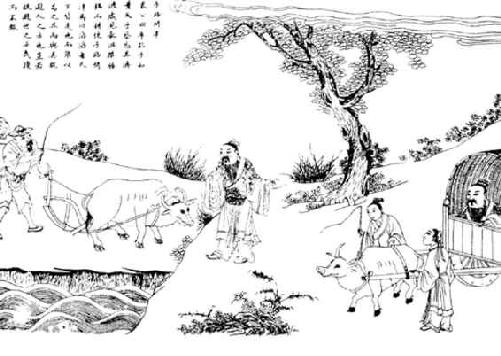

卷四十七 孔子世家第十七
孔子生鲁昌平乡陬zōu邑。其先宋人也，曰孔防叔。防叔生伯夏，伯夏生叔梁纥hé。纥与颜氏女野合【野合：未经婚嫁而交合。】 而生孔子，祷于尼丘得孔子。鲁襄公二十二年而孔子生。生而首上圩顶，故因名曰丘云。字仲尼，姓孔氏。
丘生而叔梁纥死，葬于防山。防山在鲁东，由是孔子疑其父墓处，母讳之也。孔子为儿嬉戏，常陈俎豆，设礼容。孔子母死，乃殡五父之衢，盖其慎也。陬zōu人挽父之母诲孔子父墓，然后往合葬于防焉。
孔子要【要：通“腰”。】 绖dié，季氏飨士，孔子与往。阳虎绌【绌：通“黜”，斥退，不接待。】 曰：“季氏飨士，非敢飨子也。”孔子由是退。
孔子年十七，鲁大夫孟厘子病且死，诫其嗣懿子曰：“孔丘，圣人之后，灭于宋。其祖弗父何始有宋而嗣让厉公。及正考父佐戴、武、宣公，三命兹【兹：通“滋”。】
益恭，故鼎铭云：‘一命而偻，再命而伛，三命而俯。循墙而走，亦莫敢余侮。 【
【
 ：稠粥。】
于是，粥于是，以煳余口。’其恭如是。吾闻圣人之后，虽不当世，必有达者。今孔丘年少好礼，其达者欤？吾即没，若必师之。”及厘子卒，懿子与鲁人南宫敬叔往学礼焉。是岁，季武子卒，平子代立。
：稠粥。】
于是，粥于是，以煳余口。’其恭如是。吾闻圣人之后，虽不当世，必有达者。今孔丘年少好礼，其达者欤？吾即没，若必师之。”及厘子卒，懿子与鲁人南宫敬叔往学礼焉。是岁，季武子卒，平子代立。
孔子出生在鲁国昌平乡的陬邑。他的祖先是宋国人，名叫孔防叔。防叔生了伯夏，伯夏生了叔梁纥。叔梁纥和一位姓颜的女子野合生下了孔子，他们来到尼丘山祈祷之后就生下了孔子。鲁襄公二十二年（前551年）时，孔子出生。孔子刚出生时，头顶中间较低，四周较高，所以就取名叫丘。字仲尼，姓孔。
孔子出生之后，叔梁纥就死了，埋葬在防山。防山位于鲁国的东部，因而孔子并不知道父亲的坟墓在何处，他的母亲也不愿说。孔子小时候嬉戏游玩时，常陈列一些俎豆之类的礼器，举行仪式。孔子的母亲去世后，就停柩在五父之衢，并未埋葬，这是出于慎重的考虑。陬邑人挽父的母亲告诉孔子他父亲的墓地所在，然后孔子前去将母亲与父亲合葬在了防山。
孔子的腰里还系着白布孝带时，季孙氏设宴款待名士，孔子前去参加。阳虎驱赶他说：“季孙氏设宴款待名士，并没有请你来。”孔子由此就退了出来。
孔子十七岁时，鲁国的大夫孟厘子病入膏肓将要死去，他告诫他的继承人懿子说：“孔丘，是圣人的后人，他的先人在宋国灭亡。他的先祖弗父何当初应该继位为宋国国君，却将君位让给了他的弟弟厉公。到正考父时，辅佐戴公、武公和宣公，虽然三次受命却越来越恭谨，因此所铸的鼎的铭文上就说：‘第一次受命时曲着身体接受，第二次受命时弯着腰接受，第三次受命时俯下身体接受。走路时谨慎地沿着墙走，也没有人敢来欺侮我。煮稠粥用这个鼎，煮稀粥也用这个鼎，我就是靠它来煳口的。’他的恭谨已经到了这样的程度。我听人说圣人的后人，虽不一定能当政掌权，但一定会有贤达的人。现在孔丘年纪尚小却爱好礼仪，那个贤达的人就是他吧？我如果死了，你一定要用师礼侍奉孔丘。”等到厘子去世，懿子与鲁国人南宫敬叔来到孔子那里学习礼仪。这一年，季武子去世，平子继立。
孔子贫且贱。及长，尝为季氏史，料量平。尝为司职吏而畜蕃息。由是为司空。已而去鲁，斥乎齐，逐乎宋、卫，困于陈蔡之间，于是反鲁。孔子长九尺有【有，通“又”。】 六寸，人皆谓之“长人”而异之。鲁复善待，由是反鲁。
鲁南宫敬叔言鲁君曰：“请与孔子适周。”鲁君与之一乘车，两马，一竖子俱，适周问礼，盖见老子云。辞去，而老子送之曰：“吾闻富贵者送人以财，仁人者送人以言。吾不能富贵，窃仁人之号，送子以言，曰：‘聪明深察而近于死者，好议人者也。博辩广大危其身者，发人之恶者也。为人子者毋以有己，为人臣者毋以有己。’”孔子自周反于鲁，弟子稍益进焉。
是时也，晋平公淫，六卿擅权，东伐诸侯。楚灵王兵强，陵轹lì中国。齐大而近于鲁。鲁小弱，附于楚则晋怒；附于晋则楚来伐；不备于齐，齐师侵鲁。
孔子家境贫穷而且地位卑下。等到他成年后，曾担任季氏家中的小吏，出纳粮食及财物全都算得公平准确。他还曾担任管理畜牧的小吏，使牲畜繁殖得很好。因此他就做了司空。不久后他离开鲁国，在齐国受到排斥，在宋国和卫国遭到驱逐，在陈国和蔡国之间受困，于是返回鲁国。孔子身高九尺六寸，人们都说他是“长人”，觉得他与众不同。鲁国依然对他很好，所以他回到了鲁国。
鲁国的南宫敬叔对鲁君说：“请允许我和孔子一起出使周国。”鲁君给了他们一辆车，两匹马，以及一名随从的童子，前往周国学习礼仪，又拜望了老子。辞别离开的时候，老子出来送他们说：“我听人说富贵的人在送行时赠给人金钱，仁德的人在送行时赠给人吉言。我不富贵，窃取了一个仁德之人的名号，就送给你几句话，我要说的是：‘聪明能够深察的人离死亡不远，因为他们喜欢议论别人是非。学识广博、能言善辩、能力无边的人总会危害自身，因为他们喜好揭发别人的过错。身为子女的不能有私心，做别人臣子的不能只想到自己。’”孔子从周国回到了鲁国，他的弟子逐渐多了起来。
当时，晋平公淫乱放荡，晋国六卿专权，向东攻打诸侯。楚灵王兵力强盛，欺凌中原各诸侯。齐国势力强大，而且与鲁国邻近。鲁国又小又弱，依附楚国则晋国就会发怒；依附晋国则楚国就会前来征讨；事奉齐国做得不周到，齐国的军队就会入侵鲁国。
鲁昭公之二十年，而孔子盖年三十矣。齐景公与晏婴来适鲁，景公问孔子曰：“昔秦穆公国小处辟【辟：通“僻”。】 ，其霸何也？”对曰：“秦，国虽小，其志大；处虽辟，行中正。身举五羖gǔ，爵之大夫，起累【累：通“缧”。】 绁之中，与语三日，授之以政。以此取之，虽王可也，其霸小矣。”景公说。
孔子年三十五，而季平子与郈昭伯以斗鸡故得罪鲁昭公，昭公率师击平子，平子与孟氏、叔孙氏三家共攻昭公，昭公师败，奔于齐，齐处昭公干侯。其后顷之，鲁乱。孔子适齐，为高昭子家臣，欲以通乎景公。与齐太师语乐，闻《韶》音，学之，三月不知肉味，齐人称之。
景公问政孔子，孔子曰：“君君，臣臣，父父，子子。”景公曰：“善哉！信如君不君，臣不臣，父不父，子不子，虽有粟，吾岂得而食诸！”他日又复问政于孔子，孔子曰：“政在节财。”景公说，将欲以尼谿田封孔子。晏婴进曰：“夫儒者滑稽而不可轨法；倨傲自顺，不可以为下；崇丧遂【遂：任意，放纵。】 哀，破产厚葬，不可以为俗；游说乞贷，不可以为国。自大贤之息，周室既衰，礼乐缺有间。今孔子盛容饰，繁登降之礼，趋详之节，累世不能殚其学，当年【当年：当世。】 不能究其礼。君欲用之以移齐俗，非所以先细民也。”后景公敬见孔子，不问其礼。异日，景公止【止：挽留。】 孔子曰：“奉子以季氏，吾不能。”以季孟之间待之。齐大夫欲害【害：嫉恨。】 孔子，孔子闻之。景公曰：“吾老矣，弗能用也。”孔子遂行，反乎鲁。
鲁昭公二十年（前522年）的时候，孔子三十岁。齐景公与晏婴来到鲁国，景公问孔子说：“从前秦穆公的国家很小，而且位置偏僻，他凭借什么称霸呢？”孔子回答说：“秦国，虽然国家很小，但它的志向却很大；地理位置虽然较为偏僻，但国家的所作所为却很得当。秦君亲自任用以五张黑羊皮赎出来的百里奚，封他大夫的爵位，把他从拘禁中解救出来，秦君与他谈论了三天，让他执掌国政。以这样的方法整治国家，即使称王天下也是能够做到的，他当个霸主不算什么大事。”景公听了十分高兴。
孔子三十五岁时，季平子和郈昭伯由于斗鸡的缘故得罪了鲁昭公，昭公就率领军队进攻平子，平子和孟氏、叔孙氏三家共同攻打昭公，昭公的军队战败了，昭公逃奔齐国，齐国就把昭公安置到了干侯。此后不久，鲁国发生变乱。孔子来到齐国，做了高昭子的家臣，打算借此接近景公。孔子和齐国的乐官谈论音乐，听到《韶》这个乐曲，学习《韶》乐，陶醉其中竟然三个月都吃不出肉的味道，齐国人都称赞这件事。
齐景公向孔子询问施政的方法，孔子说：“国君要有国君的样子，大臣要有大臣的样子，父亲要有父亲的样子，儿子要有儿子的样子。”景公说：“讲得真好！要是真的是国君没有国君的样子，大臣没有大臣的样子，父亲没有父亲的样子，儿子没有儿子的样子，虽然有粮食，我又怎么能吃到呢！”改天景公再次询问孔子施政的方法，孔子说：“施政就在于节省财物。”景公十分高兴，想要把尼谿的田地封赏给孔子。晏婴进言说：“那些儒者都能言善辩，不能当作法规来实行；他们傲慢自大，不能让这样的人当臣下；他们崇尚丧事的礼仪，尽情地表达哀伤，破费家产来厚葬死去的人，不能让这种做法成为习俗；他们到处游说，乞求借贷，不能以此来整治国家。自从那些圣贤相继去世，周王室已经衰微，礼乐制度残缺已经有一段时间了。现在孔子盛装修饰自己的仪容，制定繁琐的应对进退间上下快慢的礼节，刻意追求举手投足的仪态，令几世几代都学不完他的学问，花一生时间也学不完这些礼仪。您打算用这一套规矩来改造齐国的习俗，恐怕不是引导民众的好方法。”此后景公仍然恭敬地接见孔子，却不再询问他关于礼制的事情。另一日，景公挽留孔子说：“以季氏上卿的规格对待你，我无法做到。”就按照低于季孙氏但高于孟孙氏的规格对待孔子。齐国大夫嫉恨孔子，孔子听说了这件事。景公说：“我已经老了，不能任用你了。”于是孔子离开齐国，回到鲁国。
孔子年四十二，鲁昭公卒于干侯，定公立。定公立五年，夏，季平子卒，桓子嗣立。季桓子穿井得土缶，中若羊，问仲尼云“得狗”。仲尼曰：“以丘所闻，羊也。丘闻之，木石之怪夔、罔阆liǎng，水之怪龙、罔象，土之怪坟羊。”
吴伐越，堕【堕：通“隳”，毁坏。】 会稽，得骨节专车。吴使使问仲尼：“骨何者最大？”仲尼曰：“禹致群神于会稽山，防风氏后至，禹杀而戮之，其节专车，此为大矣。”吴客曰：“谁为神？”仲尼曰：“山川之神足以纲纪天下，其守为神，社稷为公侯，皆属于王者。”客曰：“防风何守？”仲尼曰：“汪罔氏之君守封、禺之山，为厘姓。在虞、夏、商为汪罔，于周为长翟，今谓之大人。”客曰：“人长几何？”仲尼曰：“僬jiāo侥yáo氏三尺，短之至也。长者不过十之，数之极也。”于是吴客曰：“善哉圣人！”
桓子嬖臣曰仲梁怀，与阳虎有隙。阳虎欲逐怀，公山不狃niǔ止之。其秋，怀益骄，阳虎执怀。桓子怒，阳虎因囚桓子，与盟而 之。阳虎由此益轻季氏。季氏亦僭于公室，陪臣执国政，是以鲁自大夫以下皆僭离于正道。故孔子不仕，退而修《诗》《书》《礼》《乐》，弟子弥众，至自远方，莫不受业焉。
之。阳虎由此益轻季氏。季氏亦僭于公室，陪臣执国政，是以鲁自大夫以下皆僭离于正道。故孔子不仕，退而修《诗》《书》《礼》《乐》，弟子弥众，至自远方，莫不受业焉。
孔子四十二岁的那年，鲁昭公在干侯去世，鲁定公即位。定公即位五年后，夏季，季平子去世，桓子继承季平子成为上卿。季桓子在挖井时获得一个瓦罐，瓦罐里有个像羊一样的东西，他就问孔子，说自己“得到一只狗”。孔子说：“根据我的所见所闻，这是羊。我曾听说，山中的怪物是夔和罔阆，水里的怪物是龙和罔象，土里的怪物是坟羊。”
吴国讨伐越国，毁掉了越国的都城会稽，获得了一节足足能装满一车的大骨头。吴国派使者来问孔子：“什么东西的骨头最大？”孔子说：“大禹在会稽山召集群神，防风氏来晚了，禹就杀了他示众，他的骨节足足能装满一车，这是骨头里面最大的。”吴国的使者问：“谁是神呢？”孔子说：“山川的神灵主宰天下，负责守护、祭祀山川的诸侯也称为神，主管祭祀土地与谷物的是公侯，全都服从于王。”使者问：“防风氏负责祭祀什么呢？”孔子说：“防风氏就是汪罔氏。汪罔氏的君主负责祭祀封山、禺山，姓厘。在虞、夏、商时期称为汪罔，在周朝时称为长翟，如今被称作大人。”使者问：“人的身高能达到多少？”孔子说：“僬侥氏身高三尺，矮到了极点。最高的人也不过十倍于此，这应该是身高数字的极限了。”于是吴国的使臣说：“高明啊，圣人！”
季桓子有个宠臣名叫仲梁怀，和阳虎有嫌隙。阳虎想要驱逐仲梁怀，季氏的家臣公山不狃阻止了他。当年秋天，仲梁怀愈发骄纵，阳虎捉住了仲梁怀。桓子非常生气，阳虎就趁机囚禁了桓子，阳虎和桓子订立盟约后才放了桓子。阳虎因此越发轻视季氏。季氏本身也超越了礼法的权限，凌驾于公室之上，以下属臣子的身份执掌国政，所以鲁国自大夫以下全都僭越礼法背离了正道。因此孔子就不再做官，隐退下来修订《诗》《书》《礼》《乐》，他的弟子越来越多，不管多远都有人来，没有不虚心接受孔子所授学业的。
定公八年，公山不狃不得意于季氏，因阳虎为乱，欲废三桓之适，更立其庶孽阳虎素所善者，遂执季桓子。桓子诈之，得脱。定公九年，阳虎不胜，奔于齐。是时孔子年五十。
公山不狃以费畔季氏，使人召孔子。孔子循道弥久，温温【温温：柔和的样子。又说同“蕴蕴”，郁郁不得志的样子。】 无所试，莫能己用，曰：“盖周文武起丰镐hào而王，今费虽小，傥【傥：义同“倘”，或许。】 庶几乎！”欲往。子路不说，止孔子。孔子曰：“夫召我者岂徒哉？如用我，其为东周乎！”然亦卒不行。
其后定公以孔子为中都宰。一年，四方皆则之。由中都宰为司空，由司空为大司寇。
鲁定公八年（前502年），公山不狃在季氏手下很不得志，利用阳虎叛乱的机会，想要废掉三桓季孙氏、叔孙氏与孟孙氏的嫡生继承人，改立阳虎素来所喜爱的其他庶子，于是拘禁了季桓子。桓子设诈欺骗了他，得以脱身。鲁定公九年（前501年），阳虎作战不胜，逃奔齐国。当时孔子五十岁。
公山不狃依靠费邑反叛季氏，派人前去邀请孔子。孔子寻求治国的法则已经很长时间了，处处受人压制，没有施展才能的地方，没有人能任用自己，就说：“周文王、武王自丰、镐兴起而称王，如今费邑尽管很小，或许能和丰、镐差不多吧！”想要前去。子路很不高兴，就劝止孔子。孔子说：“他们请我去，怎么会让我白跑一趟呢？倘若任用我，大概能在东方重现周朝的礼乐制度吧！”然而孔子最终也没能成行。
从那以后，鲁定公让孔子担任中都的长官。一年后，四处都以孔子的治理之道为榜样。孔子由中都长官升任司空，又由司空升任大司寇。
定公十年春，及齐平。夏，齐大夫黎锄言于景公曰：“鲁用孔丘，其势危齐。”乃使使告鲁为好会，会于夹谷。鲁定公且以乘车好往。孔子摄相事，曰：“臣闻有文事者必有武备，有武事者必有文备。古者诸侯出疆，必具官以从。请具左右司马。”定公曰：“诺。”具左右司马。会齐侯夹谷，为坛位，土阶三等，以会遇之礼相见，揖让而登。献酬之礼毕，齐有司趋而进曰：“请奏四方之乐。”景公曰：“诺。”于是旍【旍：同“旌”。】 旄羽袚矛戟剑拨鼓噪而至。孔子趋而进，历阶而登，不尽一等，举袂而言曰：“吾两君为好会，夷狄之乐何为于此！请命有司！”有司却之，不去，则左右视晏子与景公。景公心怍【怍：惭愧。】 ，麾而去之。有顷，齐有司趋而进曰：“请奏宫中之乐。”景公曰：“诺。”优倡侏儒为戏而前。孔子趋而进，历阶而登，不尽一等，曰：“匹夫而营惑诸侯者罪当诛！请命有司！”有司加法焉，手足异处。景公惧而动，知义不若，归而大恐，告其群臣曰：“鲁以君子之道辅其君，而子独以夷狄之道教寡人，使得罪于鲁君，为之奈何？”有司进对曰：“君子有过则谢以质，小人有过则谢以文。君若悼之，则谢以质。”于是齐侯乃归所侵鲁之郓、汶阳、龟阴之田以谢过。
鲁定公十年（前500年）春季，鲁国和齐国和好。夏季，齐国大夫黎锄向齐景公进言说：“鲁国任用了孔丘，这种形势对齐国有危害。”因此就派出使者告知鲁国举行友好的会见，会见的地点是夹谷。鲁定公装饰好车子，不设防备地即将卦会。当时孔子兼任盟会司仪，说：“我听说进行文事活动的人一定要有武力防备，进行武事活动的人一定要有文事防备。古时诸侯离开自己的疆域，一定会配备文武官员跟随前往。请让左右司马随从。”定公说：“好的。”就安排了左右司马随同前往。在夹谷与齐侯会面，在那里修筑了高台，设定了两国诸侯的位次，修筑了土台阶三级，依照诸侯平等相会的礼节，鲁定公与齐景公拱手相互揖让着登上了高台。宴饮赠礼的仪式完毕，齐国的官员快步走上前来请示说：“请演奏四方各族的舞乐。”齐景公说：“好的。”因此来自齐国的乐队，打着旌旗，头上插着羽毛，身上披着皮衣，手里拿着矛、戟、剑、大楯，击鼓呼叫而来。孔子快步走上前来，一步一阶地迅速往上登，离坛还差最后一级台阶时，举起衣袖说：“我们两国之君在进行友好的会面，夷狄的舞乐为什么会在这里！请命令相关官员立即处理！”相关官员下令让乐队退下，乐队并未离去，于是孔子向左右看着晏子和齐景公。齐景公心中很惭愧，挥手让乐队退下。不一会儿，齐国的相关官员快步走上前来说：“请弹奏宫中的音乐。”齐景公说：“好的。”倡优与侏儒就戏谑调笑着走上前来。孔子快步走上前来，一步一阶地迅速往上登，离坛还差最后一级台阶时，说：“下等人胆敢戏弄蛊惑诸侯的，罪当处死！请相关官员立即处理！”相关官员依法施行，倡优和侏儒都被处斩，手和脚都分开了。齐景公内心恐惧而震动，知道在道义这方面难以和鲁国匹敌，回国后十分惊恐，告诫群臣说：“鲁国的臣子用君子之道辅佐他们的君主，你们却偏偏用夷狄之道来教我，让我得罪了鲁国国君，我该怎么办呢？”相关官员上前回答说：“君子犯了错就实实在在地用行动表示歉意，小人犯了错就花言巧语地掩饰。您如果真的痛心这件事，就用实实在在的行动去表示歉意。”于是齐侯便归还了所侵占的鲁国的郓、汶阳、龟阴的土地以表示歉意。
定公十三年夏，孔子言于定公曰：“臣无藏甲，大夫毋百雉之城。”使仲由【仲由：字子路，孔子弟子。】 为季氏宰，将堕三都。于是叔孙氏先堕郈。季氏将堕费，公山不狃、叔孙辄率费人袭鲁。公与三子入于季氏之宫，登武子之台。费人攻之，弗克，入及公侧。孔子命申句须、乐颀下伐之，费人北。国人追之，败诸姑蔑。二子奔齐，遂堕费。将堕成，公敛处父谓孟孙曰：“堕成，齐人必至于北门。且成，孟氏之保鄣，无成是无孟氏也。我将弗堕。”十二月，公围成，弗克。
定公十四年，孔子年五十六，由大司寇行摄相事，有喜色。门人曰：“闻君子祸至不惧，福至不喜。”孔子曰：“有是言也。不曰‘乐其以贵下人’乎？”于是诛鲁大夫乱政者少正卯。与闻国政三月，粥【粥：同“鬻”，卖。】 羔豚者弗饰贾【贾：同“价”。】 ，男女行者别于途，途不十遗，四方之客至乎邑者不求有司，皆予之以归。
鲁定公十三年（前497年）夏季，孔子告诉定公说：“臣子不可以私藏甲兵，大夫不可以拥有高达一丈、长达三百丈的城墙。”于是，他派仲由担任季氏家臣，打算让季孙、叔孙、孟孙三家拆掉城邑的城墙。于是叔孙氏率先拆掉了城墙。季氏将要拆掉都城费邑的城墙，公山不狃和叔孙辄率领费邑人袭击鲁国都城。定公与季孙、叔孙、孟孙三人进入季氏在鲁国都城中的宫院，登上了当年季武子修筑的楼台。费邑人攻打他们，未能攻克，但还是有人闯到了定公的旁边。孔子派大夫申句须、乐颀下台攻打费邑人，费邑人战败逃走。鲁国人追击他们，在姑蔑击败了费邑人。公山不狃、叔孙辄逃奔齐国，于是拆毁了费邑的城墙。即将拆掉孟孙氏的成城，公敛处父对孟孙氏说：“拆掉了成城的城墙，齐国的军队一定能够直接到达都城的北门。而且成城是孟氏的屏障，没有成城也就没有孟氏。我不会拆掉成城的城墙。”十二月，鲁定公包围成城，没能攻克。
鲁定公十四年（前496年），孔子五十六岁，以大司寇的身份代理宰相的事务，面上现出喜色。有弟子说：“听说君子遇到灾难祸害不会恐惧，得到福运也不会喜形于色。”孔子说：“是有这样的话。但不还说‘身在高位礼贤下士而自得其乐’吗？”于是孔子杀掉了扰乱鲁国政事的大夫少正卯。孔子参与国政三个月，贩卖羊羔和猪豚的人没有任意抬高价格，男女行人在路上分道行走，路上掉了东西也没人捡，从四面八方来到鲁国办事的人，到了城中不用和官员求情，都能得到他们的所需之物并满意地回去。
齐人闻而惧，曰：“孔子为政必霸，霸则吾地近焉，我之为先并矣。盍致地焉？”黎锄曰：“请先尝沮之。沮之而不可则致地，庸迟乎！”于是选齐国中女子好者八十人，皆衣文衣而舞《康乐》，文马三十驷，遗鲁君。陈女乐文马于鲁城南高门外。季桓子微服往观再三，将受，乃语鲁君为周道游，往观终日，怠于政事。子路曰：“夫子可以行矣。”孔子曰：“鲁今且郊，如致膰pán乎大夫，则吾犹可以止。”桓子卒受齐女乐，三日不听政；郊，又不致膰俎于大夫。孔子遂行，宿乎屯。而师己送，曰：“夫子则非罪。”孔子曰：“吾歌可夫？”歌曰：“彼妇之口，可以出走；彼妇之谒，可以死败。盖优哉游哉，维以卒岁！”师己反，桓子曰：“孔子亦何言？”师己以实告。桓子喟然叹曰：“夫子罪我以群婢故也夫！”
齐国人听说后十分恐惧，说：“孔子整治好国政后一定会称霸，称霸的话我们齐国的国土和鲁国邻近，我们就会率先被吞并。何不先送给鲁国一些土地呢？”齐国大夫黎锄说：“请先尝试能否阻止孔子当政。不能阻止再赠送国土，难道还会晚吗！”因此就挑选了齐国容貌美丽的女子八十人，全都穿着色彩华丽的服装，跳着《康乐》舞，连同毛色斑斓的马匹驾着的三十辆马车，一起送给鲁君。将女乐队和纹饰斑斓的马匹陈列在鲁国都城以南的高门外。季桓子身着便服再三前往观看，想要接受，就对鲁君说要到各处走走，趁此机会整天前去观看，对政事很懈怠。子路说：“老师，我们是时候离开这儿了。”孔子说：“如今鲁国即将举行郊祭，如果将郊祭所用的烤肉分送一些给大夫的话，那我还是可以留下来的。”桓子最终接受了齐国送来的女乐，一连三天不处理政事；举行了郊祭后，又不把祭肉和郊祭所用的礼器分送给大夫。于是孔子便离开了鲁国，在屯地留宿过夜。师己前来送行，说：“先生并没有什么过错。”孔子说：“我唱首歌行吗？”他唱道：“那个女子就凭一张嘴，可以使大臣被迫出走；那个女子的进言，就能让人死国败。悠闲自在啊，只有以此来消磨时光！”师己返回国都，桓子问：“孔子说了些什么？”师己据实相告。桓子伤心地长叹说：“先生是因为齐国女乐的事而责怪我！”
孔子遂适卫，主于子路妻兄颜浊邹家。卫灵公问孔子：“居鲁得禄几何？”对曰：“奉【奉：通“俸”。】 粟六万。”卫人亦致粟六万。居顷之，或谮孔子于卫灵公。灵公使公孙余假一出一入。孔子恐获罪焉，居十月，去卫。
将适陈，过匡，颜刻为仆，以其策指之曰：“昔吾入此，由彼缺也。”匡人闻之，以为鲁之阳虎。阳虎尝暴匡人，匡人于是遂止孔子。孔子状类阳虎，拘焉五日。颜渊后，子曰：“吾以汝为死矣。”颜渊曰：“子在，回何敢死！”匡人拘孔子益急，弟子惧。孔子曰：“文王既没，文不在兹乎？天之将丧斯文也，后死者不得与于斯文也。天之未丧斯文也，匡人其如予何！”孔子使从者为宁武子臣于卫，然后得去。
去即过蒲。月余，反乎卫，主蘧伯玉【蘧伯玉：名瑗，卫国大夫。】 家。灵公夫人有南子者，使人谓孔子曰：“四方之君子不辱欲与寡君为兄弟者，必见寡小君。寡小君愿见。”孔子辞谢，不得已而见之。夫人在絺帷中。孔子入门，北面稽首。夫人自帷中再拜，环佩玉声璆qiú然。孔子曰：“吾乡为弗见，见之礼答焉。”子路不说。孔子矢之曰：“予所不者，天厌之！天厌之！”居卫月余，灵公与夫人同车，宦者雍渠参乘，出，使孔子为次乘，招摇巿过之。孔子曰：“吾未见好德如好色者也。”于是丑之，去卫，过曹。是岁，鲁定公卒。
于是孔子来到卫国，寄居在子路妻子的兄长颜浊邹家中。卫灵公问孔子说：“您在鲁国时能得到多少俸禄？”孔子回答说：“俸禄粮食六万斗。”卫国人也送给孔子粮食六万斗。住了不长时间，有人在卫灵公面前诋毁孔子。卫灵公让公孙余假监视着孔子的来往出入。孔子担心获罪，住了十个月，就离开了卫国。
孔子即将前往陈国，路过卫国的匡地，颜刻充当驾车人，他用马鞭指着匡地说：“从前我来过这个地方，是从那个缺口进去的。”匡地人听说有人来到，都以为那是鲁国的阳虎。阳虎曾对匡人施暴，匡人于是就拦住了孔子。孔子长得很像阳虎，被匡人困住整整五天。颜渊落在后面，晚一些才赶到，孔子说：“我以为你已经死了。”颜渊说：“先生还健在，我如何敢死！”匡人围捕孔子越来越急，弟子们都很恐惧。孔子说：“周文王已然去世，周朝的礼乐制度不都存在我这里吗？上天将要毁灭周朝的礼乐制度，就不可能让我这后死之人掌握这种礼乐制度。上天倘若不打算毁灭周朝的礼乐制度，匡人能把我怎么样！”孔子派了个弟子前往卫国都城担任宁武子的家臣，然后才得以离开。
孔子等人离开匡地经过蒲地。一个多月后，孔子回到卫国，寄居在蘧伯玉家。卫灵公有个叫南子的夫人，派人对孔子说：“四方来的君子看得起我国国君并想结为兄弟友谊的，一定要面见我们国君的夫人。我们国君的夫人希望和您见面。”孔子表示辞谢，但还是迫不得已前去见她。夫人在细葛布的帷帐之中。孔子进入门内，面朝北行叩头之礼。夫人在帷帐中行拜礼两次，身上佩戴的环佩玉器叮当作响。孔子归来后说：“我原来不想见她，既然前去见她就应该以礼相答谢。”子路很不高兴。孔子起誓说：“我如果说的不是真的，就让上天厌恶我吧！就让上天厌恶我吧！”在卫国住了一个多月，卫灵公和夫人同乘一辆车，宦官雍渠为参乘，离开宫廷，让孔子乘坐第二辆车，大摇大摆地从闹市中穿过。孔子说：“我从未见他喜好德行如同喜好美色一样。”于是厌恶这里的一切，离开卫国，经过曹国。这一年，鲁定公去世。
孔子去曹适宋，与弟子习礼大树下。宋司马桓魋tuí欲杀孔子，拔其树。孔子去。弟子曰：“可以速矣。”孔子曰：“天生德于予，桓魋其如予何！”
孔子适郑，与弟子相失，孔子独立郭东门。郑人或谓子贡曰：“东门有人，其颡似尧，其项类皋陶，其肩类子产，然自要以下不及禹三寸。累累若丧家之狗。”子贡以实告孔子。孔子欣然笑曰：“形状，末也。而谓似丧家之狗，然哉！然哉！”
孔子遂至陈，主于司城贞子家。岁余，吴王夫差伐陈，取三邑而去。赵鞅伐朝歌。楚围蔡，蔡迁于吴。吴败越王句践会稽。
有隼集于陈廷而死，楛矢贯之，石砮，矢长尺有咫【咫：八寸。】 。陈愍公使使问仲尼。仲尼曰：“隼来远矣，此肃慎之矢也。昔武王克商，信道九夷百蛮，使各以其方贿来贡，使无忘职业。于是肃慎贡楛hù矢石砮nǔ，长尺有咫。先王欲昭其令德，以肃慎矢分大姬，配虞胡公而封诸陈。分同姓以珍玉，展亲；分异姓以远方职，使无忘服。故分陈以肃慎矢。”试求之故府，果得之。
孔子离开曹国，来到宋国，与弟子们在一棵大树下演习礼仪。宋国的司马桓魋想要杀掉孔子，派人去砍倒了那棵大树。孔子离开了这里。弟子们说：“可以快些离开这儿。”孔子说：“上天将这样的品德降临在我身上，桓魋能把我怎么样呢！”
孔子来到郑国，和弟子走散了，孔子独自一人站在外城的东门。有个郑国人对子贡说：“东门那里有个人，他的额头很像尧，他的脖子很像皋陶，他的肩很像子产，而腰部以下的部分比禹差了三寸。疲劳狼狈的样子就像丧家狗一样。”子贡将这些话如实地告诉了孔子。孔子欣然地笑着说：“外貌，是微末的东西。但说我如同丧家狗一般，确实这样啊！确实这样啊！”
于是孔子来到陈国，寄居在司城贞子家中。一年多之后，吴王夫差讨伐陈国，攻取三座城后撤军。赵鞅攻打朝歌。楚国包围蔡国，蔡国迁到了吴地。吴国军队在会稽击败了越王句践。
有几只隼停在陈君的宫廷中死去，一支木箭穿透了隼的身子，箭头是石头磨制的，箭长一尺八寸。陈愍公派使者问孔子。孔子说：“隼是从很远的地方飞来的，这是远方肃慎部族的箭。从前周武王攻灭了商朝，打通了前往东方九夷和南方百蛮的道路，命令各族都以本地的特产送来进贡，让他们不要忘了自身对天子应承担的职责与义务。于是肃慎族就进贡了楛木箭与石制的箭头，箭长一尺八寸。先王为了宣扬他的美德，就将肃慎部族的箭分赐给了长女大姬，将她许配给了虞胡公，并将虞胡公封在了陈地。又分赠给同姓之人珍宝玉石等物，以加重亲密关系；分赠给异姓诸侯远方进献的贡品，让他们不要忘记服从周天子。所以将肃慎部族的箭赠予陈国。”陈愍公让人去从前的仓库中试着寻找，果然得到了楛木箭。
孔子居陈三岁，会晋楚争强，更伐陈，及吴侵陈，陈常被寇。孔子曰：“归与归与！吾党之小子狂简，进取不忘其初。”于是孔子去陈。
过蒲，会公叔氏以蒲畔，蒲人止孔子。弟子有公良孺者，以私车五乘从孔子。其为人长贤，有勇力，谓曰：“吾昔从夫子遇难于匡，今又遇难于此，命也已。吾与夫子再罹难，宁斗而死！”斗甚疾。蒲人惧，谓孔子曰：“苟毋适卫，吾出子。”与之盟，出孔子东门。孔子遂适卫。子贡曰：“盟可负邪？”孔子曰：“要盟【要盟：受人强迫订立的盟约。】 也，神不听。”
卫灵公闻孔子来，喜，郊迎。问曰：“蒲可伐乎？”对曰：“可。”灵公曰：“吾大夫以为不可。今蒲，卫之所以待晋楚也，以卫伐之，无乃不可乎？”孔子曰：“其男子有死之志，妇人有保西河之志。吾所伐者不过四五人。”灵公曰：“善。”然不伐蒲。
灵公老，怠于政，不用孔子。孔子喟然叹曰：“苟有用我者，期月而已，三年有成。”孔子行。
孔子在陈国住了三年，当时正是晋、楚两国争霸时期，轮番讨伐陈国，到了吴国侵犯陈国时，陈国经常遭到劫掠。孔子说：“回去吧！回去吧！我的徒弟都志向高远，努力进取并未忘记最初的志向。”于是孔子离开陈国。
路过蒲地，遇到卫国大夫公叔氏占据蒲地叛乱，蒲地人留住了孔子。孔子的弟子里有个名叫公良孺的，带着私人的五辆车跟从孔子。他身材高大，为人贤德，勇勐有力，对孔子说：“我从前跟随先生在匡地遭遇危难，如今又在此地遭遇危难，这就是命运。我和先生再一次遭逢灾难，宁愿战斗而死！”战斗十分激烈。蒲地人害怕了，对孔子说：“只要不去卫国，我们就放你走。”孔子和蒲地人盟誓，蒲地人放孔子从东门出去了。于是孔子前往卫国。子贡说：“盟誓可以违背吗？”孔子说：“受人强迫订立的盟约，神是不会理睬的。”
卫灵公听说孔子来了，非常高兴，来到郊外迎接。灵公问孔子说：“蒲地可以讨伐吗？”孔子回答说：“可以。”灵公说：“我的大夫们认为不可以。现在的蒲地是卫国能够阻挡晋、楚两国攻伐的屏障，用卫国的军队去攻打蒲地，恐怕不太好吧？”孔子说：“蒲地的男子有宁死也不跟从公叔氏为乱的志向，妇女有誓死保卫西河的志气。我们所要讨伐的不过是四五个忠实于叛乱者的人。”灵公说：“好。”然而并没有攻打蒲地。
卫灵公年纪大了，对国政很懈怠，并未任用孔子。孔子长叹着说：“要是有人能够任用我，一年可见成效，三年就会很有成绩了。”孔子离开卫国。
佛肸xī为中牟宰。赵简子攻范、中行，伐中牟。佛肸畔，使人召孔子。孔子欲往。子路曰：“由闻诸夫子，‘其身亲为不善者，君子不入也’。今佛肸亲以中牟畔，子欲往，如之何？”孔子曰：“有是言也。不曰坚乎，磨而不磷；不曰白乎，涅而不淄。我岂匏páo瓜也哉，焉能系而不食？”
孔子击磬。有荷蒉kuì而过门者，曰：“有心哉，击磬乎！硁硁乎，莫己知也夫而已矣！”
孔子学鼓琴师襄子，十日不进。师襄子曰：“可以益矣。”孔子曰：“丘已习其曲矣，未得其数也。”有间，曰：“已习其数，可以益矣。”孔子曰：“丘未得其志也。”有间，曰：“已习其志，可以益矣。”孔子曰：“丘未得其为人也。”有间，有所穆【穆：通“默”，沉默。】 然深思焉，有所怡然高望而远志焉。曰：“丘得其为人。黯然而黑，几然而长，眼如望羊，如王四国，非文王其谁能为此也！”师襄子辟席再拜，曰：“师盖云《文王操》也。”
孔子既不得用于卫，将西见赵简子。至于河而闻窦鸣犊、舜华之死也，临河而叹曰：“美哉水，洋洋乎！丘之不济此，命也夫！”子贡趋而进曰：“敢问何谓也？”孔子曰：“窦鸣犊、舜华，晋国之贤大夫也。赵简子未得志之时，须此两人而后从政。及其已得志，杀之乃从政。丘闻之也，刳胎杀夭则麒麟不至郊，竭泽涸渔则蛟龙不合阴阳，覆巢毁卵则凤皇不翔。何则？君子讳伤其类也。夫鸟兽之于不义也尚知辟之，而况乎丘哉！”乃还息乎陬乡，作为《陬zōu操》以哀之。而反乎卫，入主蘧伯玉家。
佛肸担任中牟邑的长官。赵简子攻打范氏、中行氏，讨伐中牟。佛肸叛乱，派人前来召请孔子。孔子想要前往。子路说：“我曾听先生说过，‘那种人本身在干坏事，君子是不会去加入的’。如今佛肸独自占据中牟叛乱，您想要前去，这怎么解释呢？”孔子说：“是说过这样的话。但我不是还说过坚硬之物，被磨也不会变薄；不是还说过洁白之物，用黑色染料也无法染黑。我难道是个匏瓜吗，怎能挂在那里而不让人食用呢？”
孔子敲打石磬。有个背着草筐从门前经过的人，说：“有心思啊，就敲打石磬啊！发出硁硁的声音啊，是在说没人了解自己而打算放弃吧。”
孔子向师襄子学习弹琴，学了十天仍没学习新的曲调。师襄子说：“可以增加一些学习内容了。”孔子说：“我已经学会了曲子，只是还没掌握弹琴的技法。”过了些日子，师襄子说：“你已经学会了弹琴的技法，可以多学些内容了。”孔子说：“我还未领悟曲子中表达的思想。”过了些时候，师襄子说：“已经领悟了曲子中表达的思想，可以多学些内容了。”孔子说：“我还没能品味出作曲者塑造的形象。”过了些时候，孔子默然深思，感到心旷神怡，眼界高阔，志向宏大，就说：“我知晓作曲者塑造的形象了。那人肤色黝黑，身材颀长，眼睛明亮深邃而能远望，好像成了天下四方的王，除了周文王谁还能成为这个样子呢！”师襄子站离坐席拜了两拜，说：“我的老师告诉我这首琴曲叫《文王操》。”
孔子既然在卫国没能得到任用，就打算向西去面见赵简子。来到黄河边，听到了窦鸣犊、舜华被赵简子杀掉的消息，孔子面对黄河叹息着说：“多么美的黄河水啊，浩浩荡荡！我没有渡过黄河，这是命运使然啊！”子贡快走几步上前说：“请问这说的是什么呢？”孔子说：“窦鸣犊和舜华都是晋国非常贤德的大夫，赵简子还未得志之时，必须依靠这两个人才得以从政。等到他已经得偿所愿，杀死他们后就执掌了政权。我曾听说，剖腹取胎，杀死幼兽，麒麟就不会来到郊外；竭泽而渔，蛟龙就不会再调合阴阳；倾覆鸟巢，摧毁鸟卵，凤凰就不再飞翔。这是为什么呢？君子忌讳杀伤自己的同类。鸟兽对于那些不合道义的举动都知道躲避，更何况是我孔丘呢！”就回到了陬乡居住，创作《陬操》这首琴曲来哀悼晋国已死的两位贤德的大夫。又回到卫国，寄居在蘧伯玉家中。
他日，灵公问兵陈。孔子曰：“俎豆之事则尝闻之，军旅之事未之学也。”明日，与孔子语，见蜚雁，仰视之，色不在孔子。孔子遂行，复如陈。
夏，卫灵公卒，立孙辄，是为卫出公。六月，赵鞅内太子蒯聩于戚。阳虎使太子絻wèn，八人衰【衰：同“缞”，古代一种用粗麻布制成的孝服。】 绖，伪自卫迎者，哭而入，遂居焉。冬，蔡迁于州来。是岁鲁哀公三年，而孔子年六十矣。齐助卫围戚，以卫太子蒯聩在故也。
夏，鲁桓厘庙燔，南宫敬叔救火。孔子在陈，闻之，曰：“灾必于桓厘庙乎？”已而果然。
秋，季桓子病，辇niǎn而见鲁城，喟然叹曰：“昔此国几兴矣，以吾获罪于孔子，故不兴也。”顾谓其嗣康子曰：“我即死，若必相鲁。相鲁，必召仲尼。”后数日，桓子卒，康子代立。已葬，欲召仲尼。公之鱼曰：“昔吾先君用之不终，终为诸侯笑。今又用之，不能终，是再为诸侯笑。”康子曰：“则谁召而可？”曰：“必召冉求【冉求：字子有，孔子弟子，周文王第十子冉季载后裔。】 。”于是使使召冉求。冉求将行，孔子曰：“鲁人召求，非小用之，将大用之也。”是日，孔子曰：“归乎归乎！吾党之小子狂简，斐然成章，吾不知所以裁之。”子赣【子赣：即子贡，复姓端木，名赐，孔子弟子。】 知孔子思归，送冉求，因诫曰“即用，以孔子为招”云。
有一天，卫灵公向孔子询问用兵作战的结阵之法。孔子说：“祭器俎、祭祀用豆之类的事情我曾听说过，用兵作战的事情我没学过。”第二天，灵公和孔子交谈，看到天空飞过的大雁，抬头注视，神色并不在意孔子。于是孔子离开了卫国，再次来到陈国。
夏季，卫灵公去世，他的孙子辄即位，就是卫出公。六月，赵鞅将逃入晋国的太子蒯聩送到了戚邑。阳虎让太子蒯聩身穿丧服，又派八个人披麻戴孝，装作是自卫国前来迎接太子蒯聩的样子，哭着进入戚邑，于是太子蒯聩就在戚邑住了下来。冬季，蔡国迁都州来。当年是鲁哀公三年（前492年），孔子六十岁。齐国帮助卫国人包围了戚邑，是因为卫国太子蒯聩居住在此的缘故。
夏季，鲁桓公与鲁厘公的庙堂失火，南宫敬叔前往救火。孔子在陈国听说了这件事，说：“火灾一定发生在桓公和厘公的庙堂吧？”后来得知果然是这样。
秋季，季桓子生病，坐在辇车上巡视鲁都曲阜城，深深地叹息着说：“从前这个国家几乎要振兴了，由于我得罪了孔子，因此就没能兴盛起来。”转过头对他的继承人季康子说：“我要是死了，你一定会成为鲁国的宰相。要是成了鲁国宰相，一定要请回仲尼。”几天后，季桓子去世，季康子成了鲁国的宰相。安葬了季桓子后，季康子想要召回孔子。大夫公之鱼说：“从前我们的先君任用孔子时有始无终，最终被诸侯所耻笑。现在又任用他，倘若没能有始有终，会再一次被诸侯耻笑。”康子说：“那么召请谁较为合适呢？”公之鱼说：“一定要召请冉求。”因此派出使者去召请冉求。冉求即将前去，孔子说：“鲁国人召请冉求，绝不会小用他，将会重用他。”当天，孔子说：“回去吧！回去吧！我的徒弟们都志向高远，文采斐然而有章法，我不知道如何调教他们。”子赣知道孔子想要回到故国，送冉求启程时，就告诫他“你要是得到重用，一定要想办法召回孔子”这样一番话。
孔子学琴，选自《孔子圣迹图》。

子路问津，选自《孔子圣迹图》。
冉求既去，明年，孔子自陈迁于蔡。蔡昭公将如吴，吴召之也。前昭公欺其臣迁州来，后将往，大夫惧复迁，公孙翩射杀昭公。楚侵蔡。秋，齐景公卒。
明年，孔子自蔡如叶。叶公问政，孔子曰：“政在来远附迩。”他日，叶公问孔子于子路，子路不对。孔子闻之，曰：“由，尔何不对曰‘其为人也，学道不倦，诲人不厌，发愤忘食，乐以忘忧，不知老之将至’云尔。”
去叶，反于蔡。长沮、桀溺耦而耕，孔子以为隐者，使子路问津焉。长沮曰：“彼执舆者为谁？”子路曰：“为孔丘。”曰：“是鲁孔丘与？”曰：“然。”曰：“是知津矣。”桀溺谓子路曰：“子为谁？”曰：“为仲由。”曰：“子，孔丘之徒与？”曰：“然。”桀溺曰：“悠悠者天下皆是也，而谁以易之？且与其从辟人之士，岂若从辟世之士哉！”耰yōu而不辍。子路以告孔子，孔子怃然曰：“鸟兽不可与同群。天下有道，丘不与易也。”
他日，子路行，遇荷莜【莜：一种竹编农具。】 丈人。曰：“子见夫子乎？”丈人曰：“四体不勤，五谷不分，孰为夫子！”植其杖而芸。子路以告，孔子曰：“隐者也。”复往，则亡。
冉求离开陈国后，第二年，孔子从陈国迁到蔡国。蔡昭公将要到吴国去，是吴国国君召他去的。之前昭公哄骗他的大臣将都城迁到州来，后来又要前去吴国，大夫们都害怕再次迁都，大夫公孙翩就用箭射杀了昭公。楚国入侵蔡国。秋季，齐景公去世。
第二年，孔子从蔡国前往叶邑。叶公问孔子如何施政，孔子说：“施政的关键在于招揽远方的贤士，使近处的人归附。”有一天，叶公问子路孔子的为人，子路没有回答。孔子听说了这件事，说：“仲由，你怎么不回答他说‘他的为人，学习道理不知道疲倦，教诲别人不感到厌烦，发愤学习时会忘记吃饭，欢乐时会忘记忧愁，不知道衰老将要到来’等等。”
孔子离开叶邑，返回蔡国。长沮、桀溺在路边并肩耕田，孔子认为他们是隐士，让子路去打听渡口所在的地方。长沮说：“那边拉着缰绳的人是谁？”子路说：“是孔丘。”长沮说：“就是鲁国的孔丘吗？”子路说：“是的。”长沮说：“他应该知道渡口在哪里。”桀溺对子路说：“你是谁？”子路说：“我是仲由。”桀溺说：“你是孔丘的弟子吗？”子路说：“是的。”桀溺说：“浑浑噩噩，天下到处都是一样的，又有谁可以改变呢？况且与其跟从那些躲避暴君乱臣的人，怎么能比得上追随那些躲避乱世的人啊！”两人说完依旧不停止耕田。子路将这些话告知孔子，孔子惆怅地说：“我们不可以和鸟兽同流合群。天下太平的话，我孔丘就不用参与进来改变这样的局面了。”
一天，子路行走时，遇见一位肩上扛着农具的老人。子路说：“您见过我的老师吗？”老人说：“四肢不勤劳，不能分辨五谷，谁是你的老师！”老人把他的手杖放在地上继续锄草。子路将这些话告知孔子。孔子说：“这是位隐士。”让子路再到那个地方去看时，老人已经离开了。
孔子迁于蔡三岁，吴伐陈。楚救陈，军于城父。闻孔子在陈蔡之间，楚使人聘孔子。孔子将往拜礼，陈蔡大夫谋曰：“孔子贤者，所刺讥皆中诸侯之疾。今者久留陈蔡之间，诸大夫所设行皆非仲尼之意。今楚，大国也，来聘孔子。孔子用于楚，则陈蔡用事大夫危矣。”于是乃相与发徒役围孔子于野。不得行，绝粮。从者病，莫能兴。孔子讲诵弦歌不衰。子路愠见曰：“君子亦有穷乎？”孔子曰：“君子固穷，小人穷斯滥矣。”
子贡色作。孔子曰：“赐，尔以予为多学而识之者与？”曰：“然。非与？”孔子曰：“非也。予一以贯之。”
孔子知弟子有愠心，乃召子路而问曰：“《诗》云‘匪兕匪虎，率彼旷野’【匪兕匪虎，率彼旷野：出自《诗·小雅·何草不黄》。】 。吾道非邪？吾何为于此？”子路曰：“意者吾未仁邪？人之不我信也。意者吾未知邪？人之不我行也。”孔子曰：“有是乎！由，譬使仁者而必信，安有伯夷、叔齐？使知者而必行，安有王子比干？”
子路出，子贡入见。孔子曰：“赐，《诗》云‘匪兕匪虎，率彼旷野’。吾道非邪？吾何为于此？”子贡曰：“夫子之道至大也，故天下莫能容夫子。夫子盖少贬焉？”孔子曰：“赐，良农能稼而不能为穑，良工能巧而不能为顺。君子能修其道，纲而纪之，统而理之，而不能为容。今尔不修尔道而求为容。赐，而志不远矣！”
孔子迁居到蔡国的第三年，吴国讨伐陈国。楚军救援陈国，军队驻扎在城父。听说孔子在陈国与蔡国之间，楚昭王派人召请孔子。孔子将要前去以礼相谢，陈国和蔡国的大夫谋划说：“孔子是贤德的人，所讥刺抨击的东西都切中诸侯的弊病。如今他长期滞留在陈国与蔡国之间，各大夫的所作所为都不符合孔子的心意。如今楚国是大国，派人来召请孔子。孔子倘若在楚国得到任用，那我们这些在陈国、蔡国掌权的大夫就很危险了。”因此就联合调发一些役徒将孔子围困在野外。孔子不能成行，没有了粮食。随行的弟子生病了，爬都爬不起来。孔子依旧讲习、诵诗、弹琴、唱歌没有间断。子路生气地来见孔子，说：“君子难道也有困窘之时吗？”孔子说：“君子能安于困窘，小人一旦困窘就胡作非为。”
子贡现出生气的脸色。孔子说：“赐啊，你觉得我是个博学强记之人吗？”子贡说：“是啊。难道不是吗？”孔子说：“不是这样的。我是掌握事物的基本道理并将其统筹贯通的。”
孔子知道徒弟们心里有怨气，就召来子路询问说：“《诗》中说‘不是犀牛，也不是老虎，却能徘徊在空旷的野外’。我奉行的道义难道是错的吗？我为何会被围困于此地呢？”子路说：“我想是我们的仁德不够吧？人们不相信我们。我想是我们的智谋还不够吧？人们不让我们顺利通行。”孔子说：“有这样的说法吗？仲由，如果仁德之人一定能得到别人的信任，那怎么会有伯夷、叔齐在首阳山饿死的事？要是有智慧的人一定通行无阻，那怎么会有王子比干被剖心的事呢？”
子路出来后，子贡进去见孔子。孔子说：“赐啊，《诗》中说‘不是犀牛，也不是老虎，却能徘徊在空旷的野外’。我奉行的道义难道是错的吗？我为何会被围困在此地呢？”子贡说：“老师的学说宏大非常，因此天下无法容纳老师。老师为何不稍微降低一些标准呢？”孔子说：“赐啊，好的农夫能播种耕作却不能保证取得好的收成，好的工匠能做到技术高超却不能保证符合别人的心意。君子能够创建自己的学说，创建最为基础的纲要，再统筹疏理，却不能保证一定被统治者接受。现在你不研修你的学说，而求得被世人所容纳。赐啊，你的志向并不远大啊！”
子贡出，颜回入见。孔子曰：“回，《诗》云‘匪兕匪虎，率彼旷野’。吾道非邪？吾何为于此？”颜回曰：“夫子之道至大，故天下莫能容。虽然，夫子推而行之，不容何病，不容然后见君子！夫道之不修也，是吾丑也。夫道既已大修而不用，是有国者之丑也。不容何病，不容然后见君子！”孔子欣然而笑曰：“有是哉，颜氏之子！使尔多财，吾为尔宰。”
于是使子贡至楚。楚昭王兴师迎孔子，然后得免。
昭王将以书社地七百里封孔子。楚令尹子西曰：“王之使使诸侯有如子贡者乎？”曰：“无有。”“王之辅相有如颜回者乎？”曰：“无有。”“王之将率有如子路者乎？”曰：“无有。”“王之官尹有如宰予者乎？”曰：“无有。”“且楚之祖封于周，号为子男五十里。今孔丘述三五【三五：三皇五帝。】 之法，明周召之业，王若用之，则楚安得世世堂堂方数千里乎？夫文王在丰，武王在镐，百里之君卒王天下。今孔丘得据土壤，贤弟子为佐，非楚之福也。”昭王乃止。其秋，楚昭王卒于城父。
楚狂接舆yú歌而过孔子，曰：“凤兮凤兮，何德之衰！往者不可谏兮，来者犹可追也！已而已而，今之从政者殆而！”孔子下，欲与之言。趋而去，弗得与之言。
于是孔子自楚反乎卫。是岁也，孔子年六十三，而鲁哀公六年也。
子贡出来后，颜回进去见孔子。孔子说：“颜回，《诗》中说‘不是犀牛，也不是老虎，却能徘徊在空旷的野外’。我奉行的道义难道是错的吗？我为何会被围困在此地呢？”颜回说：“老师的学说宏大非常，因此天下没有能容纳的。尽管如此，老师还应该去推广并施行自己的学说，不被容纳有什么危害，不被容纳，然后才显现出君子本色！没能创建和完善学说，这才是我们的耻辱。学说已然创建得很完美，却没能被采用，这是那些当权之人的耻辱。不被容纳有什么大不了的，不被容纳，之后才显现出君子本色！”孔子欣然地笑着说：“真有你的，颜氏的好孩子！如果你有许多财产，我愿意给你当管家。”
于是孔子派子贡前往楚国。楚昭王出兵来迎孔子，孔子得以脱离困境。
楚昭王打算把有户籍名字的民社方圆七百里土地封赐给孔子。楚国的令尹子西说：“大王派出的出使诸侯国的使者有如同子贡一般的人吗？”昭王说：“没有。”子西说：“大王的辅佐宰相有如同颜回一般的人吗？”昭王说：“没有。”子西说：“大王的将帅中有如同子路一般的人吗？”昭王说：“没有。”子西说：“大王的各部的主事长官可有如同宰予一般的人吗？”昭王说：“没有。”子西说：“况且楚国的始祖在周王室受封时，封爵为子男，封地方圆五十里。如今孔丘阐发三皇五帝的规则法度，申明周公、召公所创建的功业，大王如果任用他，那么楚国如何能够世代得保方圆几千里的疆域呢？周文王在丰邑，周武王在镐邑，从统辖方圆百里土地的君主而最终称王天下。如今孔丘得以占据封地，贤良的弟子作为辅佐，这并非楚国的福气。”昭王于是打消了这个想法。当年秋季，楚昭王死在了城父。
楚国狂人接舆唱着歌从孔子身边经过，歌词说：“凤凰啊，凤凰啊，你的德行怎么会降低了啊！过去的事情已经无可挽回，未来的事情还能够补救。算了吧，算了吧，现在当权的人都不可救药了。”孔子走下车，打算和他说话。接舆快走几步离开，孔子没能与他交谈。
于是孔子从楚国返回卫国。这一年，孔子六十三岁，是鲁哀公六年（前489年）。
其明年，吴与鲁会缯，征百牢。太宰嚭pǐ【太宰嚭：即伯嚭，原为晋国公族，时为吴国太宰。】 召季康子。康子使子贡往，然后得已。
孔子曰：“鲁卫之政，兄弟也。”是时，卫君辄父不得立，在外，诸侯数以为让。而孔子弟子多仕于卫，卫君欲得孔子为政。子路曰：“卫君待子而为政，子将傒先？”孔子曰：“必也正名乎！”子路曰：“有是哉，子之迂也！何其正也？”孔子曰：“野哉，由也！夫名不正则言不顺，言不顺则事不成，事不成则礼乐不兴，礼乐不兴则刑罚不中，刑罚不中则民无所错手足矣。夫君子为之必可名，言之必可行。君子于其言，无所苟而已矣。”
其明年，冉有为季氏将师，与齐战于郎，克之。季康子曰：“子之于军旅，学之乎？性之乎？”冉有曰：“学之于孔子。”季康子曰：“孔子何如人哉？”对曰：“用之有名；播之百姓，质诸鬼神而无憾。求之至于此道，虽累千社，夫子不利也。”康子曰：“我欲召之，可乎？”对曰：“欲召之，则毋以小人固之，则可矣。”而卫孔文子将攻太叔，问策于仲尼。仲尼辞不知，退而命载而行，曰：“鸟能择木，木岂能择鸟乎！”文子固止。会季康子逐公华、公宾、公林，以币迎孔子，孔子归鲁。
孔子之去鲁凡十四岁而反乎鲁。
第二年，吴国与鲁国在缯地会盟，吴国向鲁国征要一百套祭祀所用的牛、猪、羊搭配在一起的太牢。吴国的太宰嚭召见季康子前去赴会。季康子派子贡前去，然后这件事才得以作罢。
孔子说：“鲁国与卫国的政治状况，就如同兄弟一样。”当时，卫国国君辄的父亲不能按照礼制即位为国君，流亡在国外，诸侯多次因这件事谴责卫国。而孔子的弟子有很多在卫国做官，卫国国君打算让孔子参与政事。子路说：“卫君等待您来参与政事，您会首先处理哪件事？”孔子说：“一定要先端正名分！”子路说：“有这回事吗，您可真是迂阔啊！有什么可端正的？”孔子说：“多么粗鲁啊，仲由！如果名分没能端正，说话就无法顺理；说话无法顺理，事情就不能成功，事情不能成功；礼和乐就无法兴盛；礼和乐无法兴盛，刑罚就不会准确；刑罚有失准确，百姓就会手足无措。君子做什么事情都一定要符合名分，说出来的话一定要付诸行动。君子对于自己的言语，并没什么可以苟且马虎的地方。”
第二年，冉有为季氏统率军队，和齐国的军队在郎邑作战，打败了齐军。季康子问冉有：“您在带兵打仗上的才能，是学习得到的，还是天生就有呢？”冉有说：“是从孔子那里学来的。”季康子问：“孔子是个怎样的人呢？”冉有回答说：“任用他要与名分相合；在百姓中宣扬他，连鬼神也不会对他不满。像我学到的这些用兵之道，即使能得到千社的封赏，老师也不会贪图这样的利益。”季康子说：“我想要召请孔子，可以吗？”冉有回答说：“想要召请他，就不要像对待小人那样限制他，那样就可以了。”卫国的孔文子打算领兵攻打大夫太叔，向孔子询问计策。孔子推说自己并不知道，退出来后就吩咐备好车马立即离开，说：“鸟儿能选择在哪棵树上栖息，树木怎么可以选择鸟儿呢！”孔文子坚决地挽留他。当时正赶上季康子驱逐公华、公宾、公林，带着礼物来迎接孔子，孔子就返回了鲁国。
孔子从鲁国离开一共有十四年，然后才回到鲁国。
鲁哀公问政，对曰：“政在选臣。”季康子问政，曰：“举直错【错：通“措”。】 诸枉，则枉者直。”康子患盗，孔子曰：“苟子之不欲，虽赏之不窃。”然鲁终不能用孔子，孔子亦不求仕。
孔子之时，周室微而礼乐废，《诗》《书》缺。追迹三代之礼，序《书传》，上纪唐虞之际，下至秦缪，编次其事。曰：“夏礼吾能言之，杞不足征也。殷礼吾能言之，宋不足征也。足，则吾能征之矣。”观殷夏所损益，曰：“后虽百世可知也，以一文一质。周监二代，郁郁乎文哉！吾从周。”故《书传》《礼记》自孔氏。
孔子语鲁大师【鲁大师：即鲁太师，鲁国乐官。】 ：“乐其可知也。始作翕如，纵之纯如，皦jiǎo如，绎如也，以成。”“吾自卫反鲁，然后乐正，《雅》《颂》各得其所。”
古者《诗》三千余篇，及至孔子，去其重，取可施于礼义，上采契后稷，中述殷周之盛，至幽厉之缺，始于衽rèn席【衽席：床席，喻夫妻生活。】 ，故曰“《关雎》之乱以为《风》始，《鹿鸣》为《小雅》始，《文王》为《大雅》始，《清庙》为《颂》始”。三百五篇孔子皆弦歌之，以求合韶武雅颂之音。礼乐自此可得而述，以备王道，成六艺。
孔子晚而喜《易》，序《彖》《系》《象》《说卦》《文言》。读《易》，韦编三绝。曰：“假我数年，若是，我于《易》则彬彬矣。”
鲁哀公向孔子询问施政的方法，孔子回答说：“为政之道的关键在于选择臣子。”季康子向孔子询问施政的方法，孔子说：“举荐正直的人，安置在那些心术不正的人之上，心术不正的人就会变得正直。”季康子对盗贼十分忧虑，孔子说：“只要您没有贪欲，即使奖赏他们，他们都不会偷窃。”然而鲁国最终还是没能任用孔子，孔子也不谋求官位。
孔子所处的时期，周王室衰微，礼乐崩坏，《诗》和《书》都已残缺。孔子追寻夏、商、周三代的礼制，叙列《书传》，向上记录到唐尧、虞舜之际，向下记录到秦穆公，按着次序编排这其间的历史事件。他说：“夏代的礼制我能够说出来，但杞国并未留下足够的文献来证明我的说法。殷商的礼制我能说出来，但宋国并未留下足够的文献能够证明我的说法。如果文献充足，我就可以运用文献来证明这些礼制了。”孔子在审视了殷商与夏朝礼制增损变化的情况后，说：“即使是百世之后的情况，也是能够知道的，延袭不变的是精神本体，增损改变的是文采仪节。周朝的礼制借鉴夏、商两代，文采是多么丰富多彩啊！我认同周礼。”因此《书传》和《礼记》都是由孔子整理编辑的。
孔子对鲁国的乐官说：“乐曲的演奏过程是能够知道的。初始演奏时，声音齐全配合十分妥帖，接着音乐展开变得和谐而清晰，乐声持续不断，一直到一部乐曲演奏完成。”孔子说：“我从卫国返回鲁国，之后诗乐得以订正，《雅》和《颂》的每篇每章都在它应在的地方。”
古时的《诗》共有三千多篇，到孔子时，删去其中的重复之处，选取那些能够用在礼义教化方面的，向上采用商朝的始祖契、周朝的始祖后稷之事，中间论述殷商、周朝的兴盛，一直到周幽王与周厉王的过失，从男女夫妇的关系以及爱情的诗篇开始。因此说“《关雎》篇是《国风》的第一篇，《鹿鸣》篇是《小雅》的第一篇，《文王》篇是《大雅》的第一篇，《清庙》篇是《颂》的第一篇”。《诗经》中的三百零五篇诗歌孔子都配乐弹唱，以使其能与韶武雅颂的声情精神相合。礼乐制度从此才得以记述，并以此来完备治国施政之道，修成六艺。
孔子晚年喜欢读《易》，编写了《彖辞》《系辞》《象辞》《说卦》《文言》五种注释的书。他读《易》，编竹简的皮绳都被磨断了三次。他说：“再多让我活几年，要真的这样，我对《易》的文辞与义理都能掌很透彻了。”
孔子以诗书礼乐教，弟子盖三千焉，身通六艺者七十有二人。如颜浊邹之徒，颇受业者甚众。
孔子以四教：文、行、忠、信。绝四：毋意、毋必、毋固、毋我。所慎：齐【齐：同“斋”，斋戒。】 、战、疾。子罕言利与命与仁。不愤不启。举一隅不以三隅反，则弗复也。
其于乡党，恂恂似不能言者。其于宗庙朝廷，辩辩言，唯谨尔。朝，与上大夫言，訚yín訚如也；与下大夫言，侃侃如也。
入公门，鞠躬如也；趋进，翼如也。君召使傧bīn，色勃如也。君命召，不俟驾行矣。
鱼馁，肉败，割不正，不食。席不正，不坐。食于有丧者之侧，未尝饱也。
是日哭，则不歌。见齐衰、瞽者，虽童子必变。
“三人行，必得我师。”“德之不修，学之不讲，闻义不能徙，不善不能改，是吾忧也。”使人歌，善，则使复之，然后和之。
子不语怪，力，乱，神。
子贡曰：“夫子之文章，可得闻也。夫子言天道与性命，弗可得闻也已。”颜渊喟然叹曰：“仰之弥高，钻之弥坚。瞻之在前，忽焉在后。夫子循循然善诱人，博我以文，约我以礼，欲罢不能。既竭我才，如有所立，卓尔。虽欲从之，蔑由也已。”达巷党人曰：“大哉孔子，博学而无所成名。”子闻之曰：“我何执？执御乎？执射乎？我执御矣。”牢曰：“子云‘不试【试：任用。】 ，故艺’。”
孔子从诗、书、礼、乐四个方面来教导弟子，跟随他学习的弟子大约有三千人，兼通礼、乐、射、御、书、数这六种技艺的共有七十二人。像颜浊邹这样略从孔子受过业的，也有不少。
孔子从四个方面教导弟子：文采辞令、社会实践、忠恕之道及遵守信用。令弟子断绝四种毛病：不凭空臆测、不武断抉择、不固执己见、不自以为是。需要尤其谨慎的有：祭祀前的斋戒、战争、疾病。孔子极少将利益和天命、仁德放在一起谈论。弟子要是没到有疑难且无法弄懂的焦灼之时，孔子不会启发他。要是不能举一反三，孔子也不再教授了。
孔子在自己的家乡，温和谦逊，好像是个不善言谈之人。他在宗庙与朝廷之上，谈论问题都明辨而条理明晰，只是态度依然恭谨。上朝时，孔子和上大夫谈话，态度中正而不卑不亢；和下大夫谈话，态度则和乐悦而亲切。
孔子进入国君的宫门时，低着头，弯着腰，非常恭敬；进来后，小步地快速前行，十分恭敬。国君召他来接待贵宾，他的表情十分庄重。国君有命要召见他，不等车辆备好，他就起身出发了。
鱼不新鲜，肉变腐败，割肉不符合规定，孔子不会吃。坐席摆放得不合规矩，孔子不会坐。在处于丧事中的人身旁吃饭，孔子从未吃饱过。
在这天里哭泣过，就不会再唱歌。看到穿着丧服的人和盲人，即使是个小孩子，孔子也一定会改变神色以示同情。
孔子说：“三个人一起走路，其中必有可以当我老师的。”又说：“品德得不到修明，学业得不到讲习，听到正义的道理却不能施行，缺点和错误没能得以改正，这都是我所忧虑的。”要求别人唱歌，要是唱得好，就请他再唱一遍，然后自己跟着他一起唱。
孔子不谈论和怪异、暴力、悖乱、鬼神有关的话题。
子贡说：“老师传授给我们的文献方面的文辞知识，是能够听到而得知的。老师教导我们的和天道与天性有关的言论，是不能够听到并知晓的。”颜渊赞叹说：“老师的学说，越是抬头仰望，越觉得崇高；越是去钻研，就越能体会到其中的坚实与深厚。看到它就在前方，忽然又跑到后面。老师善于有条理有计划地诱导人，用文献典籍来丰富我们的知识，用礼仪规范来约束我们的言行，即使想停止学习都不能做到。已然竭尽了我所有的才力，似乎能在社会中独立了，但是想要再前进一步，却不知如何着手了。”达巷那个地方的人说：“伟大啊！孔子，博学却并未因为某项专长而出名。”孔子听说了这话，说：“我有什么专长呢？驾车吗？射箭吗？我还是擅长驾车吧。”牢说：“老师曾说过‘没能得到任用，这才学会了这么多技艺’。”
司马贞：“孔子非有诸侯之位，而亦称世家者，以是圣人为教化之主，又代有贤哲，故称世家焉。”
张守节：“孔子无侯伯之位，而称世家者，太史公以孔子布衣传十余世，学者宗之，自天子王侯，中国言《六艺》者宗子夫子，可谓至圣，故为世家。”
鲁哀公十四年春，狩大野。叔孙氏车子锄商获兽，以为不祥。仲尼视之，曰：“麟也。”取之。曰：“河不出图，洛不出书，吾已矣夫！”颜渊死，孔子曰：“天丧予！”及西狩见麟，曰：“吾道穷矣！”喟然叹曰：“莫知我夫！”子贡曰：“何为莫知子？”子曰：“不怨天，不尤人，下学而上达，知我者其天乎！”
“不降其志，不辱其身，伯夷、叔齐乎！”谓“柳下惠、少连降志辱身矣”。谓“虞仲、夷逸隐居放言，行中清，废中权”。“我则异于是，无可无不可。”
子曰：“弗乎弗乎，君子病没世而名不称焉。吾道不行矣，吾何以自见于后世哉？”乃因史记作《春秋》，上至隐公，下讫哀公十四年，十二公。据鲁，亲周，故殷，运之三代。约其文辞而指【指：同“旨”，宗旨，内容。】 博。故吴楚之君自称王，而《春秋》贬之曰“子”；践土之会实召周天子，而《春秋》讳之曰“天王狩于河阳”。推此类以绳当世。贬损之义，后有王者举而开之。《春秋》之义行，则天下乱臣贼子惧焉。
孔子在位听讼，文辞有可与人共者，弗独有也。至于为《春秋》，笔则笔，削则削，子夏之徒不能赞一辞。弟子受《春秋》，孔子曰：“后世知丘者以《春秋》，而罪丘者亦以《春秋》。”
鲁哀公十四年（前481年）春季，孔子到大野狩猎。叔孙氏的车夫锄商抓到一头罕见的野兽，认为这是不祥的征兆。孔子看了看野兽，说：“这是只麒麟。”狩猎的人就把野兽带走了。孔子说：“黄河并未出现神龙背负的八卦图，洛水并未出现神龟背负的洛书，我已经没希望了！”颜渊去世，孔子说：“上天这是要我的命啊！”等到西行前去狩猎时发现麒麟，孔子说：“我的学说已经山穷水尽了啊！”深深地长叹着说：“没有人能理解我呀！”子贡说：“为什么说没有人理解老师呢？”孔子说：“我不抱怨上天，也不归咎于世人，下学人间世事，上达天理命运，能理解我的恐怕只有上天了吧！”
孔子说：“不屈从自己的志向，不侮辱自己的身体，只有伯夷、叔齐做到了吧！”又说“柳下惠、少连屈降自己的志向，侮辱自己的身体”。又说“虞仲、夷逸避世归隐，直言世务，行事符合清廉高洁的标准，自我废弃也算权宜得当”。又说“我就和这些人不同，没什么是绝对可以的，也没什么是绝对不可以的”。
孔子说：“不行，不行，君子担心的就是死后得不到后人的称道。我的学说不能推行，我要把什么留给后世之人呢？”就这样孔子根据鲁国的历史文献编撰了《春秋》，上自鲁隐公，下至鲁哀公十四年（前481年），共记录了十二个国君。《春秋》以鲁国为纲领，以周王室为正统，以殷朝为借鉴，融会贯通三代的经验教训。文辞简约自然而旨意宏大深远。因此吴国和楚国的国君自称为“王”，而《春秋》贬称他们为“子”；践土之会其实是晋侯召周天子前往的，而《春秋》隐讳地说“天王在河阳狩猎”。推究此类的法则以作为衡量当世人所作所为的标准。这样贬斥责备的大义，等待后代以仁德治国的君王加以推广利用。《春秋》的大义得以贯彻和执行，那么天下的乱臣贼子就非常害怕了。
孔子担任官职时审案，文辞上如果有需要和别人商量的，从不肯擅专独行。到了他编撰《春秋》时，认为该记录下来的就记录下来，该删减的就删减，即使像子夏这样的长于文采的弟子都不能改动一字一词。弟子们听孔子讲《春秋》时，孔子说：“后世要了解我孔丘，需要凭借《春秋》，而要责怪我孔丘，也要凭借《春秋》。”
明岁【明岁：指鲁哀公十五年，公元前480年。】 ，子路死于卫。孔子病，子贡请见。孔子方负杖逍遥于门，曰：“赐，汝来何其晚也？”孔子因叹，歌曰：“太山坏乎！梁柱摧乎！哲人萎乎！”因以涕下。谓子贡曰：“天下无道久矣，莫能宗予。夏人殡于东阶，周人于西阶，殷人两柱间。昨暮予梦坐奠两柱之间，予始殷人也。”后七日卒。
陈仁锡：“史迁可谓知圣人之道者矣，班氏谓其先黄老而后六经非也。观其作《史记》，于孔子则立《世家》，于老氏则立《传》。至论孔子，则曰‘可谓至圣’，论老氏，但曰‘隐君子’。非知足以知圣人而能若是乎？或谓迁非知孔子之至者，必述其道德精微，然后谓之至，噫，道德精微，虽夫子亦自难言也，而欲责迁言之欤？愈言而愈远矣。”
孔子年七十三，以鲁哀公十六年四月己丑卒。
哀公诔lěi之曰：“旻天不吊，不憗yìn遗一老，俾bǐ屏余一人以在位，茕茕余在疚【疚：病痛。】 。呜呼哀哉！尼父，毋自律！”子贡曰：“君其不没于鲁乎！夫子之言曰：‘礼失则昏，名失则愆。失志为昏，失所为愆。’生不能用，死而诔之，非礼也。称‘余一人’，非名也。”
孔子葬鲁城北泗上，弟子皆服三年。三年心丧毕，相诀而去，则哭，各复尽哀，或复留。唯子赣庐于冢上，凡六年，然后去。弟子及鲁人往从冢而家者百有余室，因命曰孔里。鲁世世相传以岁时奉祠孔子冢，而诸儒亦讲礼乡饮大射于孔子冢。孔子冢大一顷。故所居堂弟子内，后世因庙藏孔子衣冠琴车书，至于汉二百余年不绝。高皇帝过鲁，以太牢祠焉。诸侯卿相至，常先谒然后从政。
孔子生鲤，字伯鱼。伯鱼年五十，先孔子死。
伯鱼生伋，字子思，年六十二。尝困于宋。子思作《中庸》。
子思生白，字子上，年四十七。子上生求，字子家，年四十五。子家生箕，字子京，年四十六。子京生穿，字子高，年五十一。子高生子慎，年五十七，尝为魏相。
子慎生鲋，年五十七，为陈王涉博士，死于陈下【陈下：陈郡城下。】 。
鲋弟子襄，年五十七。尝为孝惠皇帝博士，迁为长沙太守。长九尺六寸。
子襄生忠，年五十七。忠生武，武生延年及安国。安国为今皇帝博士，至临淮太守，蚤卒。安国生卬，卬生驩。
第二年，子路在卫国死去。孔子生病了，子贡前来谒见。孔子刚好拄着拐杖在门前徘徊闲步，说：“赐，你怎么来得这么晚啊？”孔子因而叹息，唱道：“泰山就这样崩坏了啊！梁柱就这样折断了啊！哲人就这样凋零了啊！”就这样落下泪来。孔子对子贡说：“天下失去常道已经很长时间了，没有人可以遵循我的学说。夏朝人死后在东阶上停棺，周朝人死后在西阶上停棺，商朝人死后在正堂的两柱之间停棺。昨天夜里我梦到自己坐在正厅的两柱之间受人祭奠，我的始祖是殷商之人。”七天后，孔子去世。
孔子享年七十三，在鲁哀公十六年（前479年）的四月己丑日去世。
鲁哀公为孔子作的悼词中说：“上天并不体恤我，不肯将这垂垂老者给我留下，让他抛下我，害我孤零零一人在位，孤独无依，痛苦不堪。啊呀！多么悲痛啊！尼父，我自己不能树立法度了。”子贡说：“君主他不能在鲁国得到善终吧！老师的话是说：‘礼制丧失了，世道就会混乱；名分失去了，就会出现过失。失去了志向就能导致昏乱，没有了分寸就会出现过错。’生前得不到重用，死后才来撰文悼念，这是不符合礼制的。身为诸侯却称‘我一人’，这是不符合名分的。”
孔子死后被葬在鲁城以北的泗水岸边，弟子们都为孔子服心丧三年。三年的心丧结束，弟子们互相告别着离开，都哭了，每个人依旧非常伤心，有的弟子就又留了下来。只有子贡一人在墓地旁边盖了间屋子，一共待了六年，然后离开。弟子和鲁国人搬到墓地旁居住的有一百多家，因而这个地方就被命名为孔里。鲁地世代相传，每年按时对孔子的坟墓进行祭祀，而儒者们讲习礼仪、乡饮酒礼、比射仪式也会来在孔子的墓地举行。孔子的墓地大小为一顷。孔子旧时居住的堂屋及弟子所住的房舍，后世将其改成了庙，收藏孔子生前的衣冠、琴、车辆、书籍，一直到汉朝，历经二百多年都没有废弃。高皇帝路过鲁地，以牛、猪、羊三牲搭配的太牢之礼祭祀孔子。诸侯卿相来到这里，常要先去孔子墓祭拜后才正式就职任事。

西狩获麟，选自《孔子圣迹图》。

哀公立庙，选自《孔子圣迹图》。
孔子生儿子鲤，字伯鱼。伯鱼享年五十岁，先于孔子去世。
伯鱼生儿子伋，字子思，享年六十二岁。曾受困于宋国。子思编撰了《中庸》。
子思生下白，字子上，享年四十七岁。子上生下求，字子家，享年四十五岁。子家生下子箕，字子京，享年四十六岁。子京生下穿，字子高，享年五十一岁。子高生下子慎，享年五十七岁，曾经担任魏相。
子慎生下鲋，享年五十七岁，担任过陈王涉的博士，死在陈郡城下。
鲋的弟弟子襄，享年五十七岁。曾担任孝惠皇帝的博士，又改任为长沙郡太守。身高九尺六寸。
子襄生下忠，享年五十七岁。忠生下武，武生下延年和安国。安国担任当今皇帝的博士，又做到临淮太守，早年就去世了。安国生下卬，卬生下驩。
太史公曰：《诗》有之：“高山仰止，景行háng【景行：大道。】 行止。”虽不能至，然心乡往之。余读孔氏书，想见其为人。适鲁，观仲尼庙堂车服礼器，诸生以时习礼其家，余祗回留之不能去云。天下君王至于贤人众矣，当时则荣，没则已焉。孔子布衣，传十余世，学者宗之。自天子王侯，中国言六艺者折中于夫子，可谓至圣矣！
太史公说：《诗》中有这样的话：“崇高的山岭引人瞻仰，宽阔的大路让人遵循。”我虽然没能赶得上孔子的时代，心里却充满了向往。我读过孔子的著作，能够想见他的为人。来到鲁地，观看仲尼的庙堂及车辆、衣服、礼器，儒生都按时前往孔子的旧居演习礼仪，我流连徘徊着不愿就此离去。天下的君王和贤达人士有很多，活着的时候都十分荣耀，等到去世后就全都消失。孔子只是个平民，他的学说却流传了十几代，让学者敬仰。自天子和王侯往下，中国所有谈论六艺的人都将孔子的学说作为标准，孔子可以说是位至高无上的圣人啊！
卷四十八 陈涉世家第十八
杨慎：“既叙陈涉发难之颠末，又原其所以败之故，而申言之，叙事之法也。”
郝敬：“陈涉举事不效，身死族灭，亦为《世家》；项羽图王不成，亦为《本纪》；盖二人以匹夫起义，为民取残，为六王报怨，无论成败，皆足以不朽。英雄利钝有时，作史者扬励，慰人心一块耳。”朱东润：“陈涉首难，为陈王六月而死，不足以系天下之重，故不得先项羽而为本纪。然无功于汉而不入列传者，汉室之兴，由涉始也。”
陈胜者，阳城人也，字涉。吴广者，阳夏人也，字叔。陈涉少时，尝与人佣耕，辍耕之垄lǒng上，怅恨久之，曰：“苟富贵，无相忘。”庸【庸：同“佣”，被雇用的人。】 者笑而应曰：“若为庸耕，何富贵也？”陈涉太息曰：“嗟乎，燕雀安知鸿鹄hú之志哉！”
二世元年七月，发闾左敌【敌：同“谪”，因有罪被发遣。】 戍渔阳，九百人屯大泽乡。陈胜、吴广皆次当行，为屯长。会天大雨，道不通，度已失期。失期，法皆斩。陈胜、吴广乃谋曰：“今亡亦死，举大计亦死，等死，死国可乎？”陈胜曰：“天下苦秦久矣。吾闻二世少子也，不当立，当立者乃公子扶苏。扶苏以数谏故，上使外将兵。今或闻无罪，二世杀之。百姓多闻其贤，未知其死也。项燕为楚将，数有功，爱士卒，楚人怜之。或以为死，或以为亡。今诚以吾众诈自称公子扶苏、项燕，为天下唱【唱：同“倡”，倡导，号召。】 ，宜多应者。”吴广以为然。乃行卜。卜者知其指意，曰：“足下事皆成，有功。然足下卜之鬼乎！”陈胜、吴广喜，念鬼，曰：“此教我先威众耳。”乃丹书帛曰“陈胜王”，置人所罾鱼腹中。卒买鱼烹食，得鱼腹中书，固以【以：通“已”。】 怪之矣。又间令吴广之次所旁丛祠中，夜篝火，狐鸣呼曰“大楚兴，陈胜王”。卒皆夜惊恐。旦日，卒中往往语，皆指目陈胜。
陈胜，是阳城人，字涉。吴广，是阳夏人，字叔。陈涉年少的时候，曾经和别人一起被雇佣耕田。一次陈涉耕田时停了下来，来到田埂上休息，愤恨不平了很长时间，说：“如果有一天富贵了，可不要相互忘记。”一同受雇的耕者笑着回答他说：“你不过是个受雇耕田的，能有什么富贵呢？”陈涉叹息着说：“唉！燕雀怎么会知晓鸿鹄的志向呢？”
秦二世元年（前209年）七月，征发闾巷左侧的贫民九百人去守卫渔阳，停驻在大泽乡。陈胜、吴广都被编进队伍里，担任屯长。正遇天降大雨，道路不通，估计着已经误了到达的期限。耽误期限，根据秦朝法律就都会被斩首。陈胜、吴广于是商议说：“如今逃走也是死，举行起义干一番大事业也是死，一样是死，为国家举大事而死怎么样？”陈胜说：“天下百姓苦于秦朝的暴政已经很长时间了。我听说二世是始皇的小儿子，不应该即位，应该即位的是公子扶苏。扶苏由于数次劝谏始皇的缘故，始皇就派他到外地统领军队。如今有人听说他并没犯罪，二世就杀掉了他。百姓大多听说过他的贤能，并不知道他已经死了。项燕作为楚国的将军，多次立有战功，爱护手下士卒，楚国人都很爱戴他。有的人认为他死了，有的人认为他逃走了。如今我们这些人谎称是公子扶苏、项燕，成为天下反秦的倡导者，应该会有许多人响应。”吴广认为他说得对。于是进行占卜。为他们占卜的人知道他们的想法，说：“先生要做的事情都能成功，创建大功业。但先生何不把这件事向鬼神卜问呢！”陈胜、吴广非常高兴，思量着向鬼神卜问是什么意思，说：“这是让我先在群众中树立威信。”就用丹砂在绸上写上“陈胜王”，放入别人用网捕捉到的鱼肚子里。士兵们买回那条鱼煮着吃，得到鱼肚子里的帛书，自然就觉得奇怪了。陈胜又暗中让吴广前往戍卒驻地附近丛林中的神庙里，在夜间点起篝火，学着狐狸的叫声说“大楚兴，陈胜王”。士兵们都在夜里惊惧恐慌。第二天早上，士兵们到处议论纷纷，暗中指点、目视陈胜。
吴广素爱人，士卒多为用者。将尉醉，广故数言欲亡，忿恚huì【忿恚：恼怒。这里作动词用，使……恼怒。】 尉，令辱之，以激怒其众。尉果笞广。尉剑挺，广起，夺而杀尉。陈胜佐之，并杀两尉。召令徒属曰：“公等遇雨，皆已失期，失期当斩。藉弟令毋斩，而戍死者固十六七。且壮士不死即已，死即举大名耳，王侯将相宁有种乎！”徒属皆曰：“敬受命。”乃诈称公子扶苏、项燕，从民欲也。袒右，称大楚。为坛而盟，祭以尉首。陈胜自立为将军，吴广为都尉。攻大泽乡，收而攻蕲。蕲下，乃令符离人葛婴将兵徇蕲qí以东。攻铚、酂zàn、苦、柘、谯皆下之。行收兵。比至陈，车六七百乘，骑千余，卒数万人。攻陈，陈守令皆不在，独守丞与战谯门中。弗胜，守丞死，乃入据陈。数日，号令召三老、豪杰与皆来会计事。三老、豪杰皆曰：“将军身被坚执锐，伐无道，诛暴秦，复立楚国之社稷，功宜为王。”陈涉乃立为王，号为张楚。
吴广一向关心别人，士兵中有许多人都听他的。一次带队的县尉喝酒醉了，吴广故意再三说自己想要逃走，使县尉恼怒，侮辱自己，以此来激怒众人。县尉果然用竹板打吴广。县尉拔出佩剑，吴广跳起来，夺剑杀了县尉。陈胜协助吴广，一起杀掉了两名县尉。陈胜召集起士兵们宣告说：“各位遇上了大雨，都已经错过了前往渔阳的期限，错过期限就应当被斩首。即使不斩首，而守卫边防本来在十个人中就会死去六七个。况且壮士不死就罢了，死就要闯出一番名声，难道王侯将相都是天生的贵种吗！”士兵们都说：“恭敬地接受您的命令。”陈胜等人于是对外假称是公子扶苏、项燕，顺从百姓的意愿。大家都裸露出右臂，打着“大楚”的旗号。修筑高坛盟誓，以县尉的首级作为祭天的祭品。陈胜自封为将军，吴广担任都尉。攻打大泽乡，征集士兵后攻打蕲县。攻克蕲县后，就命令符离人葛婴率领军队攻打蕲县以东的地区。攻打铚、酂、苦、柘、谯这些地区，全部攻占。在行军时招收士卒。等攻到陈县时，起义军已经有了六七百辆战车，一千多名骑兵，几万名步兵。攻打陈县，陈县的郡守和县令都不在城中，只有守丞带着部队和陈胜的军队在谯门中作战。守城军没能取胜，陈县的守丞死了，起义军趁机入城占领了陈县。几天后，陈胜下令召集当地的三老、豪杰都来集会谋划事情。三老和豪杰都说：“将军亲自披着铠甲，手拿着锐利武器，讨伐诛戮残暴无道的秦朝，恢复楚国的社稷，根据功劳应该称王。”陈涉于是自立为王，定国号为张楚。
当此时，诸郡县苦秦吏者，皆刑其长吏，杀之以应陈涉。乃以吴叔为假王，监诸将以西击荥阳。令陈人武臣、张耳、陈余徇赵地，令汝阴人邓宗徇九江郡。当此时，楚兵数千人为聚者，不可胜数。
葛婴至东城，立襄强为楚王。婴后闻陈王已立，因杀襄强，还报。至陈，陈王诛杀葛婴。陈王令魏人周市北徇魏地。吴广围荥阳。李由【李由：李斯之子。】 为三川守，守荥阳，吴叔弗能下。陈王征国之豪杰与计，以上蔡人房君蔡赐为上柱国。
周文，陈之贤人也，尝为项燕军视日，事春申君，自言习兵，陈王与之将军印，西击秦。行收兵至关，车千乘，卒数十万，至戏，军焉。秦令少府章邯免郦山徒、人奴产子生，悉发以击楚大军，尽败之。周文败，走出关，止次曹阳二三月。章邯追败之，复走次渑池十余日。章邯击，大破之。周文自刭，军遂不战。
在此时，各郡县因秦朝官吏的治理而受苦的百姓，都劫持他们当地的长官，杀掉他们以响应陈涉。就让吴广做了假王，督促各路将领向西攻打荥阳。陈涉命令陈县人武臣、张耳、陈余攻打赵地，命汝阴人邓宗攻打九江郡。在此时，楚地的义军几千人聚在一起的，数都数不过来。
葛婴来到东城，拥立襄强做了楚王。葛婴后来听说陈胜已经自立为王，就杀掉了襄强，回来后报告了陈胜。抵达陈县，陈王杀掉了葛婴。陈王命令魏人周市向北攻打魏地。吴广包围了荥阳。李由是三川郡的郡守，驻守荥阳，吴广没能攻克。陈王召集国内的豪杰一起商讨对策，任命上蔡人房君蔡赐为上柱国。
周文，是陈县的贤人，曾担任项燕部队中占卜时日吉凶的官员，服侍过春申君，自称研习过军事，陈王授与他将军印，命他向西攻打秦朝军队。在行军之时征收兵马，来到函谷关，已经有了一千辆战车，几十万士卒，到达戏亭后驻扎下来。秦朝派出少府章邯赦免了骊山附近的刑徒与奴婢之子，将他们全部招收去攻打楚军的大军，将楚军全部击败。周文战败，逃出函谷关，停在曹阳驻扎了两三个月。章邯追上并打败了楚军，周文再次逃走，来到渑池驻扎了十多天。章邯前来攻打，大破楚军。周文自杀，于是军队失去了战斗力。
武臣到邯郸，自立为赵王，陈余为大将军，张耳、召骚为左右丞相。陈王怒，捕系武臣等家室，欲诛之。柱国曰：“秦未亡而诛赵王将相家属，此生一秦也。不如因而立之。”陈王乃遣使者贺赵，而徙系武臣等家属宫中，而封耳子张敖为成都君，趣【趣：通“促”。】 赵兵亟入关。赵王将相相与谋曰：“王王赵，非楚意也。楚已诛秦，必加兵于赵。计莫如毋西兵，使使北徇燕地以自广也。赵南据大河，北有燕、代，楚虽胜秦，不敢制赵。若楚不胜秦，必重赵。赵乘秦之弊，可以得志于天下。”赵王以为然，因不西兵，而遣故上谷卒史韩广将兵北徇燕地。
燕故贵人豪杰谓韩广曰：“楚已立王，赵又已立王。燕虽小，亦万乘之国也，愿将军立为燕王。”韩广曰：“广母在赵，不可。”燕人曰：“赵方西忧秦，南忧楚，其力不能禁我。且以楚之强，不敢害赵王将相之家，赵独安敢害将军之家！”韩广以为然，乃自立为燕王。居数月，赵奉燕王母及家属归之燕。
当此之时，诸将之徇地者，不可胜数。周市北徇地至狄，狄人田儋杀狄令，自立为齐王，以齐反击周市。市军散，还至魏地，欲立魏后故甯陵君咎为魏王。时咎在陈王所，不得之魏。魏地已定，欲相与立周市为魏王，周市不肯。使者五反，陈王乃立甯陵君咎为魏王，遣之国。周市卒为相。
武臣来到邯郸，自封为赵王，陈余担任大将军，张耳和召骚担任左右丞相。陈王十分生气，抓住并关押了武臣等人的家眷，打算杀掉他们。柱国蔡赐说：“秦朝还没灭亡，而杀掉赵王将相的家属，这是又出现一个秦朝啊。不如趁此机会封他做赵王。”于是陈王就派使者前去祝贺赵国，而将武臣这些人的家眷移到宫中囚禁，并且封张耳的儿子张敖为成都君，督促赵军尽快进入函谷关。赵王的将相一起商议说：“大王在赵地称王，这并非楚国的意愿。楚国灭掉秦朝之后，一定会对赵用兵。估量着不如不向西进军，派出使者向北去进攻燕地，以便扩充自己的领土。赵国向南能够据守大河，北面占有燕、代地区，楚国即使战胜了秦朝，也不敢来制服赵国。如果楚国不能战胜秦朝，一定会看重赵国。赵国趁着秦朝衰败的机会，可以实现称王天下的志向。”赵王认为很对，因而并不向西进军，而是派出了原来的上谷郡卒史韩广率领军队向北去进攻燕地。
燕国那些旧的贵族豪杰对韩广说：“楚地已经有人自立为王，赵地也已经有人自立为王。燕地尽管很小，也是拥有万乘兵车的国家，希望将军能够立为燕王。”韩广说：“我的母亲身在赵国，不能这样做。”燕地的人说：“赵国的西方现在有秦朝使其忧患，南面有楚国使其忧患，它的力量不足以限制我们。况且楚国凭借着自身的强大，仍然不敢杀害赵王的将相家眷，赵国怎么能偏偏敢杀害将军的家眷呢！”韩广认为很对，就自立为燕王。几个月后，赵国将燕王的母亲与家眷送回了燕国。
在那时，各路将领攻城略地的，多得数不过来。周市向北攻城略地到了狄县，狄县人田儋杀掉了狄县县令，自封为齐王，凭借齐地对抗周市。周市的部队溃散，返回魏地，打算拥立从前的魏国后裔甯陵君咎做魏王。当时咎在陈王那里，不能前往魏国。魏地已经平定，想要共同拥立周市做魏王，周市不同意。使者在陈王和魏之间往返五次，陈王这才封甯陵君咎为魏王，送他去魏国。周市最后成了魏国的丞相。
将军田臧等相与谋曰：“周章军已破矣，秦兵旦暮至，我围荥阳城弗能下，秦军至，必大败。不如少遗兵，足以守荥阳，悉精兵迎秦军。今假王骄，不知兵权【权：权变。】 ，不可与计，非诛之，事恐败。”因相与矫王令以诛吴叔，献其首于陈王。陈王使使赐田臧楚令尹印，使为上将。田臧乃使诸将李归等守荥阳城，自以精兵西迎秦军于敖仓。与战，田臧死，军破。章邯进兵击李归等荥阳下，破之，李归等死。
阳城人邓说【邓说：陈涉部将。】 将兵居郏，章邯别将击破之，邓说军散走陈。铚人伍徐将兵居许，章邯击破之，伍徐军皆散走陈。陈王诛邓说。
陈王初立时，陵人秦嘉、铚人董绁、符离人朱鸡石、取虑人郑布、徐人丁疾等皆特起，将兵围东海守庆于郯。陈王闻，乃使武平君畔为将军，监郯下军。秦嘉不受命，嘉自立为大司马，恶属武平君。告军吏曰：“武平君年少，不知兵事，勿听！”因矫以王命【王命：张楚王陈涉的命令。】 杀武平君畔。
章邯已破伍徐，击陈，柱国房君死。章邯又进兵击陈西张贺军。陈王出监战，军破，张贺死。
将军田臧等人共同谋划说：“周章的部队已经被击破，秦朝的军队早晚会到，我军包围荥阳城，不能攻克，秦军来了，一定会大败。不如少留下一些兵力，足够围住荥阳，带领全部精兵前去迎击秦军。如今假王吴广骄横无礼，不懂得用兵作战的权谋，不能和他商量，如果不杀掉他，事情恐怕会失败。”因此一起假传陈王的命令杀掉了吴叔，将他的首级献给了陈王。陈王派使者赐给田臧楚国的令尹官印，将他任命为上将军。田臧就派部将李归等人围守荥阳城，自己带着精兵向西到敖仓迎击秦军。与秦军作战，田臧战死，军队被击溃。章邯进军来到荥阳城下攻打李归等人，击败了他们，李归等人战死。
曾国藩：“怀王入秦不返，天下之公愤，屈原之私愤，而太史公亦自引为己愤也。‘楚虽三户，亡秦必楚’，子长时时不忘此二语故于陈涉之张楚，项羽之楚皆所向慕，即于襄强之楚吕臣之楚，景驹之楚，黥布之楚，怀王孙心之楚，亦缕叙而不敢忽。”
阳城人邓说率领军队在郏县驻扎，章邯手下的别将率军打败了他，邓说的部队溃散，逃到陈县。铚人伍徐率领军队在许县驻扎，章邯率军打败了他，伍徐的部队都溃散，逃到陈县。陈王诛杀了邓说。
陈王刚刚自立为王时，陵县人秦嘉、铚县人董绁、符离人朱鸡石、取虑人郑布、徐人丁疾等人都自成一军而不隶属他人，率领军队在郯城围攻东海郡守庆。陈王听说了，就任命武平君畔为将军，督促围攻郯城的部队。秦嘉拒不接受命令，并且自封为大司马，不想从属于武平君。他告诫军吏说：“武平君年纪小，不懂领兵打仗之道，不要听他的！”就假传陈王的命令杀掉了武平君畔。
章邯已经击溃了伍徐，攻打陈县，上柱国房君蔡赐战死。章邯又领兵攻打陈县以西的张贺的部队。陈王出城督战，部队被击溃，张贺战死。
腊月，陈王之汝阴，还至下城父，其御庄贾杀以降秦。陈胜葬砀，谥曰隐王。
陈王故涓juān人将军吕臣为仓头军，起新阳，攻陈下之，杀庄贾，复以陈为楚。
初，陈王至陈，令铚人宋留将兵定南阳，入武关。留已徇南阳，闻陈王死，南阳复为秦。宋留不能入武关，乃东至新蔡，遇秦军，宋留以军降秦。秦传留至咸阳，车裂留以徇。
秦嘉等闻陈王军破出走，乃立景驹为楚王，引兵之方与，欲击秦军定陶下。使公孙庆使齐王，欲与并力俱进。齐王曰：“闻陈王战败，不知其死生，楚安得不请而立王！”公孙庆曰：“齐不请楚而立王，楚何故请齐而立王！且楚首事，当令于天下。”田儋诛杀公孙庆。
秦左右校复攻陈，下之。吕将军走，收兵复聚。鄱盗当阳君黥布之兵相收，复击秦左右校，破之青波，复以陈为楚。会项梁立怀王孙心为楚王。
十二月，陈王前往汝阴，返回时来到下城父，为他驾车的庄贾杀掉他并投降了秦朝。陈胜被葬在了砀县，谥号为隐王。
陈王从前的侍从，也就是将军吕臣组建了用青巾裹着头的仓头军，在新阳起兵，攻下了陈县，杀掉庄贾，再次将陈县归入楚国的疆域。
起初，陈王来到陈县，下令让铚县人宋留率领部队平定南阳，攻入武关。宋留已经攻下了南阳，听到陈王被杀的消息，南阳重新归附秦朝。宋留没能攻入武关，就向东来到新蔡，遇到秦军，宋留带领部队投降了秦朝。秦朝使用传车将宋留押送到咸阳，将宋留车裂示众。
秦嘉等人听说陈王的军队溃散逃走，就拥立景驹做了楚王，率领部队前往方与，想要在定陶城下进攻秦军。他派公孙庆出使去见齐王，想要和他联合进军。齐王说：“听说陈王作战失败，不知道他是生是死，楚国怎么可以不请示我们就自封为王！”公孙庆说：“齐国没有请示楚国而自封为王，楚国为什么要请示齐国才能立王呢！而且楚国率先起事，应当号令天下。”田儋杀掉了公孙庆。
秦军的左右校尉再次进攻陈县，攻下了县城。吕将军逃走，征收士兵，重新聚集起来。在鄱阳地区做强盗的当阳君黥布的部队和吕将军会合，再次进攻秦军的左右校尉，在青波击败了他们，重新将陈县归入楚国。正赶上项梁拥立楚怀王的孙子心做了楚王。
陈胜王凡六月。已为王，王陈。其故人尝与庸耕者闻之，之陈，扣宫门曰：“吾欲见涉。”宫门令欲缚之。自辩数，乃置，不肯为通。陈王出，遮道而呼涉。陈王闻之，乃召见，载与俱归。入宫，见殿屋帷帐，客曰：“伙huǒ颐！涉之为王沉沉者！”楚人谓多为伙，故天下传之，伙涉为王，由陈涉始。客出入愈益发舒，言陈王故情。或说陈王曰：“客愚无知，颛zhuān妄言，轻威。”陈王斩之。诸陈王故人皆自引去，由是无亲陈王者。陈王以朱房为中正，胡武为司过，主司【司：同“伺”，监察。】 群臣。诸将徇地，至，令之不是者，系而罪之，以苛察为忠。其所不善者，弗下吏，辄自治之。陈王信用之。诸将以其故不亲附，此其所以败也。陈胜虽已死，其所置遣侯王将相竟亡秦，由涉首事也。高祖时为陈涉置守冢三十家砀，至今血食。
陈胜称王一共六个月的时间。称王之后，将陈县当作王都。曾经和他一起被雇佣耕地的人听说了这件事，来到陈县，敲着宫门说：“我要面见陈涉。”宫门令要把他捆起来。他再三为自己辩解，宫门令才放开他，但不肯为他通报。陈王出宫，他拦住道路呼喊陈涉。陈王听到了他的喊声，就召见他，载着他和自己一起回宫。进入宫中，见到殿堂上挂的帷帐，客人说：“伙颐！陈涉成了王，宫殿是多么富丽深邃啊！”楚地的人把“多”叫作“伙”，因此这件事在天下传开，伙涉为王这个说法就是从陈涉开始的。客人进出时越来越放肆，言说陈王的往事。有人对陈王说：“这个客人愚蠢无知，专门说狂妄的话，这会降低您的威信。”陈王杀掉了这个客人。陈王过去的朋友都主动离开了，于是再没有亲近陈王的人了。陈王命朱房担任中正，胡武担任司过，主要负责监督群臣。各路将领攻略城池，归来后，那些不服从命令的，就被抓起来问罪，他们将苛刻严察当作忠诚。他们不喜欢的人，不交给司法官吏处置，而是亲自惩办。陈王相信并任用他们。各路将领因此都不亲附陈王，这就是陈王失败的缘故。陈胜虽然已经死了，那些他所封立和派遣的王侯将相最终还是灭掉了秦朝，这都是因为陈涉率先发难。高祖时，在砀县安置了三十户人家为陈涉守坟，至今仍然享受祭祀。
褚先生【褚先生：名少孙，西汉时人，是最早对《史记》进行研究整理的人之一。】 曰：地形险阻，所以为固也；兵革刑法，所以为治也。犹未足恃也。夫先王以仁义为本，而以固塞文法为枝叶，岂不然哉！吾闻贾生之称曰：
“秦孝公据殽函之固，拥雍州之地，君臣固守，以窥周室。有席卷天下，包举宇内，囊括四海之意，并吞八荒之心。当是时也，商君佐之，内立法度，务耕织，修守战之备；外连衡而斗诸侯。于是秦人拱手而取西河之外。
“孝公既没【没：同“殁”，死。】 ，惠文王、武王、昭王蒙故业，因遗策，南取汉中，西举巴蜀，东割膏gāo腴之地，收要害之郡。诸侯恐惧，会盟而谋弱秦。不爱珍器重宝肥饶之地，以致天下之士。合从缔交，相与为一。当此之时，齐有孟尝，赵有平原，楚有春申，魏有信陵：此四君者，皆明知而忠信，宽厚而爱人，尊贤而重士。约从连衡，兼韩、魏、燕、赵、宋、卫、中山之众。于是六国之士有宁越、徐尚、苏秦、杜赫之属为之谋，齐明、周冣、陈轸、邵滑、楼缓、翟景、苏厉、乐毅之徒通其意，吴起、孙膑、带他、儿良、王廖、田忌、廉颇、赵奢之伦制其兵。尝以什倍之地，百万之师，仰关而攻秦。秦人开关而延敌，九国之师遁逃而不敢进。秦无亡矢遗镞之费，而天下固已困矣。于是从散约败，争割地而赂秦。秦有余力而制其弊，追亡逐北，伏尸百万，流血漂橹。因利乘便，宰割天下，分裂山河，强国请服，弱国入朝。
褚先生说：地形险恶难行，是为了巩固防务；兵革武器与刑法制度，是为了治理国家。这些仍不足依靠。先王以仁义为根本，而将坚固的要塞和法令条文为细枝末节，难道不应该这样吗！我听贾生曾经说过：
“秦孝公占据崤山和函谷关这些坚固的地方，拥有雍州的地域，君臣牢固地守卫着国土，以此窥视周王室的政权。有席卷天下，统括天地之间，囊括四海的意图，吞并八方的心愿。那个时候，商君辅助秦孝公，在内部创建法治及各种制度，致力于耕作与纺织，整修防守与进攻的武器；对外施行连衡政策，让诸侯之间相互争斗。于是秦国人毫不费力地夺取了西河外的土地。
“秦孝公去世，惠文王、武王和昭王继承了已有的基业，沿袭留下来的策略，向南攻取汉中，向西攻占巴蜀，向东割占了肥沃的土地，收服了地势险要的郡邑。诸侯十分恐惧，相会结盟谋求削弱秦国的方法。不吝惜珍奇贵重的宝物和富饶肥沃的土地，用来招纳天下的人才。合纵缔结盟约，相互结合成一体。在那时，齐国有孟尝君，赵国有平原君，楚国有春申君，魏国有信陵君：这四位封君都聪明而忠诚，宽厚而爱人，尊敬贤良且重用人才。他们以合纵结盟取代连横政策，以韩、魏、燕、赵、宋、卫、中山等诸侯国的士卒结成联军。当时六国有宁越、徐尚、苏秦、杜赫等贤良之士为各诸侯国出谋划策，有齐明、周冣、陈轸、邵滑、楼缓、翟景、苏厉、乐毅等人为各国沟通意见，有吴起、孙膑、带他、儿良、王廖、田忌、廉颇、赵奢等人统率各诸侯国的军队。曾经凭借十倍于秦国的土地，上百万的兵力，进发到函谷关攻打秦国。秦军大开函谷关诱敌深入，九国的军队全都逃散而不敢进入。秦国没用去一箭一镞，而天下诸侯就已经陷入困境。于是合纵失败，盟约废弃，各诸侯国都争相割地贿赂秦国。秦国有多余的精力利用各国的疲惫，追击那些败北逃走的敌人，战场上倒伏的尸体有上百万，流淌的鲜血能让盾牌漂浮起来。凭借着战争胜利的有利条件，秦国割取天下诸侯的土地，重新分割各国的领土，强国主动归附，弱国来秦朝拜。
“施及孝文王、庄襄王，享国之日浅，国家无事。
“及至始皇，奋六世之余烈，振长策而御宇内，吞二周而亡诸侯，履至尊而制六合，执敲朴以鞭笞chī天下，威振四海。南取百越之地，以为桂林、象郡，百越之君俯首系颈，委命下吏。
“乃使蒙恬北筑长城而守藩篱，却匈奴七百余里，胡人不敢南下而牧马，士亦不敢贯【贯：通“弯”。】 弓而报怨。于是废先王之道，燔百家之言，以愚黔首。堕名城，杀豪俊，收天下之兵聚之咸阳，销锋镝dí，铸以为金人十二，以弱天下之民。然后践华为城，因河为池，据亿丈之城，临不测之溪以为固。良将劲弩，守要害之处，信臣精卒，陈利兵而谁何。天下已定，始皇之心，自以为关中之固，金城千里，子孙帝王万世之业也。
“等到孝文王、庄襄王继位，在位时间都很短，国家没有发生大事。
“到了始皇时期，发扬六世遗留下来的精神，挥动长鞭，驾驭天下，吞并了东、西二周，灭掉了一众诸侯，登上至尊的地位，控制着天地四方，手拿着刑杖来管制天下，威名震慑四海。向南攻取了百越地区，设置了桂林和象郡，百越的君主低下头，在脖子上系着绳子，将性命交给秦朝的官吏。
“接着派蒙恬到北方修筑长城，镇守边界，击退匈奴七百多里，胡人不敢向南来放牧马匹，士兵不敢张弓射箭来复仇。于是始皇废弃了古时先王的治国之道，焚烧了诸子百家的言论，以此愚弄百姓。毁掉六国的名城，杀掉当世的英雄豪杰，收缴全天下的兵器，聚集到咸阳，销毁这些兵器的兵刃和箭头，铸成了十二个铜人，以此来削弱百姓的反抗力量。然后凭借华山筑造城垣，依靠黄河当作护城河，据守高达亿丈的城池，靠近深不可测的河流当作牢固的屏障。善战的良将和有力的弓弩手，镇守在要害之地，忠诚可信的大臣和精锐优秀的士卒，手执锋利的武器，谁都无可奈何。天下已经安定，始皇心中自以为关中如此坚固，就如同千里铜墙铁壁，是可以传承万世的帝王基业。
“始皇既没，余威振于殊俗。然而陈涉瓮牖绳枢之子，甿【甿：同“氓”，耕田的农夫。】 隶之人，而迁徙之徒也。材能不及中人，非有仲尼、墨翟之贤，陶朱、猗顿之富也。蹑足行伍之间，俯仰仟佰之中，率罢散之卒，将数百之众，转而攻秦。斩木为兵，揭竿为旗，天下云集响应，赢粮而景从，山东豪俊遂并起而亡秦族矣。
“且天下非小弱也。雍州之地，殽函之固自若也。陈涉之位，非尊于齐、楚、燕、赵、韩、魏、宋、卫、中山之君也；锄耰棘矜，非铦【铦：锋利。】 于勾戟长铩shā也；适戍之众，非俦chóu于九国之师也；深谋远虑，行军用兵之道，非及乡时之士也。然而成败异变，功业相反也。尝试使山东之国与陈涉度长絜大，比权量力，则不可同年而语矣。然而秦以区区之地，致万乘之权，抑八州而朝同列，百有余年矣。然后以六合为家，殽函为宫。一夫作难而七庙堕，身死人手，为天下笑者，何也？仁义不施，而攻守之势异也。”
“始皇死后，他的余威仍然震慑着偏远异族。但是陈涉是个以破瓮做窗户、草绳做门轴的穷人家的孩子，被人雇佣着耕地的农民，又是个被迁谪戍边的兵卒。他的才能比不上普通人，没有孔子、墨子那样的贤德，也不具备陶朱、猗顿那样多的财富。跻身于士卒行列之间，劳作在田间小路之中，统率着疲惫散漫的士卒，率领几百人的队伍，掉过头来攻打秦朝。砍断树枝当作兵器，举起竹竿作为旗帜，天下豪杰就像是云一般聚集起来，响应陈涉，都带着粮食，像影子一般跟随，崤山以东的豪杰于是同时起事，灭掉了秦王朝。
“况且秦国一统天下后并不弱小。雍州的土地，崤山与函谷关的险固，依旧和之前一样。陈涉的地位并不比齐、楚、燕、赵、韩、魏、宋、卫、中山的君主的尊贵；锄把和戟柄并不比钩戟长矛更锋利；谪戍远方的士卒并不比九国的军队精锐；陈涉在深谋远虑及行军作战的方法上并不比从前的谋士更高明。然而双方的成败却有所不同，所创下的功业也截然相反。如果用崤山以东的各诸侯国和陈涉比较长短和大小，衡量权势与力量，则根本无法相提并论。然而秦国依靠自己小小的一块土地，发展到拥有万辆兵车的势力，制约八州，让各诸侯国来朝贡，已经一百多年了。之后就以全天下为家，把崤山和函谷关当作自己的内宫。但一个人起事发难，整个秦朝宗庙就毁灭了，皇室的子孙都死在别人手中，被天下人耻笑的原因是什么呢？是由于没有施行仁义而使进攻和防守的形势不一样了。”
卷四十九 外戚世家第十九
凌稚隆：“传中历叙薄氏侯一人，窦氏三人为侯，王氏三人为侯，卫氏五人为侯，见外戚之宠，以渐而升。”
自古受命【命：天命。】 帝王及继体【继体：继位。】 守文【文：法令。】 之君，非独内德茂也，盖亦有外戚之助焉。夏之兴也以涂山，而桀之放也以末喜。殷之兴也以有娀sōng，纣之杀也嬖妲己。周之兴也以姜原及大任，而幽王之禽也淫于褒姒。故《易》基《干》《坤》，《诗》始《关雎》，《书》美厘降，《春秋》讥不亲迎。夫妇之际，人道之大伦也。礼之用，唯婚姻为兢兢。夫乐调而四时和，阴阳之变，万物之统也。可不慎与？人能弘道，无如命何。甚哉，妃匹之爱，君不能得之于臣，父不能得之于子，况卑下乎！既欢合矣，或不能成子姓；能成子姓矣，或不能要其终。岂非命也哉？孔子罕称命，盖难言之也。非通幽明之变，恶能识乎性命哉？
从古至今，秉承天命的开国帝王及继承正统遵守先王成法的君主，不仅帝王本人的品德要高尚，大约也需要有外戚相助。夏朝的兴起也依靠了涂山氏，而夏桀被流放也和末喜有关。殷商的兴起也依靠了有娀氏，纣王被杀死也和宠幸妲己有关。周朝的兴起也依靠了姜原和大任，而周幽王被抓起来也和褒姒的淫乱有关。因此《易经》以《干》《坤》两卦为根本，《诗》从《关雎》开始，《尚书》赞美尧将自己的两个女儿嫁给舜，《春秋》讥刺娶妻不亲身前往迎接。夫妻间的关系，是人伦关系中最重要的一种。礼的运用，只有在婚姻上才最需要谨慎小心。音乐和谐四时就能够和顺，阴阳互相变化，是万物得以生长衰竭的道统。可以不慎重吗？人能够弘扬人伦的大道，却无法改变命定之事。多重要啊，配偶的爱，国君无法从大臣那里获得，父亲无法从子女那里获得，更何况是那些地位卑下的人呢！已经成亲的，有的人也不能繁育子孙；能繁育子孙了，有的人也不能得到好的归宿。难道这不是命定的吗？孔子绝少谈及天命，大概是因为难以说清楚吧。不明了阴阳的变化，怎么能懂得人性与天命的道理呢？
太史公曰：秦以前尚略矣，其详靡得而记焉。汉兴，吕娥姁为高祖正后，男为太子。及晚节【晚节：晚年。】 色衰爱弛，而戚夫人有宠，其子如意几代太子者数矣。及高祖崩，吕后夷戚氏，诛赵王，而高祖后宫唯独无宠疏远者得无恙。
吕后长女为宣平侯张敖妻，敖女为孝惠皇后。吕太后以重亲故，欲其生子万方，终无子，诈取后宫人子为子。及孝惠帝崩，天下初定未久，继嗣不明。于是贵外家，王诸吕以为辅，而以吕禄女为少帝后，欲连固根本牢甚，然无益也。
高后崩，合葬长陵。禄、产等惧诛，谋作乱。大臣征之，天诱其统，卒灭吕氏。唯独置孝惠皇后居北宫。迎立代王，是为孝文帝，奉汉宗庙。此岂非天邪？非天命孰能当之？
薄太后，父吴人，姓薄氏，秦时与故魏王宗家女魏媪通，生薄姬，而薄父死山阴，因葬焉。
太史公说：关于秦之前后妃情况的记载还十分简略，当时的详细状况没能被记录下来。汉朝兴起，吕娥姁是汉高祖的正宫皇后，她的儿子做了太子。到她晚年时姿色衰老不再受宠，而戚夫人得到了宠爱，她的儿子如意多次差点取代太子。等高祖去世后，吕后诛灭了戚氏，杀掉了赵王如意，而高祖后宫的妃子中只有没有得宠和高祖疏远的人才得以免遭祸患。
吕后的长女嫁给宣平侯张敖为妻，张敖的女儿做了孝惠帝的皇后。吕太后因为亲上加亲的缘故，想方设法地让她生儿子，却始终没能生儿子，就抱取后宫中宫女所生的儿子谎称是她的儿子。等到孝惠帝去世，天下刚刚安定不久，继承皇位的人还不明确。吕后于是就提高外戚的地位，册封吕氏子弟为王以便辅佐，并让吕禄的女儿做了少帝的皇后，打算将根基链接得更为牢固，然而并未得到益处。
高后去世，与高祖合葬在长陵。吕禄、吕产等人都害怕被诛杀，谋划叛乱。大臣们讨伐他们，上天引导着汉家的皇统，终于诛灭了吕氏。只是将孝惠皇后安置到北宫。大臣们迎代王即位，就是孝文皇帝，让他供奉汉家的宗庙。这难道不归于天命吗？倘若不是天命，谁可以担此重任呢？
薄太后，她的父亲是吴地人，姓薄，秦朝时和从前魏王宗室的女儿魏媪私通，生下了薄姬，薄姬的父亲死在山阴，因此就葬在了那里。
及诸侯畔【畔：通“叛”。】 秦，魏豹立为魏王，而魏媪内【内：通“纳”，献。】 其女于魏宫。媪之【之：到。】 许负所相【相：相面。】 ，相薄姬，云当生天子。是时项羽方与汉王相距荥阳，天下未有所定。豹初与汉击楚，及闻许负言，心独喜，因背汉而畔，中立，更与楚连和。汉使曹参等击虏魏王豹，以其国为郡，而薄姬输织室。豹已死，汉王入织室，见薄姬有色，诏内后宫，岁余不得幸。始姬少时，与管夫人、赵子儿相爱，约曰：“先贵无相忘。”已而管夫人、赵子儿先幸汉王。汉王坐河南宫成皋台，此两美人相与笑薄姬初时约。汉王闻之，问其故，两人具以实告汉王。汉王心惨然，怜薄姬，是日召而幸之。薄姬曰：“昨暮夜妾梦苍龙据吾腹。”高帝曰：“此贵征也，吾为女【女：通“汝”。】 遂成之。”一幸生男，是为代王。其后薄姬希见高祖。
到了诸侯起兵反叛秦朝时，魏豹自封为魏王，魏媪将她的女儿送进了魏宫。魏媪前往许负那里看相，让他给薄姬相面，许负说她一定能够生下天子。那时项羽正和刘邦在荥阳相持，天下究竟归属于谁还未有定论。魏豹起初与汉王一起抗击楚王，等他听说了许负的话，心里独自欢喜，因而背叛了汉王，保持中立，后来更是与楚王联合。汉王派出曹参等人进攻并俘虏了魏王豹，将他的国土设成郡，薄姬被送到了收容罪犯从事织作的地方。魏豹死了以后，汉王偶然来到织室，看到薄姬容貌秀美，下诏把她收入后宫，她一年多也没有得到宠幸。薄姬年少时，与管夫人、赵子儿关系很好，三人约定说：“谁先富贵了都不要忘了其他人。”不久之后管夫人和赵子儿率先得到汉王的宠幸。有一次汉王坐上了河南宫的成皋台，这两位美人互相嬉笑着谈论当初与薄姬的约定。汉王听到了，问她们原因，两人就据实告知了汉王。汉王心里有些伤感，可怜薄姬，当天就召幸薄姬。薄姬说：“昨天晚上妾梦到苍龙盘据在我的腹上。”高帝说：“这是富贵的征兆，我这就为你成全这件事吧。”一次临幸就生下了一个男孩，就是代王。从那以后薄姬就很少见到高祖了。
高祖崩，诸御【御：嫔妃。】 幸姬戚夫人之属，吕太后怒，皆幽之，不得出宫。而薄姬以希见故，得出，从子之代，为代王太后。太后弟薄昭从如【如：前往。】 代。
代王立十七年，高后崩。大臣议立后，疾外家吕氏强，皆称薄氏仁善，故迎代王，立为孝文皇帝，而太后改号曰皇太后，弟薄昭封为轵侯。
薄太后母亦前死，葬栎阳北。于是乃追尊薄父为灵文侯，会稽郡置园邑三百家，长丞已下吏奉守冢，寝庙上食祠如法。而栎阳北亦置灵文侯夫人园，如灵文侯园仪。薄太后以为母家魏王后，早失父母，其奉薄太后诸魏有力者，于是召复魏氏，赏赐各以亲疏受之。薄氏侯者凡一人【薄氏侯者凡一人：此指太后之弟薄昭。】 。
薄太后后文帝二年，以孝景帝前二年崩，葬南陵。以吕后会葬长陵，故特自起陵，近孝文皇帝霸陵。
高祖去世之后，那些得到高祖宠幸的妃子如戚夫人等，吕太后对她们都非常怨恨，把她们都囚禁起来，不准她们出宫。而薄姬因为很少见到高祖的原因，得以出宫，跟随儿子来到代国，成为代王太后。太后的弟弟薄昭也跟着来到代国。
代王被封立为王十七年后，高后去世。大臣们商议拥立新皇帝，痛恨外戚吕氏势力的强盛，都称颂薄氏仁慈良善，因此迎回代王，拥立他为孝文皇帝，薄太后改称号为皇太后，她的弟弟薄昭被封作轵侯。
薄太后的母亲在这之前已经去世了，埋葬在栎阳北部。因此就追尊薄太后的父亲为灵文侯，从会稽郡划出三百户设置园邑，长丞以下的官员都被派到那里侍奉并看守陵墓，寝庙上供着的祭品都按照礼法执行。而且在栎阳北部还设有灵文侯夫人园，所有礼仪与灵文侯园一样。薄太后认为自己的母家是魏王的后人，父母去世很早，魏氏家族都尽心扶持薄太后，于是下令恢复魏氏的姓氏，并根据亲疏的不同分别给予赏赐。薄氏家族里被封侯的只有一人。
薄太后晚了文帝二年，在孝景帝前元二年（前155年）时去世，葬在了南陵。由于吕后与高祖一起合葬在长陵，因此她单独为自己修造了陵墓，接近孝文帝的霸陵。
窦太后，赵之清河观津人也。吕太后时，窦姬以良家子入宫侍太后。太后出宫人以赐诸王，各五人，窦姬与在行中。窦姬家在清河，欲如赵近家，请其主遣宦者吏：“必置我籍赵之伍中。”宦者忘之，误置其籍代伍中。籍奏，诏可。当行，窦姬涕泣，怨其宦者，不欲往，相强，乃肯行。至代，代王独幸窦姬，生女嫖，后生两男。而代王王后生四男。先代王未入立为帝而王后卒。及代王立为帝，而王后所生四男更病死。孝文帝立数月，公卿请立太子，而窦姬长男【窦姬长男：即后来的汉景帝刘启。】 最长，立为太子。立窦姬为皇后，女嫖为长公主。其明年，立少子武为代王，已而又徙梁，是为梁孝王。
窦皇后亲蚤【蚤：早。】 卒，葬观津。于是薄太后乃诏有司，追尊窦后父为安成侯，母曰安成夫人。令清河置园邑二百家，长丞奉守，比灵文园法。
窦太后，是赵国清河郡观津县人。吕太后时期，窦姬以良家女的身份被选进宫里服侍太后。太后送出宫女赏给各诸侯王，每个王得到五人，窦姬就在这批出宫宫女的行列中。窦姬的老家在清河，希望去离家较近的赵国，就去请求负责遣送的宦官说：“一定要把我的名册放在前往赵国的行列中。”宦官忘记了这件事，误将她的名册放在前往代国的行列里。名册上奏后，太后颁诏准许。应当启程了，窦姬痛哭流涕，埋怨那个主管宦官，不想去，强迫她上路，这才肯走。来到代国，代王偏偏只宠幸窦姬，生下女儿名字叫嫖，后来又生下两个男孩。代王的王后生有四个男孩。在代王还未即位为帝时王后就早早去世了。等到代王即位为帝，王后生下的四个男孩都陆续病死。孝文帝即位几个月后，公卿大臣们请求册立太子，而窦姬的长子年纪最大，被册立为太子。册立窦姬做了皇后，女儿嫖被封为长公主。第二年，立小儿子武为代王，很快又迁为梁王，就是梁孝王。
窦太后的父母很早就去世了，葬在了观津。于是薄太后诏令相关官府，追尊窦太后的父亲为安成侯，母亲为安成夫人。还下令划出清河的二百家设置园邑，当地长丞负责供奉和守护，规格待遇比照灵文园。
窦皇后兄窦长君，弟曰窦广国，字少君。少君年四五岁时，家贫，为人所略卖，其家不知其处。传十余家，至宜阳，为其主入山作炭，暮卧岸下百余人，岸崩，尽压杀卧者，少君独得脱，不死。自卜数日当为侯，从其家之长安。闻窦皇后新立，家在观津，姓窦氏。广国去时虽小，识其县名及姓，又常与其姊采桑堕，用为符信，上书自陈。窦皇后言之于文帝，召见，问之，具言其故，果是。又复问他何以为验。对曰：“姊去我西时，与我决【决：通“诀”，分别。】 于传舍中，丐沐沐我，请食饭我，乃去。”于是窦后持之而泣，泣涕交横下。侍御左右皆伏地泣，助皇后悲哀。乃厚赐田宅金钱，封公昆弟，家于长安。
绛侯、灌将军等曰：“吾属不死，命乃且县此两人。两人所出微，不可不为择师傅宾客，又复效吕氏大事也。”于是乃选长者士之有节行者与居。窦长君、少君由此为退让君子，不敢以尊贵骄人。
窦皇后病，失明。文帝幸邯郸慎夫人、尹姬，皆毋【毋：无。】 子。孝文帝崩，孝景帝立，乃封广国为章武侯。长君前死，封其子彭祖为南皮侯。吴楚反时，窦太后从昆弟子窦婴，任侠自喜，将兵，以军功为魏其侯。窦氏凡三人为侯。
窦太后好黄帝、老子言，帝及太子诸窦不得不读《黄帝》《老子》，尊其术。
窦太后后孝景帝六岁崩，合葬霸陵。遗诏尽以东宫金钱财物赐长公主嫖。
窦皇后有哥哥名为窦长君，有弟弟叫窦广国，字少君。少君四五岁的时候，家境贫寒，被人劫走卖掉，他的家人并不知道他被卖到了哪里。转手十余家，来到宜阳，少君为他的买主进入山中烧炭，到了晚上一百多人睡在山崖下，山崖崩塌，将所有睡在崖下的人压死，唯独少君幸免于难，没被压死。他为自己算卦，结果是几天内一定被封侯，就从他的主人家前往长安。听说窦皇后是刚刚被封立的，家乡在观津，姓窦。广国被抱走时虽然年纪很小，但还知道县名和自己的姓，又曾和他的姐姐去采桑叶从树上掉下来，他将这件事作为证据，上书自陈身世。窦皇后将这件事告知文帝，文帝召见了窦广国，询问他，他据实诉说自己的情况，果然没什么问题。又再次询问他以什么作为凭证。他回答说：“姐姐离开我向西去的时候，和我在驿站的客舍中告别，姐姐要来米汤给我洗头，又要来饭食给我吃，这才离去。”于是窦皇后拉着弟弟哭泣，涕泪纵横。左右的侍从都趴在地上哭泣，让皇后姐弟相认的哀伤气氛更浓。于是，文帝赏赐给他许多田地、住房和金钱，分封皇后其他的同族兄弟，让他们在长安居住。
绛侯和灌将军等人说：“我们这些人没有死，性命就掌握在这两个人的手中。这两人出身低微，不能不替他们选择师傅与宾客，否则又会效仿吕氏做出什么大事来。”因此就选择一些年龄大且有节操德行的读书人与他们住在一起。窦长君、少君因此成为谦恭礼让的君子，不敢因为地位的尊贵而对别人态度骄横。
窦皇后病了，双目失明。文帝很宠幸邯郸的慎夫人、尹姬，她们都没生下子女。孝文帝去世，孝景帝继位，就封窦广国为章武侯。窦长君之前已经死了，景帝就封他的儿子窦彭祖为南皮侯。吴楚等七国反叛的时候，窦太后堂兄弟的儿子窦婴热衷于行侠仗义，率领军队平乱，凭军功被封为魏其侯。窦氏共有三人被封为侯。
窦太后喜好黄帝与老子的学说，因而皇帝、太子及窦氏族人都不得不研读《黄帝》与《老子》，尊奉这种学说。
窦太后晚了孝景帝六年去世，和文帝一起合葬在霸陵。遗诏将东宫里所有的金钱财物赏赐给了长公主嫖。
王太后，槐里人，母曰臧儿。臧儿者，故燕王臧荼【臧荼：原为燕王韩广部将，后曾被项羽封为燕王。】 孙也。臧儿嫁为槐里王仲妻，生男曰信，与两女。而仲死，臧儿更嫁长陵田氏，生男鼢、胜。臧儿长女嫁为金王孙妇，生一女矣，而臧儿卜筮之，曰两女皆当贵。因欲奇两女，乃夺金氏。金氏怒，不肯予决，乃内之太子宫。太子幸爱之，生三女一男。男方在身时，王美人梦日入其怀。以告太子，太子曰：“此贵征也。”未生而孝文帝崩，孝景帝即位，王夫人生男。
先是臧儿又入其少女儿ní姁xǔ，儿姁生四男。
景帝为太子时，薄太后以薄氏女为妃。及景帝立，立妃曰薄皇后。皇后毋子，毋宠。薄太后崩，废薄皇后。
景帝长男荣，其母栗姬。栗姬，齐人也。立荣为太子。长公主嫖有女，欲予为妃。栗姬妒，而景帝诸美人皆因长公主见景帝，得贵幸，皆过栗姬，栗姬日怨怒，谢【谢：拒绝。】 长公主，不许。长公主欲予王夫人，王夫人许之。长公主怒，而日谗栗姬短于景帝曰：“栗姬与诸贵夫人幸姬会，常使侍者祝唾其背，挟邪媚道。”景帝以故望之。
王太后，是槐里人，母亲叫臧儿。臧儿，是已故的燕王臧荼的孙女。臧儿嫁给槐里王仲为妻子，生下儿子信和两个女儿。王仲去世后，臧儿改嫁了长陵田氏，生下了儿子田鼢和田胜。臧儿的大女儿嫁给金王孙为妻，生了一个女儿，臧儿为子女算卦，说是自己的两个女儿都会成为富贵之人。因而她打算让两个女儿显示奇异，就把女儿从金家强行抢夺回来。金氏非常愤怒，不愿和妻子分开，臧儿就将女儿送到了太子宫中。太子十分宠幸她，生了三个女儿和一个儿子。当儿子还在肚子里时，王美人梦到太阳投入她的怀里。她据实禀告太子，太子说：“这是富贵的先兆。”孩子还没生下来，孝文帝就去世了，孝景帝继位后，王夫人生下了这个儿子。
在这以前，臧儿又将她的小女儿儿姁送进太子的宫中，儿姁生了四个儿子。
景帝还是太子的时候，薄太后选了薄氏的女子做他的妃子。等到景帝继位，封这个妃子为薄皇后。薄皇后没生儿子，不受宠幸。薄太后死后，景帝废黜了薄皇后。
景帝的长子名荣，他的母亲是栗姬。栗姬，是齐人。景帝立荣为太子。长公主嫖有一个女儿，打算给太子当妃子。栗姬为人善妒，而且景帝身边的美人们都是通过长公主才见到景帝的，她们得到的富贵和景帝的宠幸，都多过了栗姬，栗姬天天怨恨愤怒，就拒绝了长公主，不同意亲事。长公主打算把女儿许配给王夫人的儿子，王夫人同意了。长公主因为嫁女的事情很生气，因而经常在景帝面前讲栗姬的坏话：“栗姬与诸位贵夫人幸姬聚会，常常命令侍从在她们背后吐口水诅咒，为了自己取媚而搞歪门邪道。”景帝因此怨恨栗姬。
景帝尝体不安，心不乐，属诸子为王者于栗姬，曰：“百岁后，善视之。”栗姬怒，不肯应，言不逊。景帝恚，心嗛【嗛：通“衔”，记着。】 之而未发也。
长公主日誉王夫人男之美，景帝亦贤之，又有曩者所梦日符，计未有所定。王夫人知帝望栗姬，因怒未解，阴使人趣大臣立栗姬为皇后。大行奏事毕，曰：“‘子以母贵，母以子贵’，今太子母无号，宜立为皇后。”景帝怒曰：“是而【而：通“尔”。】 所宜言邪！”遂案诛大行，而废太子为临江王。栗姬愈恚恨，不得见，以忧死。卒立王夫人为皇后，其男为太子，封皇后兄信为盖侯。
景帝崩，太子袭号为皇帝。尊皇太后母臧儿为平原君。封田鼢为武安侯，胜为周阳侯。
景帝十三男，一男为帝，十二男皆为王。而儿姁早卒，其四子皆为王。王太后长女号曰平阳公主，次为南宫公主，次为林虑公主。
盖侯信好酒。田鼢、胜贪，巧于文辞。王仲蚤死，葬槐里，追尊为共侯，置园邑二百家。及平原君卒，从田氏葬长陵，置园比共侯园。而王太后后孝景帝十六岁，以元朔四年崩，合葬阳陵。王太后家凡三人为侯。
景帝曾一度身体不好，心中不痛快，就将那些被封为王的儿子都托付给了栗姬，说：“到我百年后，你要好好对待他们。”栗姬很生气，不肯答应，而且出言不逊。景帝恼怒，但把怨恨藏在心里并未发作。
长公主天天称赞王夫人儿子的美德，景帝也觉得他很贤能，又有之前王夫人梦见太阳入怀的征兆，但改立太子的想法还是没能定下来。王夫人知道景帝对栗姬心存怨恨，趁着他怒气还未消解，暗中让人催促大臣拥立栗姬做皇后。某天大行官奏事完毕，说：“‘子以母贵，母以子贵’，如今太子的母亲还没得到封号，应该立为皇后。”景帝怒气冲冲地说：“这是你应该讲的话吗！”就以此罪名杀掉了大行官，而将太子废为临江王。栗姬愈加怨恨不已，无法见到景帝，就这样忧郁而死。景帝终于立王夫人为皇后，封她的儿子为太子，封皇后的哥哥信为盖侯。
景帝去世，太子继位为皇帝。尊奉皇太后的母亲臧儿为平原君。封田鼢为武安侯，封胜为周阳侯。
景帝一共生了十三个儿子，一个儿子做了皇帝，十二个儿子都封为王。儿姁很早就去世了，她生下的四个儿子都被封为王。王太后长女的封号为平阳公主，二女儿为南宫公主，三女儿为林虑公主。
盖侯信喜好喝酒。田鼢、田胜为人贪婪，善于文辞。王仲很早就死了，葬在了槐里，被追尊为共侯，并设置二百户的园邑。等到平原君去世，与田氏合葬在长陵，设置的园邑与共侯的园邑规格相同。王太后晚了孝景帝十六年，在武帝元朔四年（前125年）去世，与孝景帝合葬在阳陵。王太后的家族共有三人被封为侯。
卫皇后字子夫，生微矣。盖其家号曰卫氏，出平阳侯邑。子夫为平阳主讴者【讴者：歌女。】 。武帝初即位，数岁无子。平阳主求诸良家子女十余人，饰置家。武帝祓霸上还，因过平阳主。主见所侍美人。上弗说。既饮，讴ōu者进，上望见，独说卫子夫。是日，武帝起更衣，子夫侍尚衣轩中，得幸。上还坐，欢甚，赐平阳主金千斤。主因奏子夫奉送入宫。子夫上车，平阳主拊其背曰：“行矣，强饭，勉之！即贵，无相忘。”入宫岁余，竟不复幸。武帝择宫人不中用者，斥出归之。卫子夫得见，涕泣请出。上怜之，复幸，遂有身，尊宠日隆。召其兄卫长君弟青为侍中。而子夫后大幸，有宠，凡生三女一男。男名据。
初，上为太子时，娶长公主女为妃。立为帝，妃立为皇后，姓陈氏，无子。上之得为嗣，大长公主有力焉，以故陈皇后骄贵。闻卫子夫大幸，恚，几死者数矣。上愈怒。陈皇后挟妇人媚道，其事颇觉，于是废陈皇后，而立卫子夫为皇后。
陈皇后母大长公主，景帝姊也，数让【数让：屡屡责备。】 武帝姊平阳公主曰：“帝非我不得立，已而弃捐吾女，壹何不自喜而倍本【倍本：忘本。倍，通“背”。】 乎！”平阳公主曰：“用【用：因为。】 无子故废耳。”陈皇后求子，与医钱凡九千万，然竟无子。
卫皇后字子夫，出身低微。大概是她的家号为卫氏，出自平阳侯的封地。子夫是平阳公主的歌女。武帝刚刚即位时，几年都没生子女。平阳公主挑选了十几个良家女子，妆扮一番留在家中。武帝从霸上参加除灾祈福的仪式返回时，顺路来到平阳公主的家中。公主叫出所有侍奉的美人给武帝看，武帝都不喜欢。开始饮酒，歌女进来唱曲，武帝看到后，唯独喜爱卫子夫。当天，武帝起身如厕，卫子夫在通向厕所的小厅中服侍武帝换衣服，得到武帝的宠幸。武帝回到座位上，非常高兴，赏赐平阳公主黄金千斤。公主趁此机会奏请将卫子夫送入宫中。卫子夫临上车，平阳公主摸着她的后背说：“走好，勉强多吃些饭，好好努力吧！要是尊贵了，别把我忘了。”卫子夫进入宫中一年多，竟再没得到武帝的宠幸。武帝挑选宫女中不中用的，把她们赶出宫回家。卫子夫得以见到武帝，痛哭流涕着请求出宫。武帝可怜她，再次临幸，于是卫子夫就怀了身孕，得到的尊宠一天比一天多。武帝召来她的哥哥卫长君、弟弟卫青担任侍中。而且卫子夫后来大受武帝宠幸，十分受宠，一共生下了三女一男。她的儿子名叫据。
起初，武帝还是太子时，娶了长公主的女儿为妃子。他即位为帝后，妃子被立为皇后，姓陈，没生下子女。武帝之所以能够继承皇位，大长公主出力很多，因为这个原因陈皇后骄横傲慢。她听说卫子夫很受武帝宠幸，十分恼怒，多次要寻死。武帝更加生气。陈皇后使用妇人迷惑人的邪术，这件事被武帝发觉了，于是废掉了陈皇后，而立卫子夫为皇后。
陈皇后的母亲大长公主，是孝景帝的姐姐，数次责怪武帝的姐姐平阳公主说：“皇帝要是没有我就不能继位，即位没多久就抛弃了我的女儿，为何不自感庆幸而忘记本分啊！”平阳公主说：“因为没能生儿子才被废的。”陈皇后渴望生子，花费的医药费达到九千万，然而终究还是没生孩子。
卫子夫已立为皇后，先是卫长君死，乃以卫青为将军，击胡有功，封为长平侯。青三子在襁褓中，皆封为列侯。及卫皇后所谓姊卫少儿，少儿生子霍去病，以军功封冠军侯，号骠骑将军。青号大将军。立卫皇后子据为太子。卫氏枝属以军功起家，五人为侯。
及卫后色衰，赵之王夫人幸，有子，为齐王。
王夫人蚤卒。而中山李夫人有宠，有男一人，为昌邑王。
李夫人蚤卒，其兄李延年以音幸，号协律。协律者，故倡也。兄弟皆坐奸，族。是时其长兄广利为贰师将军，伐大宛，不及诛，还，而上既夷李氏，后怜其家，乃封为海西侯。
他姬子二人为燕王、广陵王。其母无宠，以忧死。
及李夫人卒，则有尹婕妤之属，更【更：相继。】 有宠。然皆以倡见，非王侯有土之士女，不可以配人主也。
卫子夫已经被封立为皇后，在这之前卫长君就已经死了，武帝就任命卫青为将军，卫青在抗击匈奴时立下战功，被封为长平侯。卫青的三个儿子还是婴儿的时候，就都被封为列侯。卫皇后有个姐姐叫卫少儿，生了个儿子叫霍去病，凭借军功被封为冠军侯，号称骠骑将军。卫青号称大将军。武帝立卫皇后的儿子据为太子。卫氏宗族凭借军功起家，共有五人封侯。
等到卫皇后年老色衰时，赵国的王夫人得到宠幸，她生了儿子，被封为齐王。
王夫人很早就去世了。中山李夫人得到宠幸，生有一个儿子，被封为昌邑王。
李夫人也很早就去世了，她的哥哥李延年凭借精通音律得到宠幸，号称协律。协律，就是过去的歌舞艺人。他们兄弟都因为淫乱后宫的罪名，被灭了族。那时他的长兄李广利担任贰师将军，率领军队讨伐大宛，没有受到株连，返回后，武帝已经诛灭了李氏宗族，后来又怜悯他的一家，就封他为海西侯。
其他妃子生的两个儿子被封为燕王、广陵王。他们的母亲不受宠，郁郁而终。
李夫人死后，则有尹婕妤这些人，相继得到宠幸。然而她们都是凭借歌舞艺人的身份见到武帝的，并非拥有封地的王侯家的女子，因此不能够和皇帝相匹配。
褚先生曰：臣为郎时，问习汉家故事者钟离生【钟离生：姓钟离，名不详。生，先生。】 。曰：王太后在民间时所生一女者，父为金王孙。王孙已死，景帝崩后，武帝已立，王太后独在。而韩王孙名嫣素得幸武帝，承间白言太后有女在长陵也。武帝曰：“何不蚤言！”乃使使往先视之，在其家。武帝乃自往迎取之。跸道，先驱旄骑出横城门，乘舆驰至长陵。当小市西入里，里门闭，暴开门，乘舆直入此里，通至金氏门外止，使武骑围其宅，为其亡走，身自往取不得也。即使左右群臣入呼求之。家人惊恐，女亡匿内中床下。扶持出门，令拜谒。武帝下车泣曰：“嚄！大姊，何藏之深也！”诏副车载之，掉头驰还，而直入长乐宫【长乐宫：在未央宫之东，亦称东宫，时为太后所居之处。】 。行诏门着引籍，通到谒太后。太后曰：“帝倦矣，何从来？”帝曰：“今者至长陵得臣姊，与俱来。”顾曰：“谒太后！”太后曰：“女某邪？”曰：“是也。”太后为下泣，女亦伏地泣。武帝奉酒前为寿，奉钱千万，奴婢三百人，公田百顷，甲第，以赐姊。太后谢曰：“为帝费焉。”于是召平阳主、南宫主、林虑主三人俱来谒见姊，因号曰修成君。有子男一人，女一人。男号为修成子仲，女为诸侯王王后。此二子非刘氏，以故太后怜之。修成子仲骄恣，陵折吏民，皆患苦之。
褚先生说：我担任郎官时，询问过熟悉汉家旧事的钟离先生。他说：王太后身在民间时生下一个女儿，那个女儿的父亲就是金王孙。王孙已经死了，景帝去世后，武帝已经继位，唯独王太后还健在。韩王孙名叫嫣的人平日里得到武帝的宠幸，他就趁机禀报太后在长陵有个女儿。武帝说：“为什么不早说！”就派人先去调查，她果然就在家中。武帝就亲自前去迎接她。路上戒严，打头阵的骑兵打着旌旗从横城门出去，武帝乘车飞驰到了长陵。由小市西街进到里巷，里门关闭，粗暴地砸开了门，武帝乘车一直进到里巷，到了金氏的门外才停下，命令武装好的骑兵包围了金氏的住宅，是为了防止她逃走，以免亲自前来也接不到人。随即武帝派出左右群臣进到院里呼求她。金家人都十分惊恐，金女藏进了屋内的床底下。随从们发现后就扶她出了门，令她拜见武帝。武帝走下车来哭着说：“哎呀！我的大姐，为何要藏得这么深呢！”下诏让副车载着她，转过车驾飞驰回宫，直接进入长乐宫。行进路上武帝就下诏让看守宫门的官吏用自己的名帖通报太后，车到后就去拜见太后。太后说：“皇帝疲倦了吧，从哪里来的啊？”武帝说：“今天去长陵找到了我的姐姐，和她一起回来的。”回过头对他的姐姐说：“来拜见太后！”太后说：“这就是我那个女儿吗？”回答说：“是的。”太后为她流下泪来，女儿也趴在地上哭了。武帝拿着酒走上前来为母女二人祝贺，拿出了一千万钱，三百个奴婢，公田一百顷，上等的府第，赏赐给他的姐姐。太后感激地说：“太让皇帝破费了。”于是又召来平阳公主、南宫公主、林虑公主三人都前来拜见姐姐，并封她为修成君。她生了一个儿子，一个女儿。儿子号称修成子仲，女儿成了诸侯王的王后。这两个孩子都不姓刘，因而太后很是怜惜他们。修成子仲为人骄横放纵，欺压官员和百姓，人们都为此忧虑苦恼。
卫子夫立为皇后，后弟卫青字仲卿，以大将军封为长平侯。四子【四子：卫青只有三子，后文曰长子伉有“三弟”，皆误。】 ，长子伉为侯世子，侯世子常侍中，贵幸。其三弟皆封为侯，各千三百户，一曰阴安侯，二曰发干侯，三曰宜春侯，贵震天下。天下歌之曰：“生男无喜，生女无怒，独不见卫子夫霸天下！”
是时平阳主寡居，当用列侯尚主。主与左右议长安中列侯可为夫者，皆言大将军可。主笑曰：“此出吾家，常使令骑从我出入耳，奈何用为夫乎？”左右侍御者曰：“今大将军姊为皇后，三子为侯，富贵振动天下，主何以易之乎？”于是主乃许之。言之皇后，令白之武帝，乃诏卫将军尚平阳公主焉。
褚先生曰：丈夫龙变。传曰：“蛇化为龙，不变其文；家化为国，不变其姓。”丈夫当时富贵，百恶灭除，光耀荣华，贫贱之时何足累之哉！
武帝时，幸夫人尹婕jié妤yú。邢夫人号娙娥，众谓之“娙何”。何秩比中二千石，容华秩比二千石，婕妤秩比列侯。常从婕妤迁为皇后。
尹夫人与邢夫人同时并幸，有诏不得相见。尹夫人自请武帝，愿望见邢夫人，帝许之。即令他夫人饰，从御者数十人，为邢夫人来前。尹夫人前见之，曰：“此非邢夫人身也。”帝曰：“何以言之？”对曰：“视其身貌形状，不足以当人主矣。”于是帝乃诏使邢夫人衣故衣，独身来前。尹夫人望见之，曰：“此真是也。”于是乃低头俯而泣，自痛其不如也。谚曰：“美女入室，恶女之仇。”
卫子夫被立为皇后，卫皇后的弟弟卫青字仲卿，在大将军的职位上被封为长平侯。他生有四个儿子，长子伉是侯世子，伉曾担任侍中，地位尊贵，很受宠信。伉的三个弟弟都被封为侯。每人占有一千三百户的封邑，第一个被封为阴安侯，第二个被封为发干侯，第三个被封为宜春侯，富贵震摄天下。天下百姓唱的歌谣中说：“生男不用欢喜，生女无需生气，难道看不到卫子夫独霸天下吗！”
那时平阳公主寡居家中，应该再找一个列侯做她的丈夫。公主和左右侍从商议长安城中可以成为她丈夫的列侯有哪些，侍从都表示大将军卫青可以。公主笑着说：“他是从我家出去的人，我曾经命令他骑着马作为护卫随我出入，怎么能让他成为我的丈夫呢？”左右侍从说：“如今大将军的姐姐是皇后，他的三个儿子都被封为侯，富贵震摄天下，公主怎么能小看他呢？”于是公主就同意了。公主对皇后说了这件事，让她告诉武帝，武帝就颁下诏书命令大将军迎娶平阳公主。
褚先生说：丈夫像龙一样变化无穷。书上说：“蛇变化为龙，并不改变它身上的花纹；家变成了国，并不改变它本身的姓氏。”丈夫正当富贵，所有缺点都会被掩盖消除，只剩光耀荣华，贫贱时的事情如何能够牵累他呢！
武帝时期，宠幸夫人尹婕妤。邢夫人的称号是娙娥，众人都称她为“娙何”。娙何的地位相当于中二千石的官员，容华的地位相当于二千石的官员，婕妤的地位相当于列侯。曾有人自婕妤升为皇后。
尹夫人和邢夫人同时得到宠幸，武帝有诏不允许她们见面。尹夫人亲自请求武帝，希望可以和邢夫人见面，武帝同意了。立即让另一位夫人装饰打扮，带着数十名侍者，冒充邢夫人赶来。尹夫人走上前去见她，说：“这并非邢夫人本人。”武帝说：“为什么这样说？”尹夫人回答说：“我见她的体形及相貌，并不足以和皇帝相匹配。”于是武帝下令让邢夫人穿着旧衣服，一个人前来。尹夫人望到她，说：“这个是真的刑夫人。”于是就低下头俯着身子哭泣，伤感于自己的相貌不如邢夫人。谚语说：“美女一旦进了家室，就成了丑女的仇人。”
褚先生曰：浴不必江海，要之去垢；马不必骐骥，要之善走；士不必贤世，要之知道；女不必贵种，要之贞好。传曰：“女无美恶，入室见妒；士无贤不肖，入朝见嫉。”美女者，恶女之仇。岂不然哉！
钩弋夫人姓赵氏，河间人也。得幸武帝，生子一人，昭帝是也。武帝年七十，乃生昭帝。昭帝立时，年五岁【五岁：应为八岁。】 耳。
卫太子廢后，未复立太子。而燕王旦上书，愿归国入宿卫。武帝怒，立斩其使者于北阙。
上居甘泉宫【甘泉宫：秦朝离宫，汉武帝扩建后命名为甘泉宫，在今陕西省淳化县西北的甘泉山上。】 ，召画工图画周公负成王也。于是左右群臣知武帝意欲立少子也。后数日，帝谴责钩弋夫人。夫人脱簪珥ěr叩头。帝曰：“引持去，送掖庭狱！”夫人还顾，帝曰：“趣行，女不得活！”夫人死云阳宫【云阳宫：即甘泉宫，所处之地当时名云阳县。】 。时暴风扬尘，百姓感伤。使者夜持棺往葬之，封识其处。
其后帝闲居，问左右曰：“人言云何？”左右对曰：“人言且立其子，何去其母乎？”帝曰：“然。是非儿曹愚人所知也。往古国家所以乱也，由主少母壮也。女主独居骄蹇jiǎn，淫乱自恣，莫能禁也。女不闻吕后邪？”故诸为武帝生子者，无男女，其母无不谴死，岂可谓非贤圣哉！昭然远见，为后世计虑，固非浅闻愚儒之所及也。谥为“武”，岂虚哉！
褚先生说：洗澡并不一定要去大江大海，关键是要洗去污垢；骑马并不一定要选择千里马，关键在于它要善于奔跑；士人并不一定要是世间的贤人，关键是他要懂得道理；女子并不一定要出身富贵之家，关键是她要有贞洁美好的品德。书上说：“女子不论美或丑，一进到家室就会遭人嫉妒；士人不论是否贤德，一进入朝堂就会遭人嫉妒。”美女天生就是丑女的仇敌，难道不正确吗！
钩弋夫人姓赵，是河间人。她得到武帝的宠幸，生了一个儿子，就是昭帝。武帝七十岁的时候，才生下昭帝。昭帝继承皇位时，年仅五岁。
卫太子被废黜后，并未再立太子。而燕王旦向武帝上书，表示希望回到都城进入宫中担任警卫。武帝非常生气，立即将燕王的使臣在北阙斩首。
武帝居住在甘泉宫，召画工画了一幅周公背着成王的图画。于是左右群臣都知道武帝想要立少子为太子了。几天后，武帝责怪钩弋夫人。夫人摘下发簪和耳环向武帝叩头求饶。武帝说：“把她拉出去，送到掖庭狱！”夫人回过头来看，武帝说：“快点走，你不可以活着！”夫人在云阳宫去世。死的时候暴风吹得尘土飞扬，百姓都为她伤心。使者在夜间抬着棺材将她埋葬，堆土并做了标志。
这件事过去之后，武帝曾在空闲时询问左右的侍臣说：“人们对这件事都怎么说？”左右侍臣回答说：“人们都说既然要立她的儿子做太子，为什么要除去他的母亲呢？”武帝说：“不错。这并非孩子和愚蠢之人能明白的。从前国家之所以会出现动乱，都是因为皇帝幼小而母亲正当壮年。女主独居就会骄横，淫乱而自我放纵，没有人能够禁止。你们难道没听说过吕后吗？”因此那些为武帝生了孩子的人，无论生的是儿子还是女儿，他们的母亲没有不被处死的，难道这还不能说是圣贤吗！如此明确的远见卓识，替后世深思熟虑，原本就不是见识浅陋的愚腐儒者所能比得上的。谥号为“武”，怎么能说是虚名呢！
卷五十 楚元王世家第二十
楚元王刘交者，高祖之同母少弟也，字游。
高祖兄弟四人，长兄伯，伯蚤卒。始高祖微时，尝辟事，时时与宾客过巨嫂食。嫂厌叔【叔：指刘邦。】 ，叔与客来，嫂详【详：通“佯”，假装。】 为羹尽，栎釜，宾客以故去。已而视釜中尚有羹，高祖由此怨其嫂。及高祖为帝，封昆弟，而伯子独不得封。太上皇以为言，高祖曰：“某非忘封之也，为其母不长者耳。”于是乃封其子信为羹颉侯。而王次兄仲【次兄仲：名喜，刘濞之父。】 于代。
高祖六年，已禽楚王韩信于陈，乃以弟交为楚王，都彭城。即位二十三年卒，子夷王郢立。夷王四年卒，子王戊立。
王戊立二十年，冬，坐为薄太后服私奸，削东海郡。春，戊与吴王合谋反，其相张尚、太傅赵夷吾谏，不听。戊则杀尚、夷吾，起兵与吴西攻梁，破棘壁。至昌邑南，与汉将周亚夫战。汉绝吴楚粮道，士卒饥，吴王走，楚王戊自杀，军遂降汉。
汉已平吴楚，孝景帝欲以德侯子续吴，以元王子礼续楚。窦太后曰：“吴王，老人也，宜为宗室顺善。今乃首率七国，纷乱天下，奈何续其后！”不许吴，许立楚后。是时礼为汉宗正。乃拜礼为楚王，奉元王宗庙，是为楚文王。
文王立三年卒，子安王道立。安王二十二年卒，子襄王注立。襄王立十四年卒，子王纯代立。王纯立，地节二年，中人上书告楚王谋反，王自杀，国除，入汉为彭城郡。
楚元王刘交，是高祖同母的小弟，字游。
高祖兄弟共四人，大哥刘伯，很早就去世了。起初高祖微贱之时，曾为了避难，经常与宾客来到大嫂家吃饭。大嫂厌恶小叔，小叔与宾客来到家里，大嫂就假装羹汤吃完了，用勺子刮着锅，宾客因此就全都走了。不久再看锅里还剩有羹汤，高祖因此就怨恨大嫂。等到高祖登基称帝，分封自己的兄弟，只有大哥的儿子没能得到封赏。太上皇就替孙子说情，高祖说：“我并不是忘了封赏他，是因为他的母亲一点也不像个长者。”于是封她的儿子刘信为羹颉侯。封二哥刘仲为代王。
高祖六年（前201年），已在陈县抓住楚王韩信，就封自己的弟弟刘交为楚王，定都在彭城。交受封楚王二十三年后去世，他的儿子夷王郢继位。夷王即位四年后去世，他的儿子戊继位。
戊即位后第二十年，冬季，由于他在为薄太后服丧时犯下了私奸罪，被削去东海郡的封地。第二年春季，戊与吴王合谋造反，他的相国张尚、太傅赵夷吾进谏劝阻，他没有听从。戊杀掉了张尚、赵夷吾，发兵与吴王联合向西攻打梁国，攻下了棘壁。行军到昌邑南，与汉将周亚夫交战。汉军断绝了吴军和楚军的运粮信道，士卒十分饥饿，吴王败退，楚王戊自杀，于是吴、楚联军投降了汉军。
汉军已然平定了吴、楚的叛乱，孝景帝打算让德侯广的儿子接着做吴王，让元王的儿子礼接着做楚王。窦太后说：“吴王，是老一辈的人，本应为大汉宗室效忠，带头从善。现在却带头率领七国发动叛乱，扰乱天下纲常，为什么还要再立他的后代！”不同意封立吴王的后代，只允许封立楚王的后代。那时礼是汉朝的宗正，因此封礼做了楚王，让他供奉元王的宗庙，他就是楚文王。
文王被立为楚王三年后就去世了，他的儿子安王道继位。安王做了二十二年楚王后去世，他的儿子襄王注继位。襄王做了十四年楚王后去世，他的儿子纯继位。纯做了楚王后，地节二年（前68年），有宦官上书告发楚王谋反，楚王自杀，国号被废除，封地被收归汉朝改为彭城郡。
赵王刘遂者，其父高祖中子，名友，谥曰“幽”。幽王以忧死，故为“幽”。高后王吕禄于赵，一岁而高后崩。大臣诛诸吕吕禄等，乃立幽王子遂为赵王。
孝文帝即位二年，立遂弟辟强，取赵之河间郡为河间王，是为文王。立十三年卒，子哀王福立。一年卒，无子，绝后，国除，入于汉。
遂既王赵二十六年，孝景帝时坐晁错以适削赵王常山之郡。吴楚反，赵王遂与合谋起兵。其相建德、内史王悍谏，不听。遂烧杀建德、王悍，发兵屯其西界，欲待吴与俱西。北使匈奴，与连和攻汉。汉使曲周侯郦寄击之。赵王遂还，城守邯郸，相距七月。吴楚败于梁，不能西。匈奴闻之，亦止，不肯入汉边。栾布【栾布：汉初名将。】 自破齐还，乃并兵引水灌赵城。赵城坏，赵王自杀，邯郸遂降。赵幽王绝后。
太史公曰：国之将兴，必有祯祥，君子用而小人退。国之将亡，贤人隐，乱臣贵。使楚王戊毋刑申公，遵其言，赵任防与先生，岂有篡杀之谋，为天下僇【僇：通“戮”，耻笑。】 哉？贤人乎，贤人乎！非质有其内，恶能用之哉？甚矣！“安危在出令，存亡在所任”，诚哉是言也！
赵王刘遂的父亲，是高祖排行居中的儿子，名友，谥号为“幽”。幽王由于忧虑而去世，因此谥号为“幽”。高后将吕禄封到赵地做王，一年后高后就去世了。大臣诛灭了吕禄等吕氏家族的人，于是立幽王的儿子遂做了赵王。
孝文帝继承皇位二年后，封立遂的弟弟辟强，划出赵国的河间郡给他，封他为河间王，也就是文王。文王被立十三年后去世，他的儿子哀王福继位。福在位一年后去世，没生儿子，断绝了后代，国号被废除，封地被收归汉朝。
遂做赵王已有二十六年，孝景帝时，由于犯下过失被晁错削掉了他的常山郡。吴、楚反叛，赵王就与他们合谋起兵。他的相国建德、内史王悍劝阻他，没有听从。于是就烧死了建德、王悍，出兵驻屯在赵国西部的边界，打算等吴军到后一同向西进发。向北派出使者出使匈奴，打算联合匈奴一起攻打汉朝。汉朝派曲周侯郦寄攻打赵国。于是赵王撤军返回，在邯郸城据守，相持了七个月。吴军和楚军在梁国被击败，无法西进。匈奴听说这个消息，也停止派兵，不肯进入汉朝的边界。栾布从击溃齐国的前线归来，就与郦寄会师引水灌入赵国的都城。赵国的城墙被水泡坏，赵王自杀，邯郸就投降了。赵幽王断绝了后代。
太史公说：国家即将兴起之时，必定会出现吉祥的征兆，君子得到任用而小人遭到斥退。国家即将灭亡之时，贤人纷纷归隐，乱臣日益显贵。如果楚王戊没有杀掉申公，听从他的话，赵王重用防与先生，怎么会出现篡杀的阴谋，被天下人耻笑呢？贤人啊，贤人啊！若非君王内心贤能，怎么可能会任用你们呢？这多么重要啊！“国家安危的关键在于发出的政令，国家的存亡取决于所任用的大臣”，这话多么正确啊！
卷五十一 荆燕世家第二十一
荆王刘贾者，诸刘，不知其何属。初起时，汉王元年，还定三秦，刘贾为将军，定塞地，从东击项籍。
汉四年，汉王之败成皋，北渡河，得张耳、韩信军，军【军：驻扎。】 修武，深沟高垒，使刘贾将【将：率领。】 二万人，骑数百，渡白马津入楚地，烧其积聚，以破其业，无以给项王军食。已而楚兵击刘贾，贾辄壁不肯与战，而与彭越相保。
汉五年，汉王追项籍至固陵，使刘贾南渡淮围寿春。还至，使人间招楚大司马周殷。周殷反楚，佐刘贾举九江，迎武王黥布兵，皆会垓下，共击项籍。汉王因使刘贾将九江兵，与太尉卢绾西南击临江王共尉。共尉已死，以临江为南郡。
汉六年春，会诸侯于陈，废楚王信，囚之，分其地为二国。当是时也，高祖子幼，昆弟少，又不贤，欲王同姓以镇天下，乃诏曰：“将军刘贾有功，及择子弟可以为王者。”群臣皆曰：“立刘贾为荆王，王淮东五十二城；高祖弟交为楚王，王淮西三十六城。”因立子肥【子肥：刘肥，刘邦庶长子。】 为齐王。始王昆弟刘氏也。
高祖十一年秋，淮南王黥布反，东击荆。荆王贾与战，不胜，走富陵，为布军所杀。高祖自击破布。十二年，立沛侯刘濞bì为吴王，王故荆地。
荆王刘贾，是刘氏宗族的人，不清楚他属于刘氏宗族的哪一支。起初，汉王元年（前206年），汉军从汉中返回关中平定三秦，刘贾担任将军，平定了塞王司马欣所占之地，刘贾跟随汉王向东进军攻击项籍。
汉王四年（前203年），汉王在成皋战败，向北渡过黄河，夺到张耳、韩信两人的军队，在修武驻扎，深挖沟，高筑垒，命令刘贾率领两万名步兵，数百名骑兵，渡过白马津深入楚军腹地，烧毁楚军屯积在当地的粮草，以此来破坏项籍的战争大业，让他们没有办法给项王的将士们提供军粮。很快楚军便进攻刘贾，刘贾坚持采取坚壁不战的策略，从而与彭越形成两军互保的局势。
汉王五年（前202年），汉王追赶项籍直至固陵，派刘贾向南渡过淮河包围寿春。刘贾军队到达后，命人暗中招降楚军大司马周殷。周殷背叛项王，帮助刘贾攻占了九江，迎接武王黥布的军队，全都到垓下会合，一起攻打项籍。汉王因而派刘贾率领九江的军队，与太尉卢绾一同向西南进攻临江王共尉。共尉死后，在临江设置南郡。
汉王六年（前201年）春季，汉王刘邦在陈县会见各诸侯王，废掉楚王韩信，并且拘禁了他，把他的封地分成两个封国。这时，高祖的儿子尚且年幼，兄弟不多，又不贤能，刘邦便想封所有同姓的宗族为王以此安抚天下，于是下诏说：“将军刘贾有战功，应挑选刘氏子弟中有战功的可以封为王的人。”群臣都说：“立刘贾为荆王，管辖淮东五十二座城池；立高祖的弟弟刘交为楚王，管辖淮西的三十六座城池。”因而高祖将自己的儿子刘肥封为齐王。从此开始封刘氏兄弟为王。
高祖十一年（前196年）秋季，淮南王黥布发动叛乱，向东攻打荆王。荆王刘贾与他交战，没有取胜，兵败逃到富陵，被黥布的军队杀死。高祖亲自领兵打败黥布。十二年（前195年），高祖立沛侯刘濞为吴王，统辖原本属于荆王的封地。
燕王刘泽者，诸刘远属也。高帝三年，泽为郎中。高帝十一年，泽以将军击陈豨xī，得王黄，为营陵侯。
高后时，齐人田生游乏资，以画干营陵侯泽。泽大说之，用金二百斤为田生寿。田生已得金，即归齐。二年，泽使人谓田生曰：“弗与矣。”田生如长安，不见泽，而假大宅，令其子求事吕后所幸大谒者张子卿。居数月，田生子请张卿临，亲修具。张卿许往。田生盛帷帐共具，譬如列侯。张卿惊。酒酣，乃屏人说张卿曰：“臣观诸侯王邸弟百余，皆高祖一切功臣。今吕氏雅故本【雅故本：三字同义，本来，向来。】 推毂【推毂：协助，佐助。】 高帝就天下，功至大，又亲戚太后之重。太后春秋长，诸吕弱，太后欲立吕产为王，王代。太后又重发之，恐大臣不听。今卿最幸，大臣所敬，何不风大臣以闻太后，太后必喜。诸吕已王，万户侯亦卿之有。太后心欲之，而卿为内臣，不急发，恐祸及身矣。”张卿大然之，乃风大臣语太后。太后朝，因问大臣。大臣请立吕产为吕王。太后赐张卿千斤金，张卿以其半与田生。田生弗受，因说之曰：“吕产王也，诸大臣未大服。今营陵侯泽，诸刘，为大将军，独此尚觖jué望【觖望：怨恨，不满。】 。今卿言太后，列十余县王之，彼得王，喜去，诸吕王益固矣。”张卿入言，太后然之。乃以营陵侯刘泽为琅邪王。琅邪王乃与田生之国。田生劝泽急行，毋留。出关，太后果使人追止之，已出，即还。
燕王刘泽，是刘氏宗族的远房子孙。高帝三年（前204年），刘泽担任郎中。高帝十一年（前196年），刘泽以将军的身份攻打陈豨，俘虏了敌将王黄，因此被封为营陵侯。
高后执政时期，齐人田子春外出游历时缺少路费，就通过为营陵侯刘泽谋划献计求取资助。刘泽十分高兴，花了黄金二百斤为田子春祝寿。田子春得到黄金后，立即返回了齐国。第二年，刘泽派人给田子春传话说：“不要再帮助我了。”田子春来到长安，不去见刘泽，而是租了一间大宅院，让他的儿子前去求见被吕后宠幸的大谒者子卿。住了几个月，田子春的儿子邀请张卿光临大宅，亲自为他准备宴席。张卿答应前去吃饭。田子春挂起豪华的帷帐，摆设出精美的用具，就像款待列侯一样。张卿来到以后很吃惊。酒酣之际，田子春屏退左右的人，对张卿说：“我曾经参观了一百多座诸侯王的府第，他们都是高祖时期的功臣。现在吕氏宗族向来一心，辅佐高祖夺得天下，功劳最大，诸吕又都是太后重要的亲戚。太后如今年事已高，诸吕仍然爵位很低，官职很小，太后想要封吕产为王，统辖代地。太后又不好意思提出，担心大臣们不同意。如今你是最受太后宠幸的人，就连大臣们也对你十分敬畏，为什么不示意大臣们主动向太后进言拥立诸吕为王，太后一定会很高兴。吕氏宗族如果被封王，万户侯的封赏就一定会为你所有了。太后心中想这样做，你身为内臣，不尽快去办这件事的话，恐怕就要大祸临头了。”张卿十分赞同，于是示意大臣们向吕后进言封吕氏宗族的人为王。太后上朝，趁机向大臣们询问这件事。大臣们都请求太后封吕产为吕王。太后赏赐张卿千斤黄金，张卿将其中的一半送给了田子春。田子春不肯接受，趁机劝张卿说：“吕产已经被封为王，大臣们并未完全服气。如今的营陵侯刘泽，是刘氏宗族，而且身为大将军，不满足的地方也只是没被封王了。你现在劝说太后，让她划出十几个县封刘泽为王，刘泽得到王爵，高高兴兴地离开，诸吕的王位就更加巩固了。”张卿立即入宫向太后进言，太后认为张卿说得很对。于是封营陵侯刘泽为琅邪王。琅邪王刘泽便和田子春一起前往封国。田子春劝刘泽尽快启程，不要停留。他们刚出函谷关，太后果然派人追来想要阻止他们，但是刘泽此时已经出关了，派去追赶的人只好回去复命。
及太后崩，琅邪王泽乃曰：“帝少，诸吕用事，刘氏孤弱。”乃引兵与齐王合谋西，欲诛诸吕。至梁，闻汉遣灌将军屯荥阳，泽还兵备西界，遂跳【跳：脱身离去。】 驱至长安。代王亦从代至。诸将相与琅邪王共立代王为天子。天子乃徙泽为燕王，乃复以琅邪予齐，复故地。
泽王燕二年，薨【薨：古代指诸侯死亡。】 ，谥为敬王。传子嘉，为康王。
至孙定国，与父康王姬奸，生子男一人。夺弟妻为姬。与子女三人奸。定国有所欲诛杀臣肥如令郢yǐng人，郢人等告定国，定国使谒者以他法劾hé捕格杀郢人以灭口。至元朔元年，郢人昆弟复上书具言定国阴事，以此发觉。诏下公卿，皆议曰：“定国禽兽行，乱人伦，逆天，当诛。”上许之。定国自杀，国除为郡。
太史公曰：荆王王也，由汉初定，天下未集，故刘贾虽属疏，然以策为王，填【填：通“镇”，镇抚。】 江淮之间。刘泽之王，权激【权激：用权术激发鼓动。】 吕氏，然刘泽卒南面称孤者三世。事发相重，岂不为伟乎！
等到太后去世以后，琅邪王刘泽说：“皇帝年幼，诸吕当权，刘氏宗族势单力薄。”于是率领军队与齐王一起谋划向西进兵，想要诛杀吕氏宗族。来到梁地的时候，听说汉朝派灌婴将军在荥阳屯兵，刘泽便撤兵回到自己封国的西部边界待命，然后独自快马加鞭赶到长安。代王也从代地来到长安。诸位将领、丞相和琅邪王共同拥立代王为天子。于是天子改封刘泽为燕王，重新将琅邪归还给了齐国，恢复了齐国原有的封地。
刘泽做燕王两年后去世，谥号敬王。他的王位传给了儿子刘嘉，刘嘉就是康王。
到刘泽的孙子刘定国的时候，他与父亲康王的姬妾通奸，生下了一个男孩。又霸占弟弟的妻子为姬妾。与三个女子通奸。刘定国想要杀死一个名叫郢人的肥如县令，郢人就将刘定国的罪状上报给朝廷，刘定国立即派人假托其他法令，说有人检举郢人，将他逮捕并杀掉灭口。到元朔元年（前128年），郢人的兄弟再次上书揭发刘定国的全部丑事，刘定国的滔天罪行才被揭露。武帝下诏让公卿们讨论，议论的人都说：“刘定国禽兽一样的行为，败坏人伦，有违天理，论罪理当处死。”武帝批准。刘定国自杀，他的封国也被废除，成为汉的一个郡。
太史公说：荆王之所以被封为王，是因为汉朝当时刚刚创建，天下尚未完全安定，因而刘贾虽然只是刘氏的远房亲戚，仍然能被封为王，镇抚江淮之间。刘泽之所以被封为王，是因为通过权谋激发吕后封诸吕为王，这样刘泽才得以在南面三代为王。事情从一开始就互相牵连在一起，难道不是很奇妙伟大吗！
卷五十二 齐悼惠王世家第二十二
齐悼惠王刘肥者，高祖长庶男也。其母外妇也，曰曹氏。高祖六年，立肥为齐王，食七十城，诸民能齐言者皆予齐王。
齐王，孝惠帝【孝惠帝：刘盈，刘邦与吕后之子，前194年至前188年在位。】 兄也。孝惠帝二年，齐王入朝。惠帝与齐王燕饮，亢礼如家人。吕太后怒，且诛齐王。齐王惧不得脱，乃用其内史勋计，献城阳郡，以为鲁元公主【鲁元公主：刘邦与吕后之女。】 汤沐邑。吕太后喜，乃得辞就国。
悼惠王即位十三年，以惠帝六年卒。子襄立，是为哀王。
哀王元年，孝惠帝崩，吕太后称制，天下事皆决于高后。二年，高后立其兄子郦侯吕台为吕王，割齐之济南郡为吕王奉邑。
哀王三年，其弟章入宿卫于汉，吕太后封为朱虚侯，以吕禄女妻之。后四年，封章弟兴居为东牟móu侯，皆宿卫长安中。
哀王八年，高后割齐琅邪郡立营陵侯刘泽为琅邪王。
其明年【明年：事在当年，“明年”误。】 ，赵王友入朝，幽死于邸。三赵王皆废。高后立诸吕为三王，擅权用事。
齐悼惠王刘肥，是高祖的庶出长子。刘肥的母亲是高祖在外面的情妇，姓曹。高祖六年（前201年），封刘肥为齐王，食邑七十座城池，百姓只要是能说齐语的都归齐王所管。
齐王，是孝惠帝的兄长。孝惠帝二年（前193年），齐王来到都城朝拜。孝惠帝和齐王一同宴饮，以平等的礼节相处就像家人一样。吕太后很生气，要杀死齐王。齐王害怕自己无法脱身，就采用他的内史勋提供的计策，献出城阳郡作为鲁元公主的汤沐邑。吕太后很高兴，齐王才得以辞行回到齐国。
悼惠王在位十三年后，于惠帝六年（前189年）去世。他的儿子刘襄继位，就是齐哀王。
哀王元年（前188年），孝惠帝驾崩，吕太后开始执掌朝政，天下的事务都由高后定夺。二年（前187年），高后立自己兄长的儿子郦侯吕台为吕王，割齐国的济南郡为吕王封地。
哀王三年（前186年），齐哀王的弟弟刘章来到汉朝宫廷担任宿卫，吕太后封刘章为朱虚侯，并将吕禄的女儿嫁给他。四年后，吕太后又封刘章的弟弟刘兴居为东牟侯，二人都在长安的宫廷担任宿卫。
哀王八年（前181年），高后割出齐国的琅邪郡，封营陵侯刘泽为琅邪王。
第二年，赵王刘友来到京师朝见太后，最后在府邸被幽禁而死。三个赵王先后都被废黜。高后分别封吕氏宗族的子弟为燕王、赵王、梁王，独断专行。
朱虚侯年二十，有气力，忿刘氏不得职。尝入侍高后燕饮，高后令朱虚侯刘章为酒吏。章自请曰：“臣，将种【将种：将门之后。】 也，请得以军法行酒。”高后曰：“可。”酒酣，章进饮歌舞。已而曰：“请为太后言耕田歌。”高后儿子畜之，笑曰：“顾而父知田耳。若生而为王子，安知田乎？”章曰：“臣知之。”太后曰：“试为我言田。”章曰：“深耕穊jì【穊：密。】 种，立苗欲疏，非其种者，锄而去之。”吕后默然。顷之，诸吕有一人醉，亡酒，章追，拔剑斩之，而还报曰：“有亡酒一人，臣谨行法斩之。”太后左右皆大惊。业已许其军法，无以罪也。因罢。自是之后，诸吕惮dàn朱虚侯，虽大臣皆依朱虚侯，刘氏为益强。
其明年，高后崩。赵王吕禄为上将军，吕王产为相国，皆居长安中，聚兵以威大臣，欲为乱。朱虚侯章以吕禄女为妇，知其谋，乃使人阴出告其兄齐王，欲令发兵西，朱虚侯、东牟侯为内应，以诛诸吕，因立齐王为帝。
朱虚侯刘章二十岁的时候，为人有气概又勇武多力，他因为刘氏得不到职权而十分愤怒。朱虚侯曾经侍奉高后宴饮，高后命令朱虚侯刘章为酒吏。刘章向太后请示说：“我是将门之子，请允许我按照军法来监督酒席上的行为。”高后说：“可以。”酒酣耳热之际，刘章奉献上助兴的歌舞。过了一会又说：“请允许我为太后唱一首耕田歌。”高后将他当成小孩子看待，笑着说：“你的父亲倒是懂得种田的事宜。你从出生时起就是王子，怎么会知道种田的事呢？”刘章说：“我知晓种田的事情。”太后说：“那你就试着给我唱种田歌吧。”刘章唱道：“深耕密植，留苗要稀疏，不是自己种下的植物，一定要铲除不能留下。”吕后沉默不语。不一会儿，诸吕有一人醉酒，逃离了酒席，刘章追了上去，拔剑杀了他，然后回来报告吕后说：“有一个人擅自逃离酒席，我已经按照军法将他处死了。”太后和左右的人都非常吃惊。但是早已允许他按照军法来执行酒令，就没有怪罪他的理由。酒宴也因而结束了。从此以后，诸吕都很害怕朱虚侯，即使是大臣也都依附朱虚侯，刘氏由此日渐强盛。
第二年，高后去世。赵王吕禄担任上将军，吕王吕产担任相国，这两个人都居住在长安城中，他们聚集兵力威胁大臣，想要发动叛乱。朱虚侯刘章娶了吕禄的女儿为妻，因而了解他们的阴谋，于是派人暗中离开长安，前去通知他的哥哥齐王，想让他领兵西进，朱虚侯、东牟侯在长安城做内应，这样就能够一举诛灭诸吕，趁机拥立齐王为帝。
齐王既闻此计，乃与其舅父驷钧、郎中令祝午、中尉魏勃阴谋发兵。齐相召平闻之，乃发卒卫王宫。魏勃绐召平曰：“王欲发兵，非有汉虎符验也。而相君围王，固善。勃请为君将兵卫卫王。”召平信之，乃使魏勃将兵围王宫。勃既将兵，使围相府。召平曰：“嗟乎！道家之言‘当断不断，反受其乱’，乃是也。”遂自杀。于是齐王以驷钧为相，魏勃为将军，祝午为内史，悉发国中兵。使祝午东诈琅邪王曰：“吕氏作乱，齐王发兵欲西诛之。齐王自以儿子，年少，不习兵革之事，愿举国委大王。大王自高帝将也，习战事。齐王不敢离兵【离兵：离开军队。】 ，使臣请大王幸之临菑见齐王计事，并将齐兵以西平关中之乱。”琅邪王信之，以为然，逎驰见齐王。齐王与魏勃等因留琅邪王，而使祝午尽发琅邪国而并将其兵。
琅邪王刘泽既见欺，不得反国，乃说齐王曰：“齐悼惠王高皇帝长子，推本言之，而大王高皇帝适长孙也，当立。今诸大臣狐疑未有所定，而泽于刘氏最为长年，大臣固待泽决计。今大王留臣无为也，不如使我入关计事。”齐王以为然，乃益具车送琅邪王。
齐王听说这个计划以后，就和自己的舅舅驷钧、郎中令祝午以及中尉魏勃暗中谋划发兵。齐相召平听说了这件事，就先发兵包围了齐王的王宫，让齐王无法传令发兵。魏勃欺骗召平说：“君王想要发兵，却没有汉朝的兵符凭证。而相君现在包围了王宫，这本是件好事。我请求替你带领士兵包围王宫。”召平相信了魏勃的话，于是派魏勃带领士兵包围王宫。魏勃统领军队后，却派兵包围了相府。召平说：“唉！道家的话‘应该当机立断的时候却犹豫不决，就会反过来遭受祸乱’，果然是这样啊。”于是召平就自杀了。于是齐王任命驷钧为相国，魏勃为将军，祝午为内史，征集了国内的全部兵力出发。齐王派祝午东去欺骗琅邪王说：“吕氏贼人作乱，齐王起兵打算西进诛灭他们。齐王认为自己是晚辈，年轻，不熟悉领兵作战等军中要事，愿意将全国的军队都委托给大王。大王从高祖的时候起就担任将领，深谙战事。齐王不敢轻易离开军队，派我来请大王到临菑去与齐王商议大事，并且带领齐军向西平定关中之乱。”琅邪王相信了，认为很对，就快马加鞭赶到临菑去见齐王。齐王与魏勃等人趁机扣留琅邪王，而派祝午调发琅邪国所有的人力物力，并且统率琅邪国的军队。
琅邪王刘泽已经发现受骗，无法返回琅琊国，于是劝齐王说：“齐悼惠王是高皇帝长子，推本溯源来说，大王你就是高皇帝的嫡长孙，应当继承皇位。现在大臣仍然犹豫不能决断，而我刘泽在刘氏宗族中最为年长，大臣本就在等待我决定大计。现在大王将我扣留并无用处，还不如让我入关商议迎接拥立新皇帝的大事。”齐王觉得刘泽说得有道理，就准备了很多车辆将琅邪王送走。
琅邪王既行，齐遂举兵西攻吕国之济南。于是齐哀王遗诸侯王书曰：“高帝平定天下，王诸子弟，悼惠王于齐。悼惠王薨，惠帝使留侯张良立臣为齐王。惠帝崩，高后用事，春秋高，听诸吕擅废高帝所立，又杀三赵王，灭梁、燕、赵以王诸吕，分齐国为四。忠臣进谏，上惑乱不听。今高后崩，皇帝春秋富，未能治天下，固恃大臣诸侯。今诸吕又擅自尊官，聚兵严威，劫列侯忠臣，矫制以令天下，宗庙所以危。今寡人率兵入诛不当为王者。”
汉闻齐发兵而西，相国吕产乃遣大将军灌婴东击之。灌婴至荥阳，乃谋曰：“诸吕将兵居关中，欲危刘氏而自立。我今破齐还报，是益吕氏资也。”乃留兵屯荥阳，使使喻齐王及诸侯，与连和，以待吕氏之变而共诛之。齐王闻之，乃西取其故济南郡，亦屯兵于齐西界以待约。
吕禄、吕产欲作乱关中，朱虚侯与太尉勃、丞相平等诛之。朱虚侯首先斩吕产，于是太尉勃等乃得尽诛诸吕。而琅邪王亦从齐至长安。
大臣议欲立齐王，而琅邪王及大臣曰：“齐王母家驷钧【驷钧：齐王母亲的弟弟，即齐王刘襄之舅。】 ，恶戾lì【恶戾：凶恶乖戾。】 ，虎而冠者也。方以吕氏故几乱天下，今又立齐王，是欲复为吕氏也。代王母家薄氏，君子长者。且代王又亲高帝子，于今见在，且最为长。以子则顺，以善人则大臣安。”于是大臣乃谋迎立代王，而遣朱虚侯以诛吕氏事告齐王，令罢兵。
琅邪王出发后，齐国便发兵向西攻打吕国的济南。于是齐哀王给各诸侯王写了一封信说：“高皇帝平定天下后，分封刘氏子弟为王，悼惠王被封在齐国。悼惠王去世后，孝惠帝派留侯张良拥立我为齐王。孝惠帝驾崩，朝中高后当权，她年纪大了，听信诸吕谗言，擅自废黜高帝所立的诸王，又先后杀死了三位赵王，消灭了梁国、燕国、赵国，并将这些封地分封给诸吕，立诸吕为王，还将齐国分割成四部分。忠臣上书劝谏，高后昏乱并不听从。如今高后已经去世，皇帝尚且年幼，不能统治天下，自然要仰仗各位大臣和诸侯王。如今诸吕又擅自提高自己的官职，聚集军队显示自己的权威，劫持列侯和忠臣，假传皇帝诏令来号令天下，刘氏的宗庙因而十分危险。如今我带领军队入关诛杀那些不应当成为王的人。”
汉朝得知齐国发兵西进的事情后，相国吕产便派大将军灌婴领兵向东截击齐军。灌婴到达荥阳后，就谋划说：“诸吕现在率领军队盘踞在关中，想要危害刘氏而自立为帝。我如今若是打败齐军回朝报捷，就是给吕氏增加了资本。”于是他停止进军，屯兵荥阳，派使臣通告齐王和诸侯，自己愿意与他们联合，以等待吕氏叛乱，然后共同诛灭他们。齐王听说这件事后，就立即向西进军夺回原本属于齐国的济南郡，也屯兵于齐国的西界等候，准备依约进军。
吕禄、吕产想在关中发动叛乱，朱虚侯与太尉周勃、丞相陈平等将他们诛杀。朱虚侯首先杀死了吕产，于是太尉周勃等人才能够杀光诸吕。而琅邪王这时也从齐国赶到了长安。
大臣们商议想要拥立齐王为皇帝，琅邪王却对大臣们说：“齐王的母亲驷钧，凶恶乖戾，就像戴着帽子的老虎。我们刚刚因为吕氏而差点造成天下大乱，如今又拥立齐王为皇帝的话，那就是想让他成为又一个吕氏。代王的母亲薄氏，是一个正直忠厚的人。而且代王又是高帝的亲生儿子，如今仍然健在，最为年长。儿子继位便名正言顺，拥立善良的人做皇帝那么我们这些大臣就会安心。”于是大臣们就谋划迎立代王为皇帝，而派朱虚侯将已经把吕氏诛灭的消息通知齐王，命令他罢兵回封国。
灌婴在荥阳，闻魏勃本教齐王反，既诛吕氏，罢齐兵，使使召责问魏勃。勃曰：“失火之家，岂暇先言大人而后救火乎！”因退立，股战而栗，恐不能言者，终无他语。灌将军熟视笑曰：“人谓魏勃勇，妄庸人耳，何能为乎！”乃罢魏勃。魏勃父以善鼓琴见秦皇帝。及魏勃少时，欲求见齐相曹参，家贫无以自通，乃常独早夜埽齐相舍人门外。相舍人怪之，以为物，而伺之，得勃。勃曰：“愿见相君，无因，故为子埽，欲以求见。”于是舍人见勃曹参，因以为舍人。一为参御，言事，参以为贤，言之齐悼惠王。悼惠王召见，则拜为内史。始，悼惠王得自置二千石。及悼惠王卒而哀王立，勃用事，重于齐相。
王应麟：“《周礼》：宫伯掌王宫之士庶子。汉诸侯子入宿卫，齐王之子章是也。入京师受学，楚王之子郢客是也，其制犹古。”
吕祖谦：“齐讨吕氏，而谓之反者，高帝虽有天下共诛之之约，自汉朝言之，终为诸侯擅举兵也，况废少帝之谋，灌婴必不兴，安得不责问之乎？齐所以肯罢兵也，正以灌婴重兵在荥阳耳。”
王既罢兵归，而代王来立，是为孝文帝。
孝文帝元年，尽以高后时所割齐之城阳、琅邪、济南郡复与齐，而徙琅邪王王燕，益封【益封：加封，指增加领地。】 朱虚侯、东牟侯各二千户。
是岁，齐哀王卒，太子则立，是为文王。
灌婴在荥阳，听说魏勃本来是教唆齐王叛变的，诛灭吕氏后，齐国收了兵，派人召来魏勃并责问他。魏勃说：“失火的人家，怎么会有时间先告诉家长然后再去救火呢！”然后退立在那里，双腿颤栗，惊恐得说不能说话，一直到最后也没有说出其他的话。灌将军看了魏勃很长时间，然后笑着说：“人们都说魏勃勇敢，其实也就是个平庸的人罢了，怎么能有所作为呢！”于是罢免了魏勃的官职。魏勃的父亲因为善于弹琴而见过秦朝时候的皇帝。等到魏勃年少时，想要求见齐相曹参，可是家境贫穷没有财力打通关系，就时常一人半夜三更的时候在齐相舍人的门外打扫。齐相的舍人觉得很奇怪，以为是怪物出没，因而暗中观察，才发现了魏勃。魏勃说：“我想要拜见曹相君，却没有什么门路，因此为你打扫，想要通过这种方法求见曹相君。”于是，舍人引魏勃去见曹参，魏勃因而被曹参收为舍人。一次，他为曹参赶车的时候，和曹参谈论事情，曹参认为他很贤能，就向齐悼惠王说起他。悼惠王召见魏勃，就委任他为内史。开始时，悼惠王有权自己任命一个俸禄为二千石的官吏。等到悼惠王去世，哀王继位，魏勃当权，他的权势比齐国的相君还大。
齐王罢兵返回齐国，代王被拥立为皇帝，就是孝文帝。
孝文帝元年（前179年），孝文帝将高后时期从齐国割出的城阳、琅邪、济南郡又重新归还给齐国，改封琅邪王为燕王，增加朱虚侯、东牟侯领地各二千户。
这一年，齐哀王去世，太子刘则继位，就是齐文王。
齐文王元年，汉以齐之城阳郡立朱虚侯为城阳王，以齐济北郡立东牟侯为济北王。
二年，济北王反，汉诛杀之，地入于汉。
后二年，孝文帝尽封齐悼惠王子罢军等七人皆为列侯。
齐文王立十四年卒，无子，国除，地入于汉。
后一岁，孝文帝以所封悼惠王子分齐为王，齐孝王将闾【将闾：刘肥之子，刘襄、刘章之弟。】 以悼惠王子杨虚侯为齐王。故齐别郡尽以王悼惠王子：子志为济北王，子辟光为济南王，子贤为菑川王，子卬为胶西王，子雄渠为胶东王，与城阳、齐凡七王。
齐孝王十一年，吴王濞、楚王戊反，兴兵西，告诸侯曰“将诛汉贼臣晁错以安宗庙”。胶西、胶东、菑川、济南皆擅发兵应吴楚。欲与齐，齐孝王狐疑，城守不听，三国兵共围齐。齐王使路中大夫【路中大夫：姓路，官职为中大夫。】 告于天子。天子复令路中大夫还告齐王：“善坚守，吾兵今破吴楚矣。”路中大夫至，三国兵围临菑数重，无从入。三国将劫与路中大夫盟，曰：“若反言汉已破矣，齐趣下三国，不且见屠。”路中大夫既许之，至城下，望见齐王，曰：“汉已发兵百万，使太尉周亚夫击破吴楚，方引兵救齐，齐必坚守无下！”三国将诛路中大夫。
齐初围急，阴与三国通谋，约未定，会闻路中大夫从汉来，喜，及其大臣乃复劝王毋下三国。居无何，汉将栾布、平阳侯等兵至齐，击破三国兵，解齐围。已而复闻齐初与三国有谋，将欲移兵伐齐。齐孝王惧，乃饮药自杀。景帝闻之，以为齐首善，以迫劫有谋，非其罪也，乃立孝王太子寿为齐王，是为懿王，续齐后。而胶西、胶东、济南、菑川王咸诛灭，地入于汉。徙济北王王菑川。齐懿王立二十二年卒，子次景立，是为厉王。
齐文王元年（前178年），汉朝廷划出齐国的城阳郡给朱虚侯，立他为城阳王；划出齐国的济北郡给东牟侯，立他为济北王。
齐文王二年（前177年），济北王发动叛乱，汉朝廷将他诛杀，其封地重归汉室所有。
过了两年，孝文帝将齐悼惠王的儿子刘罢军等七人全部封为列侯。
齐文王在位十四年后去世，他没有儿子，因而国号被废除，封地收归汉室所有。
一年后，孝文帝将所封的悼惠王的几个儿子晋升为王，将齐国分割成几份分封给他们。齐孝王将闾是以悼惠王的儿子杨虚侯的身份晋升为齐王的。所以齐国其他的郡全都分给了悼惠王的儿子，让他们称王：儿子刘志被封为济北王，儿子刘辟光被封为济南王，儿子刘贤为被封为菑川王，儿子刘卬被封为胶西王，儿子刘雄渠被封为胶东王，加上城阳王、齐王，一共有七王。
齐孝王十一年（前154年），吴王刘濞、楚王刘戊发动叛乱，二人起兵西进，告诉诸侯说“我们将要诛杀汉朝的乱臣贼子晁错，以此安定国家”。胶西王、胶东王、菑川王、济南王都擅自决定发兵响应吴王和楚王。叛军想联合齐国，齐孝王犹豫不决，始终坚守城池，最终没有听信他们的拉拢，胶西、菑川、济南三国的军队共同包围了齐国。齐王派路中大夫前去向汉天子求救。天子又命令路中大夫返回告知齐王：“好好坚守城池，我军现在已经打败吴、楚的军队了。”路中大夫回来的时候，三国的军队已将临菑包围了好几层，路中大夫根本没办法进城。三国的将领劫持了路中大夫并与他盟誓，说：“你反过来说汉军已经被打败，让齐王赶快向三国投降，否则就将被屠城。”路中大夫答应了他们，来到城下，望见齐王，对齐王说：“汉朝廷已经发来百万雄兵，派太尉周亚夫打败吴、楚叛军，正带领军队赶来援救齐国，齐王一定要坚守城池，不可投降！”三国的将领因此杀死了路中大夫。
齐国最初被三军包围，情势危急，齐王曾经暗中与三国联系，条约还没有签定，恰好听说路中大夫从汉朝赶回，齐王十分高兴，并且手下的大臣再三劝齐王不要向三国叛军投降。没过多久，汉朝将领栾布、平阳侯曹奇等人的军队赶到齐国，打败了三国军队，解除了对齐国的包围。不久，皇帝又听说齐王起初和三国有过共同的密谋，准备派兵讨伐齐国。齐孝王十分恐惧，就服毒自杀了。景帝听说这件事情后，认为齐王起初是好的，只是被三国逼迫胁持才和他们通谋，这并不是他的过错，于是立齐孝王的太子刘寿为齐王，就是齐懿王，以此延续齐王的后代。而胶西王、胶东王、济南王、菑川王则全部被诛杀，他们的封地也收归汉室，改封济北王为菑川王。齐懿王在位二十二年后去世，他的儿子刘次景继位，就是齐厉王。
齐厉王，其母曰纪太后。太后取其弟纪氏女为厉王后。王不爱纪氏女。太后欲其家重宠，令其长女纪翁主入王宫，正【正：整治。】 其后宫，毋令得近王，欲令爱纪氏女。王因与其姊翁主奸。
齐有宦者徐甲，入事汉皇太后。皇太后有爱女曰修成君，修成君非刘氏，太后怜之。修成君有女名娥，太后欲嫁之于诸侯，宦者甲乃请使齐，必令王上书请娥。皇太后喜，使甲之齐。是时齐人主父偃知甲之使齐以取后事，亦因谓甲：“即事成，幸言偃女愿得充王后宫。”甲既至齐，风以此事。纪太后大怒，曰：“王有后，后宫具备。且甲，齐贫人，急乃为宦者，入事汉，无补益，乃欲乱吾王家！且主父偃何为者？乃欲以女充后宫！”徐甲大穷【大穷：极为狼狈。】 ，还报皇太后曰：“王已愿尚娥，然有一害，恐如燕王。”燕王者，与其子昆弟奸，新坐以死，亡国，故以燕感太后。太后曰：“无复言嫁女齐事。”事浸浔【浸浔：渐渐。】 闻于天子。主父偃由此亦与齐有郄。
主父偃方幸于天子，用事，因言：“齐临菑十万户，市租千金，人众殷富，巨于长安，此非天子亲弟爱子不得王此。今齐王于亲属益疏。”乃从容言：“吕太后时齐欲反，吴楚时孝王几为乱。今闻齐王与其姊乱。”于是天子乃拜主父偃为齐相，且正【正：审理、查办。】 其事。主父偃既至齐，乃急治王后宫宦者为王通于姊翁主所者，令其辞证皆引王。王年少，惧大罪为吏所执诛，乃饮药自杀。绝无后。
是时赵王惧主父偃一出废齐，恐其渐疏骨肉，乃上书言偃受金及轻重之短。天子亦既囚偃。公孙弘言：“齐王以忧死毋后，国入汉，非诛偃无以塞天下之望。”遂诛偃。
齐厉王立五年死，毋后，国入于汉。
齐厉王，他的母亲称纪太后。太后将自己弟弟纪氏的女儿娶来给齐厉王做王后。厉王并不喜欢纪氏的女儿。太后想让纪家也在齐王的宫廷里受宠，就让自己的长女纪翁主进入王宫，整治后宫的宫女，不允许其他宫女接近厉王，想让厉王喜欢纪氏的女儿。厉王却趁机和自己的姐姐翁主通奸。
齐国有一个宦官名字叫徐甲，他进入京师侍奉汉皇太后。皇太后有一个非常疼爱的女儿，称号是修成君，修成君并不是刘氏之女，太后很怜爱她。修成君有个女儿叫娥，太后想将娥嫁给诸侯，宦官徐甲就主动请求皇太后恩准自己出使齐国，说一定会让齐王上书请求娶娥为王后。皇太后十分高兴，派徐甲前往齐国。这时，齐国人主父偃知道徐甲出使齐国是为了让齐王娶王后的事，就趁机对徐甲说：“如果事情真能办成，希望你能跟上头说我的女儿甘愿充当齐王的后宫妃嫔。”徐甲来到齐国后，用委婉的语言表明自己此次前来的用意。纪太后十分生气，说：“齐王已经有王后了，后宫的嫔妃也都齐备。何况徐甲只是我齐国的一个穷人，穷得没有办法了才入宫当了宦官，去京师侍奉汉宫，没让我们得到好处，却想要扰乱我们齐国王室！再说，主父偃是干什么的？他竟然想让自己的女儿入宫！”徐甲极为狼狈，回朝对太后禀告说：“齐王已表示愿意娶娥为王后，但是有一个顾虑，担心会像燕王一样。”燕王，跟他的姊妹女儿们有奸情，最近刚刚因为触犯法律而死，封国也被废除，因此徐甲用燕王的事情来触动太后。太后说：“不要再说将娥嫁给齐王的事情了。”这件事逐渐被天子听说。主父偃因此也和齐王产生了隔阂。
主父偃当时正得到天子的宠幸，得以参与政事，于是趁机说：“齐国临菑有十万户百姓，商业税收每日可达上千金，人口众多，百姓富庶，甚至超过了长安，若非天子的亲兄弟和爱子不应当在这样的好地方称王。如今齐王和皇室的亲属关系正逐渐疏远。”又缓缓地说：“吕太后的时候齐国想发动叛乱，吴、楚七国叛乱的时候齐孝王也差点作乱。如今听说齐王和自己的姐姐有奸情。”于是，天子就任命主父偃为齐国的丞相，负责审理那里的事。主父偃到达齐国之后，就加紧审问齐王后宫的宦官以及那些曾经帮助齐王和自己姐姐翁主联络的人，让他们指证齐王与自己的姐姐有染，并且提供证词。齐王年少，害怕自己犯下大罪会被官吏逮捕然后诛杀，就服毒自杀了。齐王没有后代。祭祀就断绝了。
这时，赵王对主父偃刚出京师就废黜了齐王十分惊恐，担心他会将刘氏的骨肉逐渐疏离，于是上书状告主父偃接受贿赂并且因为私人恩怨处事不公。天子也囚禁了主父偃。公孙弘说：“齐王因为忧惧而死，并且没有后代，国土已归汉室，不杀主父偃便没有办法平息天下人的愤怒。”于是天子杀死了主父偃。
齐厉王在位五年后去世，没有后代，国土重新归入汉室。
齐悼惠王后尚有二国，城阳及菑川。菑川地比【比：邻近。】 齐。天子怜齐，为悼惠王冢园在郡，割临菑东环悼惠王冢园邑尽以予菑川，以奉悼惠王祭祀。
城阳景王章，齐悼惠王子，以朱虚侯与大臣共诛诸吕，而章身首先斩相国吕王产于未央宫。孝文帝既立，益封章二千户，赐金千斤。孝文二年，以齐之城阳郡立章为城阳王。立二年卒，子喜立，是为共王。
共王八年，徙王淮南。四年，复还王城阳。凡三十三年卒，子延立，是为顷王。
顷王二十六年卒，子义立，是为敬王。敬王九年卒，子武立，是为惠王。惠王十一年卒，子顺立，是为荒王。荒王四十六年卒，子恢立，是为戴王。戴王八年卒，子景立，至建始【建始：汉成帝年号。】 三年，十五岁，卒。
济北王兴居，齐悼惠王子，以东牟侯助大臣诛诸吕，功少。及文帝从代来，兴居曰：“请与太仆婴【太仆婴：即夏侯婴，西汉开国功臣，长期担任太仆官职。】 入清宫。”废少帝【少帝：指后少帝刘弘，前少帝刘恭异母弟，为吕后所立。】 ，共与大臣尊立孝文帝。
孝文帝二年，以齐之济北郡立兴居为济北王，与城阳王俱立。立二年，反。始大臣诛吕氏时，朱虚侯功尤大，许尽以赵地王朱虚侯，尽以梁地王东牟侯。及孝文帝立，闻朱虚、东牟之初欲立齐王，故绌chù其功。及二年，王诸子，乃割齐二郡以王章、兴居。章、兴居自以失职夺功。章死，而兴居闻匈奴大入汉，汉多发兵，使丞相灌婴击之，文帝亲幸太原，以为天子自击胡，遂发兵反于济北。天子闻之，罢丞相及行兵，皆归长安。使棘蒲侯柴将军击破虏济北王，王自杀，地入于汉，为郡。
齐悼惠王的后代还有两个子孙拥有自己的封国，就是城阳和菑川。菑川和齐国相邻。天子怜惜齐国，由于悼惠王的墓冢在郡中，就分割临菑以东环绕悼惠王墓园的城邑，全部分给了菑川国，用来供奉悼惠王的祭祀。
城阳景王刘章，是齐悼惠王的儿子，凭借朱虚侯的身份和大臣们一起诛杀了诸吕，刘章本人先在未央宫杀死相国吕王产。孝文帝继位后，加封刘章二千户侯，赏赐黄金千斤。孝文帝二年（前178年），将齐国的城阳郡封给刘章，封他为城阳王。城阳王在位二年去世，他的儿子刘喜继位，就是共王。
共王八年（前168年），天子改封共王为淮南王。四年后，又重新被封为城阳王。共王一共在位三十三年后去世，他的儿子刘延继位，就是顷王。
顷王在位二十六年后去世，他的儿子刘义继位，就是敬王。敬王在位九年后去世，他的儿子刘武继位，就是惠王。惠王在位十一年后去世，他的儿子刘顺继位，就是荒王。荒王在位四十六年后去世，他的儿子刘恢继位，就是戴王。戴王在位八年后去世，他的儿子刘景继位，到建始三年（前30年），十五岁的时候便去世了。
济北王刘兴居，是齐悼惠王的儿子，曾以东牟侯的身份帮助大臣诛杀诸吕，功劳不大。等到文帝从代地来到长安的时候，刘兴居说：“请允许我和太仆夏侯婴一起进宫清除余孽。”废掉少帝后，刘兴居和大臣一起尊立孝文帝。
孝文帝二年（前178年），天子将齐国的济北郡划分给刘兴居，封刘兴居为济北王，与城阳王同时受封。受封二年后，刘兴居准备谋反。开始时，大臣们诛杀诸吕，以朱虚侯的功劳最大，天子曾经允诺将赵地全部划分给朱虚侯并封其为王，将梁地全部划分给东牟侯并封其为王。等到孝文帝即位后，听说朱虚侯、东牟侯起初想要拥立齐王为皇帝，因此贬黜了他们的功劳。一直到孝文帝二年（前181年），孝文帝分封自己的儿子们为王，才割出齐国的两个郡给刘章和刘兴居，封他们为王。刘章和刘兴居都认为被剥夺了应得的封地，功劳也不被承认。刘章死后，刘兴居听说匈奴人大举入侵汉朝，汉朝派大量军队迎击，令丞相灌婴领兵反击，文帝也亲自来到太原，刘兴居以为天子亲自率军抵抗匈奴，便起兵在济北发动叛乱。天子听说这件事情后，立即下令丞相所率军队和已经出发的军队停止前进，文帝与丞相灌婴等全部返回长安。天子派棘蒲侯柴将军打败并活捉了济北王，济北王自杀，他的封地归入汉室，改为郡。
后十三年，文帝十六年，复以齐悼惠王子安都侯志为济北王。十一年，吴楚反时，志坚守，不与诸侯合谋。吴楚已平，徙志王菑川。
济南王辟光，齐悼惠王子，以勒侯孝文十六年为济南王。十一年，与吴楚反。汉击破，杀辟光，以济南为郡，地入于汉。
菑川王贤，齐悼惠王子，以武城侯文帝十六年为菑川王。十一年，与吴楚反，汉击破，杀贤。
天子因徙济北王志王菑川。志亦齐悼惠王子，以安都侯王济北。菑川王反，毋后，乃徙济北王王菑川。凡立三十五年卒，谥为懿王。子建代立，是为靖王。二十年卒，子遗代立，是为顷王。三十六年卒，子终古立，是为思王。二十八年卒，子尚立，是为孝王。五年卒，子横立，至建始三年，十一岁，卒。
胶西王卬，齐悼惠王子，以昌平侯文帝十六年为胶西王。十一年，与吴楚反。汉击破，杀卬，地入于汉，为胶西郡。
胶东王雄渠，齐悼惠王子，以白石侯文帝十六年为胶东王。十一年，与吴楚反，汉击破，杀雄渠，地入于汉，为胶东郡。
过了十三年，也就是孝文帝十六年（前167年），天子又封齐悼惠王的儿子安都侯刘志为济北王。过了十一年，吴国、楚国反叛时，刘志始终坚守城池，不肯与诸侯合谋作乱。吴国和楚国的叛乱平息后，天子改封刘志为菑川王。
济南王刘辟光，是齐悼惠王的儿子，以勒侯的身份在孝文帝十六年（前167年）被封为济南王。过了十一年，参与吴国、楚国的叛乱。汉军大败叛军，杀死刘辟光，将济南改为郡，封地归入汉室。
菑川王刘贤，是齐悼惠王的儿子，以武城侯的身份在孝文帝十六年（前167年）被封为菑川王。过了十一年，参与吴国、楚国的叛乱。汉军大败叛军，杀死了刘贤。
天子因此改封济北王刘志为菑川王。刘志也是齐悼惠王的儿子，天子将他由安都侯晋封为济北王。菑川王刘贤参与叛乱，没有后代，就将济北王改封为菑川王。菑川王一共在位三十五年后去世，谥号为懿王。他的儿子刘建继位，就是靖王。靖王在位二十年后去世，他的儿子刘遗继位，就是顷王。顷王在位三十六年后去世，他的儿子刘终古继位，就是思王。思王在位二十八年后去世，他的儿子刘尚继位，就是孝王。孝王在位五年后去世，他的儿子刘横继位，到建始三年（前30年），在位十一年时去世。
胶西王刘卬，是齐悼惠王的儿子，以昌平侯的身份在孝文帝十六年（前167年）被封为胶西王。过了十一年，参与吴国、楚国的叛乱。汉军大败叛军，杀了刘卬，他的封地归入汉室，成为胶西郡。
胶东王刘雄渠，是齐悼惠王的儿子，以白石侯的身份在孝文帝十六年（前167年）被封为胶东王。过了十一年，参与吴国、楚国的叛乱。汉军大败叛军，杀死了刘雄渠，他的封地归入汉室，成为胶东郡。
太史公曰：诸侯大国无过齐悼惠王。以海内初定，子弟少，激秦之无尺土封，故大封同姓，以填【填：通“镇”，镇抚。】 万民之心。及后分裂，固其理也。
太史公说：各诸侯的封国中大的也都没有超过齐悼惠王的。因为天下刚刚平定，刘氏子弟很少，高祖对秦朝没有将任何土地分封给自己的宗室这一点有所感触，因此对同姓宗族大加封赏，以此镇抚百姓的心。后来齐国接连被分割，本就是情理之中的事情。